作者: 陈云
出版社: 电子工业出版社
出版年: 2018-1
丛书: 博文视点AI系列
ISBN: 9787121330773
内容简介
本书从多维数组Tensor开始，循序渐进地带领读者了解PyTorch各方面的基础知识，并结合基础知识和前沿研究，带领读者从零开始完成几个经典有趣的深度学习小项目，包括GAN生成动漫头像、AI滤镜、AI写诗等。本书没有简单机械地介绍各个函数接口的使用，而是尝试分门别类、循序渐进地向读者介绍PyTorch的知识，希望读者对PyTorch有一个完整的认识。
本书内容由浅入深，无论是深度学习的初学者，还是第一次接触PyTorch的研究人员，都能在学习本书的过程中快速掌握PyTorch。即使是有一定PyTorch使用经验的用户，也能够从本书中获得对PyTorch不一样的理解。
前言
为什么写这本书
2016年是属于TensorFlow的一年，凭借谷歌的大力推广，TensorFlow占据了各大媒体的头条。2017年年初，PyTorch的横空出世吸引了研究人员极大的关注，PyTorch简洁优雅的设计、统一易用的接口、追风逐电的速度和变化无方的灵活性给人留下深刻的印象。
作为一门2017年刚刚发布的深度学习框架，研究人员所能获取的学习资料有限，中文资料更是比较少。笔者长期关注PyTorch发展，经常在论坛上帮助PyTorch新手解决问题，在平时的科研中利用PyTorch进行各个方面的研究，有着丰富的使用经验。看到国内的用户对PyTorch十分感兴趣，迫切需要一本能够全面讲解PyTorch的书籍，于是本书就这么诞生了。
本书的结构
本书分为两部分：第2～5章主要介绍PyTorch的基础知识。
• 第2章介绍PyTorch的安装和配置学习环境。同时以最概要的方式介绍PyTorch的主要内容，让读者对PyTorch有一个大概的整体印象。
• 第3章介绍PyTorch中多维数组Tensor和动态图autograd/Variable的使用，并配以例子，让读者分别使用Tensor和autograd实现线性回归，比较二者的不同点。本章还对Tensor的底层设计，以及autograd的原理进行了分析，给读者以更全面具体的讲解。
• 第4章介绍PyTorch中神经网络模块nn的基础用法，同时讲解了神经网络中的“层”、“损失函数”、“优化器”等，最后带领读者用不到50行的代码搭建出曾夺得ImageNet冠军的ResNet。
• 第5章介绍PyTorch中数据加载、GPU加速和可视化等相关工具。
第6～10章主要介绍实战案例。
• 第6章是承上启下的一章，目标不是教会读者新函数、新知识，而是结合Kaggle中一个经典的比赛，实现一个深度学习中比较简单的图像二分类问题。在实现的过程中，带领读者复习前5章的知识，并提出代码规范以合理地组织程序和代码，使程序更可读、可维护。第6章还介绍在PyTorch中如何进行debug。
• 第7章为读者讲解当前最火爆的生成对抗网络（GAN），带领读者从零开始实现一个动漫头像生成器，能够利用GAN生成风格多变的动漫头像。
• 第8章为读者讲解风格迁移的相关知识，并带领读者实现风格迁移网络，将自己的照片变成“高大上”的名画。
• 第9章为读者讲解一些自然语言处理的基础知识，并讲解CharRNN的原理。然后利用其收集几万首唐诗，训练出一个可以自动写诗歌的小程序。这个小程序可以控制生成诗歌的格式和意境，还能生成藏头诗。
• 第10章为读者介绍图像描述任务，并以最新的AI Challenger比赛的数据为例，带领读者实现一个可以进行简单图像描述的小程序。
第1章和第11章是本书的首章和末章，第1章介绍PyTorch的优势，以及和市面上其他几款框架的对比。第11章是对本书的总结，以及对PyTorch不足之处的思考，同时对读者未来的学习提出建议。
关于代码
本书的所有代码都开源在GitHub[1]上，其中：
• 第2～5章的代码以Jupyter Notebook形式提供，读者可以在自己的计算机上交互式地修改运行它。
• 第6～10章的代码以单独的程序给出，每个函数的作用与细节在代码中有大量的注释。
本书的代码，在最新版的PyTorch 0.2上运行，同时支持Python 2和Python 3，其中：
• 前5章的代码同时在Python 2.7和Python 3.5上验证，并得到最终结果。
• 第6～10章的代码，主要在Python 2.7上运行并得到最终结果，同时在Python 3.5上测试未报错。
适读人群
学习本书需要读者具备以下基础知识：
• 了解Python的基础语法，掌握基础的Python使用方法。
• 有一定深度学习基础，了解反向传播、卷积神经网络等基础知识，但并不要求深入了解。
• 具备梯度、导数等高中数学基础知识。
以下知识不是必需的，但最好了解：
• numpy的使用。
• 深度学习的基本流程或者其他深度学习框架的使用。
本书不适合哪些读者：
• 没有任何深度学习基础的用户。
• 没有Python基础的用户。
• 只能使用Windows的用户。
本书约定
在本书中，笔者是本书编著者的自称，作者指的是软件、论文等的作者，读者指阅读本书的你。
本书前5章的代码由Jupyter Notebook转换而来，其中：
• In后面跟着的是输入的代码。
• Out是指程序的运行结果，运行结果取决于In的最后一行。
• Print后面跟着程序的打印输出内容，只有在In程序中调用了 print函数/语句才会有Print输出。
• Jupyter会自动输出Image对象和matplotlib可视化结果，所以书中以“程序输出”命名的图片都来自Jupyter的程序输出。这些图片的说明在代码注释中。
如何使用本书
本书第2章是PyTorch快速入门，第3～5章是对这些内容的详细深入介绍。第6章是一个简单而完整的深度学习案例。
如果你是经验丰富的研究人员，之前对PyTorch十分熟悉，对本书的某些例子比较感兴趣，那么你可以跳过前5章，直接阅读第6章，了解这些例子的程序设计与文件组织安排，然后阅读相应的例子。
如果你是初学者，想以最快的速度掌握PyTorch并将PyTorch应用到实际项目中，那么你可以花费2～3小时阅读2.2节的相关内容。如果你需要深入了解某部分的内容，那么可以阅读相应章节。
如果你是初学者，想完整全面地掌握PyTorch，那么建议你：
• 先阅读第1～5章，了解PyTorch的各个基础知识。
• 再阅读第6章，了解PyTorch实践中的技巧。
• 最后从第7～10章挑选出感兴趣的例子，动手实践。
最后，希望读者在阅读本书的时候，尽量结合本书的配套代码阅读、修改、运行之。
1 PyTorch简介
1.1 PyTorch的诞生
2017年1月，Facebook人工智能研究院（FAIR）团队在GitHub上开源了PyTorch
（PyTorch的Logo如图1-1所示），并迅速占领GitHub热度榜榜首。
作为一个2017年才发布，具有先进设计理念的框架，PyTorch的历史可追溯到2002年就诞生于纽约大学的Torch。Torch使用了一种不是很大众的语言Lua作为接口。Lua简洁高效，但由于其过于小众，用的人不是很多，以至于很多人听说要掌握Torch必须新学一门语言就望而却步（其实Lua是一门比Python还简单的语言）。
图1-1 PyTorch的Logo，英文Torch是火炬的意思，所以Logo中有火焰
考虑到Python在计算科学领域的领先地位，以及其生态完整性和接口易用性，几乎任何框架都不可避免地要提供Python接口。终于，在2017年，Torch的幕后团队推出了PyTorch。PyTorch不是简单地封装Lua Torch提供Python接口，而是对Tensor之上的所有模块进行了重构，并新增了最先进的自动求导系统，成为当下最流行的动态图框架。
PyTorch一经推出就立刻引起了广泛关注，并迅速在研究领域流行起来。图1-2所示为Google指数，PyTorch自发布起关注度就在不断上升，截至2017年10月18日，PyTorch的热度已然超越了其他三个框架（Caffe、MXNet和Theano），并且其热度还在持续上升中。
图1-2 PyTorch和Caffe、Theano、MXNet的Google指数对比（类别为科学）
1.2 常见的深度学习框架简介
随着深度学习的发展，深度学习框架如雨后春笋般诞生于高校和公司中。尤其是近两年，Google、Facebook、Microsoft等巨头都围绕深度学习重点投资了一系列新兴项目，他们也一直在支持一些开源的深度学习框架。
目前研究人员正在使用的深度学习框架不尽相同，有TensorFlow、Caffe、Theano、Keras等，常见的深度学习框架如图1-3所示。这些深度学习框架被应用于计算机视觉、语音识别、自然语言处理与生物信息学等领域，并获取了极好的效果。本节主要介绍当前深度学习领域影响力比较大的几个框架，限于笔者个人使用经验和了解程度，对各个框架的评价可能有不准确的地方。
图1-3 常见的深度学习框架
1.2.1 Theano
Theano最初诞生于蒙特利尔大学LISA实验室，于2008年开始开发，是第一个有较大影响力的Python深度学习框架。
Theano是一个Python库，可用于定义、优化和计算数学表达式，特别是多维数组（numpy.ndarray）。在解决包含大量数据的问题时，使用Theano编程可实现比手写C语言更快的速度，而通过GPU加速，Theano甚至可以比基于CPU计算的C语言快上好几个数量级。Theano结合了计算机代数系统（Computer Algebra System，CAS）和优化编译器，还可以为多种数学运算生成定制的C语言代码。对于包含重复计算的复杂数学表达式的任务而言，计算速度很重要，因此这种CAS和优化编译器的组合是很有用的。对需要将每一种不同的数学表达式都计算一遍的情况，Theano可以最小化编译/解析的计算量，但仍然会给出如自动微分那样的符号特征。
Theano诞生于研究机构，服务于研究人员，其设计具有较浓厚的学术气息，但在工程设计上有较大的缺陷。一直以来，Theano因难调试、构建图慢等缺点为人所诟病。为了加速深度学习研究，人们在它的基础之上，开发了Lasagne、Blocks、PyLearn2和Keras等第三方框架，这些框架以Theano为基础，提供了更好的封装接口以方便用户使用。
2017年9月28日，在Theano 1.0正式版即将发布前夕，LISA实验室负责人，深度学习三巨头之一的Yoshua Bengio宣布Theano即将停止开发：“Theano is Dead”。尽管Theano即将退出历史舞台，但作为第一个Python深度学习框架，它很好地完成了自己的使命，为深度学习研究人员的早期拓荒提供了极大的帮助，同时也为之后深度学习框架的开发奠定了基本设计方向：以计算图为框架的核心，采用GPU加速计算。
2017年11月，LISA实验室在GitHub上开启了一个初学者入门项目，旨在帮助实验室新生快速掌握机器学习相关的实践基础，而该项目正是使用PyTorch作为教学框架。
点评：由于Theano已经停止开发，不建议作为研究工具继续学习。
1.2.2 TensorFlow
2015年11月10日，Google宣布推出全新的机器学习开源工具TensorFlow。Tensor-Flow最初是由Google机器智能研究部门的Google Brain团队开发，基于Google 2011年开发的深度学习基础架构DistBelief构建起来的。TensorFlow主要用于进行机器学习和深度神经网络研究，但它是一个非常基础的系统，因此也可以应用于众多领域。由于Google在深度学习领域的巨大影响力和强大的推广能力，TensorFlow一经推出就获得了极大的关注，并迅速成为如今用户最多的深度学习框架。
TensorFlow在很大程度上可以看作Theano的后继者，不仅因为它们有很大一批共同的开发者，而且它们还拥有相近的设计理念，都是基于计算图实现自动微分系统。TensorFlow使用数据流图进行数值计算，图中的节点代表数学运算，而图中的边则代表在这些节点之间传递的多维数组（张量）。
TensorFlow编程接口支持Python和C++。随着1.0版本的公布，Java、Go、R和Haskell API的alpha版本也被支持。此外，TensorFlow还可在Google Cloud和AWS中运行。TensorFlow还支持Windows 7、Windows 10和Windows Server 2016。由于TensorFlow使用C++Eigen库，所以库可在ARM架构上编译和优化。这也就意味着用户可以在各种服务器和移动设备上部署自己的训练模型，无须执行单独的模型解码器或者加载Python解释器。
作为当前最流行的深度学习框架，TensorFlow获得了极大的成功，对它的批评也不绝于耳，总结起来主要有以下四点。
• 过于复杂的系统设计，TensorFlow在GitHub代码仓库的总代码量超过100万行。这么大的代码仓库，对于项目维护者来说维护成为了一个难以完成的任务，而对读者来说，学习TensorFlow底层运行机制更是一个极其痛苦的过程，并且大多数时候这种尝试以放弃告终。
• 频繁变动的接口。TensorFlow的接口一直处于快速迭代之中，并且没有很好地考虑向后兼容性，这导致现在许多开源代码已经无法在新版的TensorFlow上运行，同时也间接导致了许多基于TensorFlow的第三方框架出现BUG。
• 接口设计过于晦涩难懂。在设计TensorFlow时，创造了图、会话、命名空间、Place-Holder等诸多抽象概念，对普通用户来说难以理解。同一个功能，TensorFlow提供了多种实现，这些实现良莠不齐，使用中还有细微的区别，很容易将用户带入坑中。
• 文档混乱脱节。TensorFlow作为一个复杂的系统，文档和教程众多，但缺乏明显的条理和层次，虽然查找很方便，但用户却很难找到一个真正循序渐进的入门教程。由于直接使用TensorFlow的生产力过于低下，包括Google官方等众多开发者尝试
基于TensorFlow构建一个更易用的接口，包括Keras、Sonnet、TFLearn、TensorLayer、Slim、Fold、PrettyLayer等数不胜数的第三方框架每隔几个月就会在新闻中出现一次，但是又大多归于沉寂，至今TensorFlow仍没有一个统一易用的接口。
凭借Google着强大的推广能力，TensorFlow已经成为当今最炙手可热的深度学习框架，但是由于自身的缺陷，TensorFlow离最初的设计目标还很遥远。另外，由于Google对TensorFlow略显严格的把控，目前各大公司都在开发自己的深度学习框架。
点评：不完美但最流行的深度学习框架，社区强大，适合生产环境。
1.2.3 Keras
Keras是一个高层神经网络API，由纯Python编写而成并使用TensorFlow、Theano及CNTK作为后端。Keras为支持快速实验而生，能够把想法迅速转换为结果。Keras应该是深度学习框架之中最容易上手的一个，它提供了一致而简洁的API，能够极大地减少一般应用下用户的工作量，避免用户重复造轮子。
严格意义上讲，Keras并不能称为一个深度学习框架，它更像一个深度学习接口，它构建于第三方框架之上。Keras的缺点很明显：过度封装导致丧失灵活性。Keras最初作为Theano的高级API而诞生，后来增加了TensorFlow和CNTK作为后端。为了屏蔽后端的差异性，提供一致的用户接口，Keras做了层层封装，导致用户在新增操作或是获取底层的数据信息时过于困难。同时，过度封装也使得Keras的程序过于缓慢，许多BUG都隐藏于封装之中，在绝大多数场景下，Keras是本节介绍的所有框架中最慢的一个。
学习Keras十分容易，但是很快就会遇到瓶颈，因为它缺少灵活性。另外，在使用Keras的大多数时间里，用户主要是在调用接口，很难真正学习到深度学习的内容。
点评：入门最简单，但是不够灵活，使用受限。
1.2.4 Caffe/Caffe2
Caffe的全称是Convolutional Architecture for Fast Feature Embedding，它是一个清晰、高效的深度学习框架，核心语言是C++，它支持命令行、Python和MATLAB接口，既可以在CPU上运行，也可以在GPU上运行。
Caffe的优点是简洁快速，缺点是缺少灵活性。不同于Keras因为太多的封装导致灵活性丧失，Caffe灵活性的缺失主要是因为它的设计。在Caffe中最主要的抽象对象是层，每实现一个新的层，必须要利用C++实现它的前向传播和反向传播代码，而如果想要新层运行在GPU上，还需要同时利用CUDA实现这一层的前向传播和反向传播。这种限制使得不熟悉C++和CUDA的用户扩展Caffe十分困难。
Caffe凭借其易用性、简洁明了的源码、出众的性能和快速的原型设计获取了众多用户，曾经占据深度学习领域的半壁江山。但是在深度学习新时代到来之时，Caffe已经表现出明显的力不从心，诸多问题逐渐显现（包括灵活性缺失、扩展难、依赖众多环境难以配置、应用局限等）。尽管现在在GitHub上还能找到许多基于Caffe的项目，但是新的项目已经越来越少。
Caffe的作者从加州大学伯克利分校毕业后加入了Google，参与过TensorFlow的开发，后来离开Google加入FAIR，担任工程主管，并开发了Caffe2。Caffe2是一个兼具表现力、速度和模块性的开源深度学习框架。它沿袭了大量的Caffe设计，可解决多年来在Caffe的使用和部署中发现的瓶颈问题。Caffe2的设计追求轻量级，在保有扩展性和高性能的同时，Caffe2也强调了便携性。Caffe2从一开始就以性能、扩展、移动端部署作为主要设计目标。Caffe2的核心C++库能提供速度和便携性，而其Python和C++API使用户可以轻松地在Linux、Windows、iOS、Android，甚至Raspberry Pi和NVIDIA Tegra上进行原型设计、训练和部署。
Caffe2继承了Caffe的优点，在速度上令人印象深刻。Facebook人工智能实验室与应用机器学习团队合作，利用Caffe2大幅加速机器视觉任务的模型训练过程，仅需1小时就训练完ImageNet这样超大规模的数据集。然而尽管已经发布半年多，开发一年多，Caffe2仍然是一个不太成熟的框架，官网至今没提供完整的文档，安装也比较麻烦，编译过程时常出现异常，在GitHub上也很少找到相应的代码。
极盛的时候，Caffe占据了计算机视觉研究领域的半壁江山，虽然如今Caffe已经很少用于学术界，但是仍有不少计算机视觉相关的论文使用Caffe。由于其稳定、出众的性能，不少公司还在使用Caffe部署模型。Caffe2尽管做了许多改进，但是还远没有达到替代Caffe的地步。
点评：文档不够完善，但性能优异，几乎全平台支持（Caffe2），适合生产环境。
1.2.5 MXNet
MXNet是一个深度学习库，支持C++、Python、R、Scala、Julia、MATLAB及JavaScript等语言；支持命令和符号编程；可以运行在CPU、GPU、集群、服务器、台式机或者移动设备上。MXNet是CXXNet的下一代，CXXNet借鉴了Caffe的思想，但是在实现上更干净。在2014年的NIPS上，同为上海交大校友的陈天奇与李沐碰头，讨论到各自在做深度学习Toolkits的项目组，发现大家普遍在做很多重复性的工作，例如文件loading等。于是他们决定组建DMLC〔Distributied
（Deep）Machine Learning Community〕，号召大家一起合作开发MXNet，发挥各自的特长，避免重复造轮子。
MXNet以其超强的分布式支持，明显的内存、显存优化为人所称道。同样的模型，MXNet往往占用更小的内存和显存，并且在分布式环境下，MXNet展现出了明显优于其他框架的扩展性能。
由于MXNet最初由一群学生开发，缺乏商业应用，极大地限制了MXNet的使用。2016年11月，MXNet被AWS正式选择为其云计算的官方深度学习平台。2017年1月，MXNet项目进入Apache基金会，成为Apache的孵化器项目。
尽管MXNet拥有最多的接口，也获得了不少人的支持，但其始终处于一种不温不火的状态。个人认为这在很大程度上归结于推广不给力及接口文档不够完善。MXNet长期处于快速迭代的过程，其文档却长时间未更新，导致新手用户难以掌握MXNet，老用户常常需要查阅源码才能真正理解MXNet接口的用法。
为了完善MXNet的生态圈，推广MXNet，MXNet先后推出了包括MinPy、Keras和Gluon等诸多接口，但前两个接口目前基本停止了开发，Gluon模仿PyTorch的接口设计，MXNet的作者李沐更是亲自上阵，在线讲授如何从零开始利用Gluon学习深度学习，诚意满满，吸引了许多新用户。
点评：文档略混乱，但分布式性能强大，语言支持最多，适合AWS云平台使用。
1.2.6 CNTK
2015年8月，微软公司在CodePlex上宣布由微软研究院开发的计算网络工具集CNTK将开源。5个月后，2016年1月25日，微软公司在他们的GitHub仓库上正式开源了CNTK。早在2014年，在微软公司内部，黄学东博士和他的团队正在对计算机能够理解语音的能力进行改进，但当时使用的工具显然拖慢了他们的进度。于是，一组由志愿者组成的开发团队构想设计了他们自己的解决方案，最终诞生了CNTK。
根据微软开发者的描述，CNTK的性能比Caffe、Theano、TensoFlow等主流工具都要强。CNTK支持CPU和GPU模式，和TensorFlow/Theano一样，它把神经网络描述成一个计算图的结构，叶子节点代表输入或者网络参数，其他节点代表计算步骤。CNTK是一个非常强大的命令行系统，可以创建神经网络预测系统。CNTK最初是出于在Microsoft内部使用的目的而开发的，一开始甚至没有Python接口，而是使用了一种几乎没什么人用的语言开发的，而且文档有些晦涩难懂，推广不是很给力，导致现在用户比较少。但就框架本身的质量而言，CNTK表现得比较均衡，没有明显的短板，并且在语音领域效果比较突出。
点评：社区不够活跃，但是性能突出，擅长语音方面的相关研究。
1.2.7 其他框架
除了上述的几个框架，还有不少的框架，都有一定的影响力和用户。比如百度开源的PaddlePaddle，CMU开发的DyNet，简洁无依赖符合C++11标准的tiny-dnn，使用Java开发并且文档极其优秀的Deeplearning4J，还有英特尔开源的Nervana，Amazon开源的DSSTNE。这些框架各有优缺点，但是大多流行度和关注度不够，或者局限于一定的领域，因此不做过多的介绍。此外，还有许多专门针对移动设备开发的框架，如CoreML、MDL，这些框架纯粹为部署而诞生，不具有通用性，也不适合作为研究工具，同样不做介绍。
1.3 属于动态图的未来
2016年，随着TensorFlow的如日中天，几乎所有人都觉得深度学习框架之争接近尾声，但2017年却迎来了基于动态图的深度学习框架的爆发。
几乎所有的框架都是基于计算图[1]的，而计算图又可以分为静态计算图和动态计算图，静态计算图先定义再运行（define and run），一次定义多次运行，而动态计算图是在运行过程中被定义的，在运行的时候构建（define by run），可以多次构建多次运行。PyTorch和TensorFlow都是基于计算图的深度学习框架，PyTorch使用的是动态图，而TensorFlow使用的是静态图。在PyTorch中每一次前向传播（每一次运行代码）都会创建一幅新的计算图，如图1-4所示。

图1-4 动态计算图，计算图随着代码运行而构建
静态图一旦创建就不能修改，而且静态图定义的时候，使用了特殊的语法，就像新学一门语言。这还意味着你无法使用if、while、for-loop等常用的Python语句。因此静态图框架不得不为这些操作专门设计语法，同时在构建图的时候必须把所有可能出现的情况都包含进去，这也导致了静态图过于庞大，可能占用过高的显存。动态图框架就没有这个问题，它可以使用Python的if、while、for-loop等条件语句，最终创建的计算图取决于你执行的条件分支。
我们来看看if条件语句在TensorFlow和PyTorch中的两种实现方式，第一个利用PyTorch动态图的方式实现。
第二个利用TensorFlow静态图的方式实现。
可以看出，PyTorch的实现方式完全和Python的语法一致，简洁直观；而TensorFlow的实现不仅代码冗长，而且十分不直观。
动态计算图的设计思想正被越来越多人所接受，2017年1月20日前后，先后有三款深度学习框架发布：PyTorch、MinPy和DyNet，这三个框架都是基于动态图的设计模式。PyTorch便是其中的佼佼者，至今已成为动态图框架的代表。在PyTorch之前，Chainer就以动态图思想设计框架，并获得用户的一致好评，然而Chainer是由日本科学家开发的，开发人员和文档都偏向于日本本土，没有很好地做推广。PyTorch的发布让许多用户第一次发现原来深度学习框架可以如此灵活、如此容易、还如此快速。
动态图的思想直观明了，更符合人的思考过程。动态图的方式使得我们可以任意修改前向传播，还可以随时查看变量的值。如果说静态图框架好比C++，每次运行都要编译才行（session.run），那么动态图框架就是Python，动态执行，可以交互式查看修改。动态图的这个特性使得我们可以在IPython和Jupyter Notebook上随时查看和修改变量，十分灵活。
动态图带来的另外一个优势是调试更容易，在PyTorch中，代码报错的地方，往往就是你写错代码的地方，而静态图需要先根据你的代码生成Graph对象，然后在session.run（）时报错，这种报错几乎很难找到对应的代码中真正错误的地方。
1.4 为什么选择PyTorch
这么多深度学习框架，为什么选择PyTorch呢？
因为PyTorch是当前难得的简洁优雅且高效快速的框架。在笔者眼里，PyTorch达到目前深度学习框架的最高水平。当前开源的框架中，没有哪一个框架能够在灵活性、易用性、速度这三个方面有两个能同时超过PyTorch。下面是许多研究人员选择PyTorch的原因。
• 简洁
：PyTorch的设计追求最少的封装，尽量避免重复造轮子。不像TensorFlow中充斥着session、graph、operation、name_scope、variable、tensor、layer等全新的概念，PyTorch的设计遵循tensor→variable（autograd）→nn.Module三个由低到高的抽象层次，分别代表高维数组（张量）、自动求导（变量）和神经网络（层/模块），而且这三个抽象之间联系紧密，可以同时进行修改和操作。
简洁的设计带来的另外一个好处就是代码易于理解。PyTorch的源码只有Tensor-Flow的十分之一左右，更少的抽象、更直观的设计使得PyTorch的源码十分易于阅读。在笔者眼里，PyTorch的源码甚至比许多框架的文档更容易理解。
• 速度
：PyTorch的灵活性不以速度为代价，在许多评测中，PyTorch的速度表现胜过TensorFlow和Keras等框架[2]，[3]。框架的运行速度和程序员的编码水平有极大关系，但同样的算法，使用PyTorch实现的那个更有可能快过用其他框架实现的。
• 易用
：PyTorch是所有的框架中面向对象设计的最优雅的一个。PyTorch的面向对象的接口设计来源于Torch，而Torch的接口设计以灵活易用而著称，Keras作者最初就是受Torch的启发才开发了Keras。PyTorch继承了Torch的衣钵，尤其是API的设计和模块的接口都与Torch高度一致。PyTorch的设计最符合人们的思维，它让用户尽可能地专注于实现自己的想法，即所思即所得，不需要考虑太多关于框架本身的束缚。
• 活跃的社区
：PyTorch提供了完整的文档，循序渐进的指南，作者亲自维护的论坛[4]供用户交流和求教问题。Facebook人工智能研究院对PyTorch提供了强力支持，作为当今排名前三的深度学习研究机构，FAIR的支持足以确保PyTorch获得持续的开发更新，不至于像许多由个人开发的框架那样昙花一现。
在PyTorch推出不到一年的时间内，各类深度学习问题都有利用PyTorch实现的解决方案在GitHub上开源。同时也有许多新发表的论文采用PyTorch作为论文实现的工具，PyTorch正在受到越来越多人的追捧[5]。
如果说 TensorFlow 的设计是“Make It Complicated”，Keras 的设计是“Make It Complicated And Hide It”，那么PyTorch的设计真正做到了“Keep it Simple，Stupid”。简洁即是美。
使用TensorFlow能找到很多别人的代码，使用PyTorch能轻松实现自己的想法。
1.5 星火燎原
尽管2017年TensorFlow的新闻依旧铺天盖地，但是我们能很明显地感受到PyTorch正越来越流行。2017年的年度深度学习框架属于PyTorch。
2017年1月18日，PyTorch发布。
2017年2月，最著名的深度学习课程，斯坦福大学的CS231N公布了课程大纲，将发布才一个多月的PyTorch选为课程教学框架，使用PyTorch布置作业，并提供教程。
2017年3月31日～4月12日，奖金高达100万美元的Kaggle数据科学竞赛（Data Science Bowl 2017）落幕，名为grt123的队伍使用刚发布不久的PyTorch以较大优势夺冠。
2017年4月25日，深度学习年度盛会ICLR 2017在法国举行，PyTorch获得了极大关注。短短三个月，PyTorch就获得了极大的认可。
2017年下半年，PyTorch的新闻越来越多，关注度持续提升。PyTorch 0.2版本发布，新增分布式训练、高阶导数、自动广播法则等众多新特性。
艾伦人工智能研究院开源了AllenNLP，基于PyTorch轻松构建NLP模型，几乎适用于任何NLP问题。
Facebook和微软宣布，推出Open Neural Network Exchange（ONNX，开放神经网络交换）格式，这是一个用于表示深度学习模型的标准，可使模型在不同框架之间进行转移。ONNX是迈向开放生态系统的第一步，ONNX目前支持PyTorch、Caffe2和CNTK，未来会支持更多的框架。除了Facebook和微软，AMD、ARM、华为、IBM、英特尔、高通也宣布支持ONNX。
著名的深度学习教育网站fast.ai宣布，他们的下一个课程，将完全基于PyTorch，抛弃原来的TensorFlow和Keras。
不同于Google在各个场合大力宣传TensorFlow，PyTorch的流行更多是由于其简洁优雅的设计吸引了用户，几乎每一个PyTorch用户都会自发地宣传PyTorch。TensorFlow确实流行，但正如PyTorch slack中用户制作的一张调侃图（如图1-5所示）所说，如果你无法用TensorFlow快速实现你的想法，不要因为TensorFlow最流行就使用它。
就在PyTorch发布不久后，OpenAI的科学家，Tesla的AI部门主管Andrej Karpathy就发了一篇意味深长的Twitter：
Matlab is so 2012.Caffe is so 2013.Theano is so 2014.Torch is so 2015.Ten-sorFlow is so 2016.:D
图1-5 如果不能用TensorFlow实现自己的想法，就不用它
2017年5月，Andrej Karpathy又发了一篇Twitter，调侃道：
I’ve been using PyTorch a few months now.I’ve never felt better.I have more energy.My skin is clearer.My eye sight has improved.
2017年马上要过去了，你还在等什么？
1.6 fast.ai放弃Keras+TensorFlow选择PyTorch
fast.ai CEO Jeremy Howard在fast.ai官网[6]宣布下一个课程将完全基于一个使用Py-Torch开发的框架，抛弃原来的TensorFlow和Keras框架。
官网通告部分翻译如下。
我们在开发《面向程序员的前沿深度学习》这门课的时候遇到瓶颈，因为原来选的TensorFlow和Keras框架让我们处处碰壁。例如，现在自然语言处理中最重要的技术，大概是Attention模型。可是我们发现，当时在Keras上没有Attention模型的有效实现，而TensorFlow实现缺乏必要文档、不断的变化，而且过于复杂以至于难以理解。于是我们决定利用Keras实现Attention模型，这花了我们好长时间，调试过程也十分痛苦。
随后，我们开始尝试实现dynamic teacher forcing，这是神经网络翻译系统的关键，但无论是在Keras里还是在TensorFlow里，我们都找不到这个模型的参考实现，而我们自己尝试实现的系统直接就不能用。
这时，PyTorch的第一个预发布版出现了。这个新框架不是基于静态计算图，而是一个动态的框架，这为我们带来了新的希望。动态框架让我们在开发自己的神经网络时，只需要写普通的Python代码，像正常用Python一样调试。我们都没有专门学习PyTorch，第一次用PyTorch，就用它实现了Attention模型和dynamic teacher forcing，只用了几个小时。
上文提到的那门课的一个重要目标就是让学生能读最近的论文，然后实现它们。自己实现深度学习模型的能力十分重要，因为到目前为止，我们十分关注学术研究，对深度学习的应用反倒很有限。因此，用深度学习解决很多现实世界问题的时候，不仅需要了解基础技术，还要能针对特定的问题和数据实现定制化的深度学习模型。
PyTorch，让学生能充分利用普通Python代码的灵活性和能力构建、训练神经网络。这样，他们就能解决更广泛的问题。
PyTorch的另一个好处是，它能让学生更深入地了解每个算法中发生了什么。用TensorFlow那样的静态计算图库，你一旦声明性地表达了你的计算，就把它发送到了GPU，整个处理过程就是一个黑箱。但是通过动态的方法，你可以完全进入计算的每一层，清楚地看到正在发生的情况。我们认为学习深度学习的最佳途径就是通过编程、实验，动态的方法正是我们的学生所需要的。
令我们惊奇的是，我们还发现很多模型在PyTorch上训练比在TensorFlow上更快。这和我们所熟知的“静态计算图能带来更多优化，所以应该性能更好”恰恰相反。
在实践中我们看到，有些模型快一点，有些慢一点，每个月都不一样。问题的关键似乎在以下两点。
• PyTorch提高了开发人员的生产力和调试经验，因此可以带来更快的开发迭代和更好的实现。
• PyTorch中更小、更集中的开发团队不会对每个功能都进行微优化，而是在整体设计上寻求“大胜”。
笔者认为fast.ai的这篇博客很好地对比了PyTorch和Keras+TensorFlow。
• 许多论文方法都没有TensorFlow的开源实现，或者实现的质量不如人意，并且TensorFlow和Keras难以调试。
• PyTorch容易上手（fast.ai研究人员第一次用PyTorch就实现了Attention模型和dynamic teacher forcing）。
• PyTorch易于调试，十分灵活、透明；TensorFlow和Keras难以调试，就像一个黑箱。
• PyTorch比TensorFlow快。
[1]http://colah.github.io/posts/2015-08-Backprop/
[2]https://github.com/tensorflow/tensorflow/issues/9322
[3]https://github.com/tensorflow/tensorflow/issues/7065
[4]https://discuss.pytorch.org/
[5]https://github.com/ritchieng/the-incredible-pytorch
[6]http://www.fast.ai/2017/09/08/introducing-pytorch-for-fastai/
2 快速入门
本章主要介绍两个内容，2.1节介绍如何安装PyTorch，以及如何配置学习环境；2.2节将带领读者快速浏览PyTorch中主要的内容，给读者一个关于PyTorch的大致印象。
2.1 安装与配置
2.1.1 安装PyTorch
PyTorch是一款以Python语言主导开发的轻量级深度学习框架。在使用PyTorch之前，需要安装Python环境及其pip包管理工具，推荐使用Virtualenv配置虚拟Python环境。本书中所有代码使用PyTorch 0.2版本，同时兼容Python2和Python3，并全部在Python2环境中运行得到最终结果，在Python3环境测试未报错，但并不保证得到和Python2环境一致的结果。另外，本书默认使用Linux作为开发环境。
为方便用户安装使用，PyTorch官方提供了多种安装方法。本节将介绍几种常用的安装方式，读者可以根据自己的需求选用。
使用pip安装
目前，使用pip安装PyTorch二进制包是最简单、最不容易出错，同时也是最适合新手的安装方式。从PyTorch官网[1]选择操作系统、包管理器pip、Python版本及CUDA版本，会对应不同的安装命令，如图2-1所示。
图2-1 使用pip安装PyTorch
以Linux平台、pip安装、Python2.7及CUDA8.0为例，安装命令如下（根据不同系统配置，可将pip改为pip2或pip3）。
安装好PyTorch之后，还需安装Numpy，安装命令如下。
或者使用系统自带的包管理器（apt，yum等）安装numpy，然后使用pip升级。
全部安装完成后，打开Python，运行如下命令。
没有报错则表示PyTorch安装成功。
安装过程中需要注意以下几点。
（1）PyTorch对应的Python包名为torch而非pytorch。
（2）若需使用GPU版本的PyTorch，需要先配置英伟达显卡驱动，再安装PyTorch。
使用conda安装
conda是Anaconda自带的包管理器。如果使用Anaconda作为Python环境，则除了使用pip安装，还可使用conda进行安装。同样，在PyTorch官网中选择操作系统、包管理器conda、Python版本及CUDA版本，对应不同的安装命令。我们以在OS X下安装Python3.6、CPU版本的PyTorch为例介绍，如图2-2所示。
图2-2 使用conda安装PyTorch
安装命令如下：
conda的安装速度可能较慢，建议国内用户，尤其是教育网用户把conda源设置为清华tuna。在命令行输入如下命令即可完成修改。
即使是使用Anaconda的用户，也建议使用pip安装PyTorch，一劳永逸，而且不易出错。
从源码编译安装
不建议新手从源码编译安装，因为这种安装方式对环境比较敏感，需要用户具备一定的编译安装知识，以及应对错误的能力。但若想使用官方未发布的最新功能，或某个BUG刚修复，官方还未提供二进制安装包，而读者又亟需这个补丁，此时就需要从GitHub上下载源码编译安装。
从源码编译安装，推荐使用Anaconda环境。如果想使用GPU版本，则需安装CUDA 7.5及以上和cuDNN v5及以上（如果已装有CUDA，但不想被PyTorch使用，只需设置环境变量NO CUDA=1）。
首先，安装可选依赖。
1)Linux
2)OS X
其次，下载PyTorch源码。
最后，完成编译安装。
1)Linux
2)OS X
使用Docker部署
Docker是一个开源的应用容器引擎，让开发者可以打包他们的应用及依赖包到一个可移植的容器中，并发布到任何流行的Linux机器上，也可实现虚拟化。PyTorch官方提供了Dockerfile，支持CUDA和cuDNN v6。可通过如下命令构建Docker镜像。
通过如下命令运行：
注意 ：PyTorch中数据加载（Dataloader）使用了大量的共享内存，可能超出容器限制，需设置—shm-size选项或使用—ipc=host选项解决。
Windows用户安装PyTorch
PyTorch官方尚不支持Windows平台，推荐Windows用户在虚拟机中安装Linux，或者使用双系统。尽管现在官方还未支持Windows系统，但开发者的热情高涨[2]，并已有用户提供了对应的Anaconda安装包，只需按照如下命令执行即可安装。
但需注意这个版本较不稳定，未获得官方的维护，因此不建议新手使用。关于Win-dows版本PyTorch的更多信息，请查阅蒲嘉宸的知乎专栏[3]。
2.1.2 学习环境配置
工欲善其事，必先利其器，在从事科学计算相关工作时，IPython和Jupyter是两个必不可少的工具。推荐使用IPython和Jupyter Notebook学习本书的示例代码。
IPython
IPython是一个交互式计算系统，可认为是增强版的Python Shell，提供强大的REPL
（交互式解析器）功能。对于从事科学计算的用户来说，它提供方便的可交互式学习及调试功能。
安装IPython十分简单，对于Python2的用户，安装命令如下。
IPython 5.x是最后一个支持Python2的IPython。Python3的用户可通过如下命令安装最新版IPython 6.0。
安装完成后，在命令行输入ipython即可启动IPython，启动界面如下。
输入exit命令或者按“Ctrl+D”快捷键可退出IPython。IPython有许多强大的功能，其中最常用的功能如下。
自动补全 IPython最方便的功能之一是自动补全，输入一个函数或者变量的前几个字母，按下Tab键，就能实现自动补全，如图2-3所示。

图2-3 IPython自动补全
内省 所谓内省，主要是指在Runtime时获得一个对象的全部类型信息，这对实际的学习有很大帮助。输入某一个函数或者模块之后，接着输入？可看到它对应的帮助文档，有些帮助文档比较长，可能跨页，这时可按空格键翻页，输入q退出。例如：
在函数或模块名之后输入两个问号，例如t.FloatTensor？？即可查看这个对象的源码，但只能查看对应Python的源码，无法查看C/C++的源码。
快捷键 IPython提供了很多快捷键。例如，按上箭头可以重新输入上一条代码；一直按上箭头，可以追溯到之前输入的代码。按“Ctrl+C”快捷键可以清空当前输入或停止运行的程序。常用的快捷键如表2-1所示。
表2-1 IPython常用快捷键
魔术方法 IPython中还提供了一些特殊的命令，这些命令以%开头，称为魔术命令，例如可通过%hist查看在当前IPython下的输入历史等，示例如下。
和普通Python对象一样，魔术方法也支持自省，因此也可在命令后面加“？”或“？？”来查看对应的帮助文档或源代码，例如通过%run？可查看它的使用说明。其他常用魔术命令如表2-2所示。
表2-2 IPython的常用魔术命令
“%xdel”与“del”的不同在于前者会删除其在IPython上的一切引用，具体例子如下。

粘贴 IPython支持多种格式的粘贴，除了%paste魔法方法，还可以直接粘贴多行代码、doctest代码和IPython的代码，举例如下（下面的代码都使用“Ctrl+V”快捷键的方式直接粘贴。如果是Linux终端，则应该使用“Ctrl+Shift+V”快捷键直接粘贴，或者单击鼠标右键，选择“粘贴”选项）。
使用IPython进行调试 IPython的调试器ipdb增强了pdb，提供了很多实用功能，例如Tab键自动补全、语法高亮等。在IPython中进入pdb的最快速方式是使用魔术命令%debug，此时用户能够直接跳到报错的代码处，可通过u、d实现堆栈中的上下移动，常用的调试命令如表2-3所示。
表2-3 ipdb常用的调试命令
debug是一个重要功能，不仅在学习PyTorch时需要用到，在平时学习Python或使用IPython时也会经常使用。更多的debug功能，可通过h
＜命令＞查看该命令的使用方法。
如果想在IPython之外使用debug功能，则需安装ipdb（pip install ipdb），而后在需要进入调试的地方加上如下代码即可。
当程序运行到这一步时，会自动进入debug模式。
Jupyter Notebook
Jupyter Notebook是一个交互式笔记本，前身是IPython Notebook，后来从IPython中独立出来，现支持运行40多种编程语言。对希望编写漂亮的交互式文档和从事科学计算的用户来说是一个不错的选择。
Jupyter Notebook的使用方法与IPython非常类似，推荐使用Jupyter Notebook主要有如下三个原因。
• 更美观的界面：相比在终端下使用IPython，Notebook提供图形化操作界面，对新手而言更美观简洁。
• 更好的可视化支持：Notebook与Web技术深度融合，支持在Notebook中直接可视化，这对需要经常绘图的科学运算实验来说很方便。
• 方便远程访问：在服务器端开启Notebook服务后，客户端只需有浏览器且能访问服务器，就可使用服务器上的Notebook，这对于很多使用Linux服务器，但办公电脑使用Windows的人来说十分方便，避免了在本地配置环境的复杂流程。
安装Jupyter只需一条pip命令。
安装完成后，在命令行输入jupyter notebook命令即可启动Jupyter，此时浏览器会自动弹出，并打开Jupyter主界面，也可手动打开浏览器，输入http：//127.0.0.1：8888访问Jupyter，界面如图2-4所示。
图2-4 Jupyter主页面
单击页面右上角的“new”选项，选择相应的Notebook类型（Python3/Python2），可新建一个Notebook，在In[]后面的编辑区输入代码，按“Ctrl+Enter”快捷键，即可运行代码，如图2-5所示。
图2-5 Notebook主界面
远程访问服务器Jupyter的用户需要在服务器中搭建Jupyter Notebook服务，然后通过浏览器访问。可以根据需要对Jupyter设置访问密码。
首先，打开IPython，设置密码，获取加密后的密码。
sha1：f9c17b…即为加密后的密码，新建jupyter_config.py，输入如下配置。
其次，启动Jupyter Notebook并指定配置文件，输入如下命令。
最后，客户端打开浏览器，访问url http：//[服务器ip]：9999，输入密码，即可访问Jupyter。
若客户端浏览器无法打开Jupyter，有可能是防火墙的缘故，输入如下命令开放对应的端口（若使用IPv6，把命令iptables改成ip6tables）。
Jupyter的使用和IPython极为类似，我们介绍的IPython使用技巧对Jupyter基本都适用。它支持自动补全、内省、魔术方法、debug等功能，但它的快捷键与IPython有较大不同，可通过菜单栏的【Help】→【Keyboard Shortcuts】查看详细的快捷键。
Jupyter还支持很多功能，如Markdown语法、HTML、各种可视化等。更多关于IPython和Jupyter Notebook的使用技巧，读者可以从网上找到很多学习资源，这里只介绍一些最基础的、本书会用到的内容。
2.2 PyTorch入门第一步
PyTorch的简洁设计使得它易于入门，在深入介绍PyTorch之前，本节先介绍一些PyTorch的基础知识，使读者能够对PyTorch有一个大致的了解，并能够用PyTorch搭建一个简单的神经网络。部分内容读者可能不太理解，可先不予深究，本书的第3章和第4章将会对此进行深入讲解。
本节内容参考了PyTorch官方教程[4]并做了相应的增删，使得内容更贴合新版本的PyTorch接口，同时也更适合新手快速入门。另外，本书需要读者先掌握基础的numpy使用，numpy的基础知识可以参考CS231n上关于numpy的教程[5]。
2.2.1 Tensor
Tensor是PyTorch中重要的数据结构，可认为是一个高维数组。它可以是一个数（标量）、一维数组（向量）、二维数组（矩阵）或更高维的数组。Tensor和numpy的ndarrays类似，但Tensor可以使用GPU加速。Tensor的使用和numpy及MATLAB的接口十分相似，下面通过几个示例了解Tensor的基本使用方法。
torch.Size是tuple对象的子类，因此它支持tuple的所有操作，如x.size（）[0]。
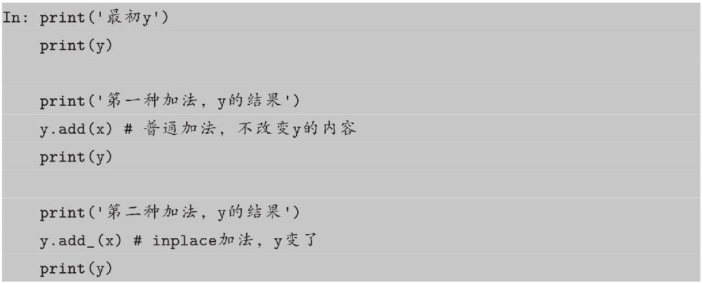
注意 ，函数名后面带下画线 的函数会修改Tensor本身。例如，x.add （y）和x.t
（）会改变x，但x.add（y）和x.t（）会返回一个新的Tensor，而x不变。
Tensor还支持很多操作，包括数学运算、线性代数、选择、切片等，其接口设计与numpy极为相似。更详细的使用方法会在第3章系统讲解。
Tensor和numpy的数组间的互操作非常容易且快速。Tensor不支持的操作，可以先转为numpy数组处理，之后再转回Tensor。

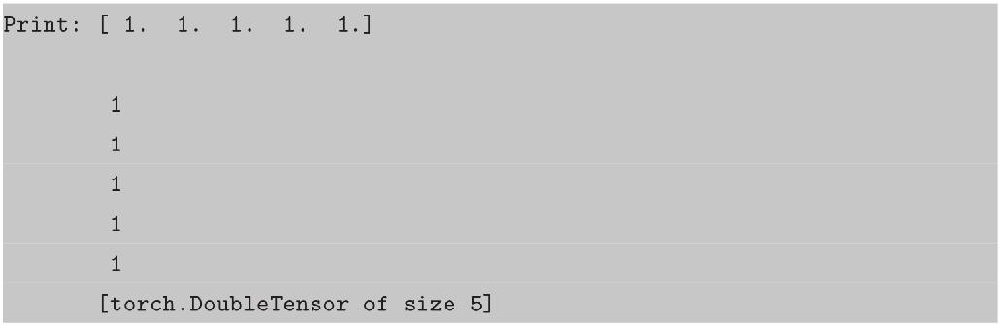
Tensor和numpy对象共享内存，所以它们之间的转换很快，而且几乎不会消耗资源。这也意味着，如果其中一个变了，另外一个也会随之改变。
Tensor可通过.cuda方法转为GPU的Tensor，从而享受GPU带来的加速运算。
在此处可能会发现GPU运算的速度并未提升太多，这是因为x和y太小且运算也较简单，而且将数据从内存转移到显存还需要花费额外的开销。GPU的优势需在大规模数据和复杂运算下才能体现出来。
2.2.2 Autograd：自动微分
深度学习的算法本质上是通过反向传播求导数，PyTorch的Autograd模块实现了此功能。在Tensor上的所有操作，Autograd都能为它们自动提供微分，避免手动计算导数的复杂过程。
autograd.Variable是Autograd中的核心类，它简单封装了Tensor，并支持几乎所有Tensor的操作。Tensor在被封装为Variable之后，可以调用它的.backward实现反向传播，自动计算所有梯度。Variable的数据结构如图2-6所示。
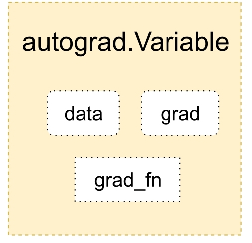
图2-6 Variable的数据结构
Variable主要包含三个属性。
• data：保存Variable所包含的Tensor。
• grad：保存data对应的梯度，grad也是个Variable，而不是Tensor，它和data的形状一样。
• grad fn：指向一个Function对象，这个Function用来反向传播计算输入的梯度，具体细节会在第3章讲解。
注意 ：grad在反向传播过程中是累加的（accumulated），这意味着每次运行反向传播，梯度都会累加之前的梯度，所以反向传播之前需把梯度清零。

Variable和Tensor具有近乎一致的接口，在实际使用中可以无缝切换。

2.2.3 神经网络
Autograd实现了反向传播功能，但是直接用来写深度学习的代码在很多情况下还是稍显复杂，torch.nn是专门为神经网络设计的模块化接口。nn构建于Autograd之上，可用来定义和运行神经网络。nn.Module是nn中最重要的类，可以把它看作一个网络的封装，包含网络各层定义及forward方法，调用forward（input）方法，可返回前向传播的结果。我们以最早的卷积神经网络LeNet为例，来看看如何用nn.Module实现。LeNet的网络结构如图2-7所示。
图2-7 LeNet网络结构
这是一个基础的前向传播（feed-forward）网络：接收输入，经过层层传递运算，得到输出。
定义网络
定义网络时，需要继承nn.Module，并实现它的forward方法，把网络中具有可学习参数的层放在构造函数 init 中。如果某一层（如ReLU）不具有可学习的参数，则既可以放在构造函数中，也可以不放，但笔者建议不放在其中，而在forward中使用nn.functional代替。
只要在nn.Module的子类中定义了forward函数，backward函数就会被自动实现（利用Autograd）。在forward 函数中可使用任何Variable支持的函数，还可以使用if、for循环、print、log等Python语法，写法和标准的Python写法一致。
网络的可学习参数通过net.parameters （）返回，net.named parameters可同时返回可学习的参数及名称。
forward函数的输入和输出都是Variable，只有Variable才具有自动求导功能，Tensor是没有的，所以在输入时，需要把Tensor封装成Variable。
需要注意的是，torch.nn只支持mini-batches，不支持一次只输入一个样本，即一次必须是一个batch。如果只想输入一个样本，则用 input.unsqueeze
（0）将batch_size设为1。例如，nn.Conv2d输入必须是4维的，形如nSamples×nChannels×Height×Width。可将nSample设为1，即1×nChannels×Height×Width。
损失函数
nn 实现了神经网络中大多数的损失函数，例如 nn.MSELoss 用来计算均方误差，nn.CrossEntropyLoss用来计算交叉熵损失。
如果对loss进行反向传播溯源（使用grad fn属性），可看到它的计算图如下：
当调用loss.backward （）时，该图会动态生成并自动微分，也会自动计算图中参数（Parameter）的导数。
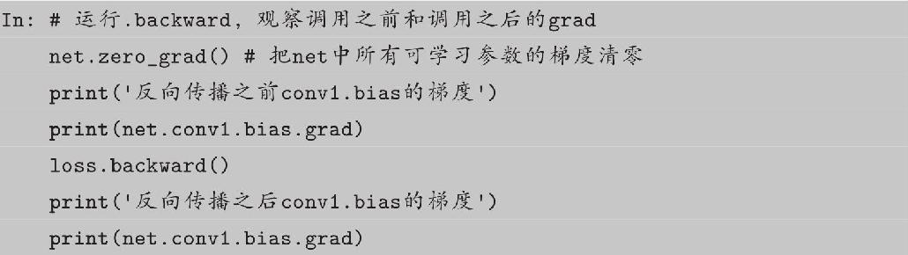
优化器
在反向传播计算完所有参数的梯度后，还需要使用优化方法更新网络的权重和参数。例如，随机梯度下降法（SGD）的更新策略如下：
手动实现如下：
torch.optim中实现了深度学习中绝大多数的优化方法，例如 RMSProp、Adam、SGD等，更便于使用，因此通常并不需要手动写上述代码。
数据加载与预处理
在深度学习中数据加载及预处理是非常复杂烦琐的，但PyTorch提供了一些可极大简化和加快数据处理流程的工具。同时，对于常用的数据集，PyTorch也提供了封装好的接口供用户快速调用，这些数据集主要保存在torchvision中。
torchvision实现了常用的图像数据加载功能，例如Imagenet、CIFAR10、MNIST等，以及常用的数据转换操作，这极大地方便了数据加载。
2.2.4 小试牛刀：CIFAR-10分类
下面我们来尝试实现对CIFAR-10数据集的分类，步骤如下：
（1）使用torchvision加载并预处理CIFAR-10数据集。
（2）定义网络。
（3）定义损失函数和优化器。
（4）训练网络并更新网络参数。
（5）测试网络。
CIFAR-10数据加载及预处理
CIFAR-10[6]是一个常用的彩色图片数据集，它有10个类别airplane、automobile、bird、cat、deer、dog、frog、horse、ship和truck。每张图片都是3×32×32，也即3通道彩色图片，分辨率为32×32。
Dataset对象是一个数据集，可以按下标访问，返回形如（data，label）的数据。
图2-8 程序输出：CIFAR10的示例图片
Dataloader是一个可迭代的对象，它将dataset返回的每一条数据样本拼接成一个batch，并提供多线程加速优化和数据打乱等操作。当程序对dataset的所有数据遍历完一遍之后，对Dataloader也完成了一次迭代。

图2-9 程序输出：测试集的图片
定义网络
复制上面的LeNet网络，修改self.conv1中第一个参数为3通道，因为CIFAR-10是3通道彩图。

定义损失函数和优化器（loss和optimizer）
训练网络
所有网络的训练流程都是类似的，不断地执行如下流程。
• 输入数据。
• 前向传播+反向传播。
• 更新参数。

此处仅训练了2个epoch（遍历完一遍数据集称为一个epoch），我们来看看网络有没有效果。将测试图片输入网络，计算它的label，然后与实际的label进行比较。
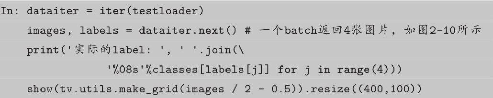

图2-10 程序输出的图片
接着计算网络预测的label：
我们已经可以看出效果，准确率为75%，但这只是一部分图片，我们再来看看在整个测试集上的效果。
训练的准确率远比随机猜测（准确率为10%）好，证明网络确实学到了东西。
在GPU上训练
就像之前把Tensor从CPU转到GPU一样，模型也可以类似地从CPU转到GPU。
如果发现在GPU上训练的速度并没比在CPU上提速很多，实际是因为网络比较小，GPU没有完全发挥自己的真正实力。
对PyTorch的基础介绍至此结束。总结一下，本节主要包含以下内容。
（1）Tensor：类似numpy数组的数据结构，与numpy接口类似，可方便地互相转换。
（2）autograd/Variable：Variable封装了Tensor，并提供自动求导功能。
（3）nn：专门为神经网络设计的接口，提供了很多有用的功能（神经网络层、损失函数、优化器等）。
（4）神经网络训练：以CIFAR-10分类为例演示了神经网络的训练流程，包括数据加载、网络搭建、训练及测试。
通过本章的学习，读者能够配置PyTorch+Jupyter+IPython的学习环境。另外，通过2.2节关于PyTorch的概要介绍，相信读者可以体会出PyTorch接口简单、使用灵活等特点。如果有哪些内容读者没有理解，不用着急，这些内容会在后续章节深入和详细地讲解。
[2]https://github.com/pytorch/pytorch/issues/494
[3]https://zhuanlan.zhihu.com/p/26871672
[4]http://pytorch.org/tutorials/beginner/deep_learning_60min_blitz.html
[5]http://cs231n.github.io/python-numpy-tutorial/
[6]http://www.cs.toronto.edu/~kriz/cifar.html
3 Tensor和autograd
几乎所有的深度学习框架背后的设计核心都是张量和计算图，PyTorch也不例外，本章我们将学习PyTorch中的张量系统（Tensor）和自动微分系统（autograd）。
3.1 Tensor
Tensor，又名张量，读者可能对这个名词似曾相识，因为它不仅在PyTorch中出现过，也是Theano、TensorFlow、Torch和MXNet中重要的数据结构。关于张量的本质不乏深度剖析的文章，但从工程角度讲，可简单地认为它就是一个数组，且支持高效的科学计算。它可以是一个数（标量）、一维数组（向量）、二维数组（矩阵）或更高维的数组（高阶数据）。Tensor和numpy的ndarrays类似，但PyTorch的tensor支持GPU加速。
本节将系统讲解tensor的使用，力求面面俱到，但不会涉及每个函数。对于更多函数及其用法，读者可通过在IPython/Notebook中使用＜function＞？查看帮助文档，或查阅PyTorch的官方文档[1]。
3.1.1 基础操作
学习过numpy的读者会对本节内容非常熟悉，因为tensor的接口设计得与numpy类似，以方便用户使用。若不熟悉 numpy 也没关系，本节内容并不要求读者先掌握numpy。
从接口的角度讲，对tensor的操作可分为两类：
（1） torch.function，如torch.save等。
（2） tensor.function，如tensor.view等。
为方便使用，对tensor的大部分操作同时支持这两类接口，在本书中不做具体区分，如torch.sum（a，b）与a.sum（b）功能等价。
从存储的角度讲，对tensor的操作又可分为两类：
（1）不会修改自身的数据，如a.add（b），加法的结果会返回一个新的tensor。
（2）会修改自身的数据，如a.add （b），加法的结果仍存储在a中，a被修改了。
函数名以 结尾的都是inplace方式，即会修改调用者自己的数据，在实际应用中需加以区分。
创建Tensor
在PyTorch中新建tensor的方法有很多，具体如表3-1所示。
表3-1 常见的新建tensor的方法
其中使用Tensor函数新建tensor是最复杂多变的方式，它既可以接收一个list，并根据list的数据新建tensor，也能根据指定的形状新建tensor，还能传入其他的tensor，下面举几个例子。

tensor.size （）返回torch.Size对象，它是tuple的子类，但其使用方式与tuple略有区别。
除了tensor.size（），还可以利用tensor.shape直接查看 tensor 的形状，tensor.shape等价于tensor.size
（）。

需要注意的是，t.Tensor（*sizes）创建tensor时，系统不会马上分配空间，只会计算剩余的内存是否足够使用，使用到tensor时才会分配，而其他操作都是在创建完tensor后马上进行空间分配。其他常用的创建tensor方法举例如下。
常用Tensor操作
通过tensor.view方法可以调整tensor的形状，但必须保证调整前后元素总数一致。view不会修改自身的数据，返回的新tensor与源tensor共享内存，即更改其中一个，另外一个也会跟着改变。在实际应用中可能经常需要添加或减少某一维度，这时squeeze和unsqueeze两个函数就派上了用场。


resize是另一种可用来调整size的方法，但与view不同，它可以修改tensor的尺寸。如果新尺寸超过了原尺寸，会自动分配新的内存空间，而如果新尺寸小于原尺寸，则之前的数据依旧会被保存，我们来看一个例子。
索引操作
Tensor支持与numpy.ndarray类似的索引操作，语法上也类似，下面通过一些例子，讲解常用的索引操作。如无特殊说明，索引出来的结果与原tensor共享内存，即修改一个，另一个会跟着修改。

其他常用的选择函数如表3-2所示。
表3-2 常用的选择函数
gather是一个比较复杂的操作，对一个二维tensor，输出的每个元素如下：
三维tensor的gather操作同理，下面举几个例子。
与gather相对应的逆操作是scatter，gather把数据从input中按index取出，而scatter 是把取出的数据再放回去。注意scatter 函数是inplace操作。
高级索引
PyTorch 0.2版中完善了索引操作，目前已经支持绝大多数numpy风格的高级索引[2]。高级索引可以看成是普通索引操作的扩展，但是高级索引操作的结果一般不和原始的Tensor共享内存。


Tensor类型
Tensor有不同的数据类型，如表3-3所示，每种类型分别对应有CPU和GPU版本（HalfTensor除外）。默认的tensor是FloatTensor，可通过t.set default tensor type修改默认tensor类型（如果默认类型为GPU tensor，则所有操作都将在GPU上进行）。Tensor的类型对分析内存占用很有帮助。例如，一个size为（1000，1000，1000）的Float-Tensor，它有1000 x1000x1000=10^9个元素，每个元素占32bit/8=4Byte内存，所以共占大约4GB内存/显存。HalfTensor是专门为GPU版本设计的，同样的元素个数，显存占用只有FloatTensor的一半，所以可以极大地缓解GPU显存不足的问题，但由于HalfTensor所能表示的数值大小和精度有限[3]，所以可能出现溢出等问题。
表3-3 tensor数据类型
各数据类型之间可以互相转换，type（new type）是通用的做法，同时还有float、long、half等快捷方法。CPU tensor 与 GPU tensor 之间的互相转换通过tensor.cuda和tensor.cpu的方法实现。Tensor还有一个new方法，用法与t.Tensor一样，会调用该tensor对应类型的构造函数，生成与当前tensor类型一致的tensor。
逐元素操作
这部分操作会对tensor的每一个元素（point-wise，又名element-wise）进行操作，此类操作的输入与输出形状一致。常用的操作如表3-4所示。
表3-4 常见的逐元素操作
对于很多操作，例如div、mul、pow、fmod等，PyTorch都实现了运算符重载，所以可以直接使用运算符。例如，a*2等价于torch.pow（a，2），a2等价于torch.mul（a，2）。
其中clamp（x，min，max）的输出满足以下公式：
clamp常用在某些需要比较大小的地方，如取一个tensor的每个元素与另一个数的较大值。
归并操作
此类操作会使输出形状小于输入形状，并可以沿着某一维度进行指定操作。如加法sum，既可以计算整个tensor的和，也可以计算tensor中每一行或每一列的和。常用的归并操作如表3-5所示。
表3-5 常用的归并操作
以上大多数函数都有一个参数dim，用来指定这些操作是在哪个维度上执行的。关于dim（对应于Numpy中的axis）的解释众说纷纭，这里提供一个简单的记忆方式。
假设输入的形状是（m，n，k）：
• 如果指定dim=0，输出的形状就是（1，n，k）或者（n，k）；
• 如果指定dim=1，输出的形状就是（m，1，k）或者（m，k）；
• 如果指定dim=2，输出的形状就是（m，n，1）或者（m，n）。
size中是否有“1”，取决于参数keepdim，keepdim=True会保留维度1。从PyTorch 0.2.0版本起，keepdim默认为False。注意，以上只是经验总结，并非所有函数都符合这种形状变化方式，如cumsum。
比较
比较函数中有一些是逐元素比较，操作类似于逐元素操作，还有一些则类似于归并操作。常用的比较函数如表3-6所示。
表3-6 常用的比较函数
表中第一行的比较操作已经实现了运算符重载，因此可以使用a＞=b、a＞b、a！=b和a==b，其返回结果是一个ByteTensor，可用来选取元素。max/min这两个操作比较特殊，以max为例，它有以下三种使用情况。
• t.max（tensor）：返回tensor中最大的一个数。
• t.max（tensor，dim）：指定维上最大的数，返回tensor和下标。
• t.max（tensor1，tensor2）：比较两个tensor相比较大的元素。
比较一个tensor和一个数，可以使用clamp函数。下面举例说明。


线性代数
PyTorch的线性函数主要封装了Blas和Lapack，其用法和接口都与之类似。常用的线性代数函数如表3-7所示。
表3-7 常用的线性代数函数
具体使用说明请参见官方文档[4]，需要注意的是，矩阵的转置会导致存储空间不连续，需调用它的.contiguous方法将其转为连续。
3.1.2 Tensor和Numpy
Tensor和Numpy数组之间具有很高的相似性，彼此之间的互操作也非常简单高效。需要注意的是，Numpy和Tensor共享内存。由于Numpy历史悠久，支持丰富的操作，所以当遇到Tensor不支持的操作时，可先转成Numpy数组，处理后再转回tensor，其转换开销很小。

广播法则（Broadcast）是科学运算中经常使用的一个技巧，它在快速执行向量化的同时不会占用额外的内存/显存。Numpy的广播法则定义如下：
• 让所有输入数组都向其中shape最长的数组看齐，shape中不足的部分通过在前面加1补齐。
• 两个数组要么在某一个维度的长度一致，要么其中一个为1，否则不能计算。
• 当输入数组的某个维度的长度为1时，计算时沿此维度复制扩充成一样的形状。
PyTorch当前已经支持了自动广播法则，但笔者还是建议读者通过以下两个函数的组合手动实现广播法则，这样更直观，更不易出错。
• unsqueeze或者view：为数据某一维的形状补1，实现法则1。
• expand或者expand as，重复数组，实现法则3；该操作不会复制数组，所以不会占用额外的空间。
注意 ：repeat实现与expand相类似的功能，但是repeat会把相同数据复制多份，因此会占用额外的空间。
3.1.3 内部结构
tensor的数据结构如图3-1所示。tensor分为头信息区（Tensor）和存储区（Storage），信息区主要保存着tensor的形状（size）、步长（stride）、数据类型（type）等信息，而真正的数据则保存成连续数组。由于数据动辄成千上万，因此信息区元素占用内存较少，主要内存占用取决于tensor中元素的数目，即存储区的大小。
图3-1 Tensor的数据结构
一般来说，一个tensor有着与之相对应的storage，storage是在data之上封装的接口，便于使用。不同tensor的头信息一般不同，但却可能使用相同的storage。下面我们来看两个例子。


可见绝大多数操作并不修改tensor的数据，只是修改了tensor的头信息。这种做法更节省内存，同时提升了处理速度。此外，有些操作会导致tensor不连续，这时需调用tensor.contiguous方法将它们变成连续的数据，该方法复制数据到新的内存，不再与原来的数据共享storage。另外读者可以思考一下，之前说过的高级索引一般不共享storage，而普通索引共享storage，这是为什么呢？（提示：普通索引可以通过修改tensor的offset、stride和size实现，不修改storage的数据，高级索引则不行）。
3.1.4 其他有关Tensor的话题
这部分的内容不好专门划分为一节，但笔者认为值得读者注意，故将其放在本节。
持久化
Tensor的保存和加载十分简单，使用t.save和t.load即可完成相应的功能。在save/load时可指定使用的pickle模块，在load时还可将GPU tensor映射到CPU或其他GPU上。
向量化
向量化计算是一种特殊的并行计算方式，一般程序在同一时间只执行一个操作的方式，它可在同一时间执行多个操作，通常是对不同的数据执行同样的一个或一批指令，或者说把指令应用于一个数组/向量上。向量化可极大地提高科学运算的效率，Python本身是一门高级语言，使用很方便，但许多操作很低效，尤其是for循环。在科学计算程序中应当极力避免使用Python原生的for循环，尽量使用向量化的数值计算。
可见二者有超过10倍的速度差距，因此在实际使用中应尽量调用内建函数（builtin-function），这些函数底层由C/C++实现，能通过执行底层优化实现高效计算。因此在平时写代码时，就应养成向量化的思维习惯。
此外还有以下几点需要注意：
• 大多数t.function都有一个参数out，这时产生的结果将保存在out指定的tensor之中。
• t.set num threads可以设置PyTorch进行CPU多线程并行计算时所占用的线程数，用来限制PyTorch所占用的CPU数目。
• t.set printoptions可以用来设置打印 tensor 时的数值精度和格式。下面举例说明。

3.1.5 小试牛刀：线性回归
线性回归是机器学习的入门知识，应用十分广泛。线性回归利用数理统计中的回归分析来确定两种或两种以上变量间相互依赖的定量关系，其表达形式为y=wx+b+e，误差e服从均值为0的正态分布。线性回归的损失函数是：
利用随机梯度下降法更新参数w和b来最小化损失函数，最终学得w和b的数值。
图3-2 程序输出：x-y的分布
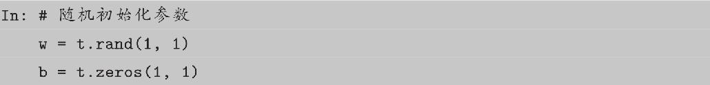
图3-3 程序输出
可见程序已经基本学出w=2、b=3，并且图中直线和数据已经实现较好的拟合。
上面提到了Tensor的许多操作，不要求全部掌握，日后遇到时可以再查阅这部分内容或者查找对应文档，在此有个基本印象即可。
3.2 autograd
用Tensor训练网络很方便，但从3.1节最后的线性回归例子来看，反向传播过程需要手动实现。这对线性回归这种较简单的模型来说还比较容易，但实际使用中经常出现非常复杂的网络结构，此时如果手动实现反向传播，不仅费时费力，而且容易出错，难以检查。torch.autograd就是为方便用户使用，专门开发的一套自动求导引擎，它能够根据输入和前向传播过程自动构建计算图，并执行反向传播。
计算图（Computation Graph）是现代深度学习框架（如PyTorch和TensorFlow等）的核心，它为自动求导算法——反向传播（Back Propogation）提供了理论支持，了解计算图在实际写程序过程中会有极大的帮助。本节会涉及一些基础的计算图知识，但并不要求读者事先对此有深入了解。关于计算图的基础知识推荐阅读Christopher Olah的文章[5]。
3.2.1 Variable
PyTorch在autograd模块中实现了计算图的相关功能，autograd中的核心数据结构是Variable。Variable封装了tensor，并记录对tensor的操作记录用来构建计算图。Variable的数据结构如图3-4所示，主要包含三个属性。
• data：保存variable所包含的tensor。
• grad：保存data对应的梯度，grad也是variable，而不是tensor，它与data形状一致。
• grad fn：指向一个Function，记录tensor的操作历史，即它是什么操作的输出，用来构建计算图。如果某一个变量是由用户创建的，则它为叶子节点，对应的grad_fn等于None。
图3-4 Variable数据结构
Variable的构造函数需要传入tensor，同时有两个可选参数。
• requires grad （bool）：是否需要对该variable进行求导。
• volatile （bool）：意为“挥发”，设置为True，构建在该variable之上的图都不会求导，专为推理阶段设计。
Variable支持大部分tensor支持的函数，但其不支持部分inplace函数，因为这些函数会修改tensor自身，而在反向传播中，variable需要缓存原来的tensor来计算梯度。如果想要计算各个Variable的梯度，只需调用根节点variable的backward方法，autograd会自动沿着计算图反向传播，计算每一个叶子节点的梯度。
variable.backward（grad variables=None，retain graph=None，create gra ph=None）主要有如下参数。
• grad_variables：形状与variable一致，对于y.backward
（），grad_variables相当于链式法则。grad_variables也可以是tensor或序列。
• retain_graph：反向传播需要缓存一些中间结果，反向传播之后，这些缓存就被清空，可通过指定这个参数不清空缓存，用来多次反向传播。
• create_graph：对反向传播过程再次构建计算图，可通过backward of backward实现求高阶导数。
上述描述可能比较抽象，如果没有看懂也不用着急，笔者会在本节后半部分详细介绍，下面先看几个例子。

接着我们来看看autograd计算的导数和我们手动推导的导数的区别。
它的导函数是：

3.2.2 计算图
PyTorch中autograd的底层采用了计算图，计算图是一种特殊的有向无环图（DAG），用于记录算子与变量之间的关系。一般用矩形表示算子，椭圆形表示变量。如表达式z=wx+b可分解为y=wx和z=y+b，其计算图如图3-5所示，图中的MUL和ADD都是算子，w、x、b为变量。
图3-5 计算图
如上有向无环图中，X 和b是叶子节点（leaf node），这些节点通常由用户自己创建，不依赖于其他变量。z称为根节点，是计算图的最终目标。利用链式法则很容易求得各个叶子节点的梯度。
而有了计算图，上述链式求导即可利用计算图的反向传播自动完成，其过程如图3-6所示。
图3-6 计算图的反向传播
在PyTorch实现中，autograd会随着用户的操作，记录生成当前variable的所有操作，并由此建立一个有向无环图。用户每进行一个操作，相应的计算图就会发生改变。更底层的实现中，图中记录了操作Function，每一个变量在图中的位置可通过其grad fn属性在图中的位置推测得到。在反向传播过程中，autograd沿着这个图从当前变量（根节点z）溯源，可以利用链式求导法则计算所有叶子节点的梯度。每一个前向传播操作的函数都有与之对应的反向传播函数用来计算输入的各个variable的梯度，这些函数的函数名通常以Backward结尾。下面结合代码学习autograd的实现细节。

计算w 的梯度时需要用到x 的数值，这些数值在前向过程中会保存成buffer，在计算完梯度之后会自动清空。为了能够多次反向传播需要指定retain graph来保留这些buffer。
PyTorch使用的是动态图，它的计算图在每次前向传播时都是从头开始构建的，所以它能够使用Python控制语句（如for、if等），根据需求创建计算图。这一点在自然语言处理领域中很有用，它意味着你不需要事先构建所有可能用到的图的路径，图在运行时才构建。
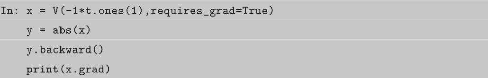
变量的requires grad属性默认为False，如果某一个节点requires_grad被设置为True，那么所有依赖它的节点requires grad都是True。这其实很好理解，对于x →y
→z，x.requires_grad=True。当需要计算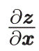时，根据链式法则，，自然也需要求，所以y.requires_grad会被自动标为True。
volatile=True是另外一个很重要的标识，它能够将所有依赖于它的节点全部设为volatile=True，其优先级比requires grad=True高。volatile=True的节点不会求导，即使requires grad=True，也无法进行反向传播。对于不需要反向传播的情景（如in-ference，即测试推理时），该参数可实现一定程度的速度提升，并节省约一半显存，因为其不需要分配空间计算梯度。
在反向传播过程中非叶子节点的导数计算完之后即被清空。若想查看这些变量的梯度，有以下两种方法：
• 使用autograd.grad函数
• 使用hook
autograd.grad和hook方法都是很强大的工具，更详细的用法参考官方api文档，这里只举例说明其基础的使用方法。推荐使用hook方法，但是在实际使用中应尽量避免修改grad的值。

最后再来看看variable中grad属性和backward函数grad variables参数的含义。
• variable x的梯度是目标函数f （x）对x的梯度，，形状和x一致。
• y.backward（grad_variables）中的grad_variables相当于链式求导法则中的中的。z是目标函数，一般是一个标量，故而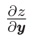的形状与variable y的形状一致。z.backward （）等价于y.backward（grad_y）。z.backward
（）省略了grad_variables参数，是因为z是一个标量，而。
值得注意的是，只有对variable的操作才能使用autograd，如果对variable的data直接进行操作，将无法使用反向传播。除了参数初始化，一般我们不会修改variable.data的值。
在PyTorch中计算图的特点可总结如下。
• autograd根据用户对variable的操作构建计算图。对variable的操作抽象为Function。
• 由用户创建的节点称为叶子节点，叶子节点的grad fn为None。叶子节点中需要求导的variable，具有AccumulateGrad标识，因其梯度是累加的。
• variable默认是不需要求导的，即requires grad属性默认为False。如果某一个节点requires_grad被设置为True，那么所有依赖它的节点requires grad都为True。
• variable的volatile属性默认为False，如果某一个variable的volatile属性被设为True，那么所有依赖它的节点volatile属性都为True。volatile属性为True的节点不会求导，volatile的优先级比requires grad高。
• 多次反向传播时，梯度是累加的。反向传播的中间缓存会被清空，为进行多次反向传播需指定retain graph=True来保存这些缓存。
• 非叶子节点的梯度计算完之后即被清空，可以使用autograd.grad或hook技术获取非叶子节点梯度的值。
• variable的grad与data形状一致，应避免直接修改variable.data，因为对data的直接操作无法利用autograd进行反向传播。
• 反向传播函数backward的参数grad variables可以看成链式求导的中间结果，如果是标量，可以省略，默认为1。
• PyTorch采用动态图设计，可以很方便地查看中间层的输出，动态地设计计算图结构。
3.2.3 扩展autograd
目前，绝大多数函数都可以使用autograd实现反向求导，但如果需要自己写一个复杂的函数，不支持自动反向求导怎么办？写一个Function，实现它的前向传播和反向传播代码，Function对应于计算图中的矩形，它接收参数，计算并返回结果。下面给出一个例子。
对以上代码的分析如下。
• 自定义的Function需要继承autograd.Function，没有构造函数 init，forward和backward函数都是静态方法。
• forward函数的输入和输出都是tensor，backward函数的输入和输出都是variable。
• backward 函数的输出和 forward 函数的输入一一对应，backward 函数的输入和forward函数的输出一一对应。
• backward函数的grad_output参数即t.autograd.backward中的grad variables。
• 如果某一个输入不需要求导，直接返回None，例如forward中的输入参数x_re-quires_grad显然无法对它求导，直接返回None即可。
• 反向传播可能需要利用前向传播的某些中间结果，在前向传播过程中，需要保存中间结果，否则前向传播结束后这些对象即被释放。
使用Function.apply（variable）即可调用实现的Function。
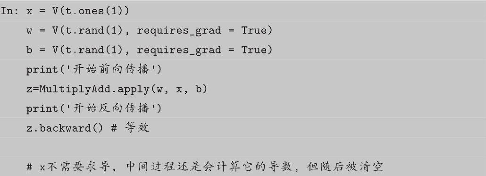
forward函数的输入是tensor，而backward函数的输入是variable，这是为了实现高阶求导。backward函数的输入值和返回值是variable，但在实际使用时autograd.Function会将输入variable提取为tensor，并将计算结果的tensor封装成variable返回。在back-ward函数中要对variable进行操作，是为了能够计算梯度的梯度。下面举例说明，有关torch.autograd.grad的更详细使用方法请参照文档。
这种设计在PyTorch 0.2中引入，虽然能让autograd具有高阶求导功能，但其也限制了Tensor的使用，因为autograd中反向传播的函数只能利用当前已经有的Variable操作。为了更好的灵活性，也为了兼容旧版本的代码，PyTorch还提供了另外一种扩展autograd的方法。利用装饰器@once differentiable，能够在backward函数中自动将输入的variable提取成tensor，把计算结果的tensor自动封装成variable。有了这个特性，我们就能够很方便地使用numpy/scipy中的函数，操作不再局限于variable所支持的操作。这种做法正如名字中所暗示的那样只能求导一次，它打断了反向传播图，不再支持高阶求导。
上面所描述的都是新式Function，还有个legacy Function，可以带有 init 方法，forward和backwad函数也不需要声明为@staticmethod，但随着版本更迭，会越来越少遇到此类Function，在此不做更多介绍。
在实现了自己的Function之后，还可以使用gradcheck函数检测实现是否正确。grad-check通过数值逼近计算梯度，可能具有一定的误差，通过控制eps的大小可以控制容忍的误差。新版autograd的内容可以参考GitHub上开发者的讨论[6]。
下面举例说明如何利用Function实现Sigmoid Function。
显然f sigmoid要比单纯利用autograd加减和乘方操作实现的函数快不少，因为f_sigmoid的backward优化了反向传播的过程。另外，可以看出系统实现的builtin接口（t.sigmoid）更快。
3.2.4 小试牛刀：用Variable实现线性回归
在3.2.3节中讲解了利用tensor实现线性回归，本节将讲解如何利用autograd/Vari-able实现线性回归，读者可以从中体会autograd的便捷之处。
图3-7 程序输出：x-y分布
图3-8 程序输出：x-y分布与拟合直线

用autograd实现的线性回归最大的不同点就在于利用autograd不需要手动计算梯度，可以自动微分。这一点不单是在深度学习中，在许多机器学习的问题中都很有用。另外，需要注意的是在每次反向传播之前要记得先把梯度清零。
本章主要介绍了PyTorch中两个基础的数据结构：Tensor和autograd中的Variable。Tensor是一个类似numpy数组的数据结构，能高效执行数据计算，有着和numpy类似的接口，并提供简单易用的GPU加速。Variable封装了Tensor并提供自动求导技术，具有和Tensor几乎一样的接口。autograd是PyTorch的自动微分引擎，采用动态计算图技术，能够快速高效地计算导数。
除了讲解Tensor和autograd的基础用法，本章还介绍了Tensor和Autograd的底层原理和设计思想。部分内容可能比较复杂，即使读者难以理解也不影响使用，但是了解这些运作原理，有助于更好地掌握PyTorch。
[2]https://docs.scipy.org/doc/numpy/reference/arrays.indexing.html#advanced-indexing
[3]https://stackoverflow.com/questions/872544/what-range-of-numbers-can-be-represented-in-a-16-32-and-64-bit-ieee-754-syste
[4]http://pytorch.org/docs/torch.html#blas-and-lapack-operations
[5]http://colah.github.io/posts/2015-08-Backprop/
[6]https://github.com/pytorch/pytorch/pull/1016
4 神经网络工具箱nn
autograd实现了自动微分系统，然而对于深度学习来说过于底层，本章将介绍的nn模块，是构建于autograd之上的神经网络模块。除了nn之外，我们还会介绍神经网络中常用的工具，比如优化器optim、初始化init等。
4.1 nn.Module
第3章中提到，使用autograd可实现深度学习模型，但其抽象程度较低，如果用其来实现深度学习模型，则需要编写的代码量极大。在这种情况下，torch.nn应运而生，其是专门为深度学习设计的模块。torch.nn的核心数据结构是Module，它是一个抽象的概念，既可以表示神经网络中的某个层（layer），也可以表示一个包含很多层的神经网络。在实际使用中，最常见的做法是继承nn.Module，撰写自己的网络/层。下面先来看看如何用nn.Module实现自己的全连接层。全连接层，又名仿射层，输出y和输入x满足y=W x+b，W 和b是可学习的参数。
可见，全连接层的实现非常简单，其代码量不超过10行，但需注意以下几点。
• 自定义层Linear必须继承nn.Module，并且在其构造函数中需调用nn.Module的构造函数，即super（Linear，self）.init
（）或nn.Module.init （self）。
• 在构造函数 init 中必须自己定义可学习的参数，并封装成Parameter，如在本例中我们把w和b封装成Parameter。Parameter是一种特殊的Variable，但其默认需要求导（requires_grad=True），感兴趣的读者可以通过nn.Parameter？？查看Parameter类的源代码。
• forward函数实现前向传播过程，其输入可以是一个或多个variable，对x的任何操作也必须是variable支持的操作。
• 无须写反向传播函数，因其前向传播都是对variable进行操作，nn.Module能够利用autograd自动实现反向传播，这一点比Function简单许多。
• 使用时，直观上可将layer看成数学概念中的函数，调用layer（input）即可得到input对应的结果。它等价于layers.call
（input），在 call 函数中，主要调用的是layer.forward（x），另外还对钩子做了一些处理。所以在实际使用中应尽量使用layer（x）而不是使用layer.forward（x），关于钩子技术的具体内容将在下文讲解。
• Module中的可学习参数可以通过named parameters （）或者parameters
（）返回迭代器，前者会给每个parameter附上名字，使其更具有辨识度。
可见利用Module实现的全连接层，比利用Function实现的更简单，因其不再需要写反向传播函数。
Module能够自动检测到自己的parameter，并将其作为学习参数。除了parameter，Module还包含子Module，主Module能够递归查找子Module中的parameter。下面再来看看稍微复杂一点的网络：多层感知机。
多层感知机的网络结构如图4-1所示，它由两个全连接层组成，采用sigmoid函数作为激活函数（图中没有画出）。
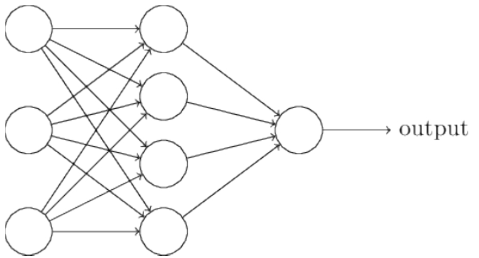
图4-1 多层感知机
可见，即使是稍复杂的多层感知机，其实现依旧很简单。这里需要注意以下两个知识点。
• 构造函数 init 中，可利用前面自定义的Linear层（module）作为当前module对象的一个子module，它的可学习参数，也会成为当前module的可学习参数。
• 在前向传播函数中，我们有意识地将输出变量都命名成x，是为了能让Python回收一些中间层的输出，从而节省内存。但并不是所有的中间结果都会被回收，有些variable虽然名字被覆盖，但其在反向传播时仍需要用到，此时Python的内存回收模块将通过检查引用计数，不会回收这一部分内存。
module中parameter的全局命名规范如下。
• Parameter直接命名。例如self.param name=nn.Parameter（t.randn（3，4）），命名为param name。
• 子module中的parameter，会在其名字之前加上当前module的名字。例如self.sub module=SubModel
（），SubModel 中有个 parameter 的名字也叫做 param_name，那么二者拼接而成的parameter name就是sub module.param name。
为方便用户使用，PyTorch实现了神经网络中绝大多数的layer，这些layer都继承于nn.Module，封装了可学习参数parameter，并实现了forward函数，且专门针对GPU运算进行了CuDNN优化，其速度和性能都十分优异。本书不准备对nn.Module中的所有层进行详细介绍，具体内容读者可参照官方文档[1]或在IPython/Jupyter中使用nn.layer？查看。阅读文档时应主要关注以下几点。
• 构造函数的参数，如nn.Linear（in_features，out_features，bias），需关注这三个参数的作用。
• 属性、可学习参数和子module。如nn.Linear中有weight和bias两个可学习参数，不包含子module。
• 输入输出的形状，如nn.linear的输入形状是（N，input_features），输出为（N，output_features），N是batch_size。
这些自定义layer对输入形状都有假设：输入的不是单个数据，而是一个batch。若想输入一个数据，必须调用unsqueeze
（0）函数将数据伪装成batch_size=1的batch。
下面将从应用层面出发，对一些常用的layer做简单介绍，更详细的用法请查看官方文档。
4.2 常用的神经网络层
4.2.1 图像相关层
图像相关层主要包括卷积层（Conv）、池化层（Pool）等，这些层在实际使用中可分为一维（1D）、二维（2D）和三维（3D），池化方式又分为平均池化（AvgPool）、最大值池化（MaxPool）、自适应池化（AdaptiveAvgPool）等。卷积层除了常用的前向卷积外，还有逆卷积（TransposeConv）。下面举例说明。
图4-2 程序输出：Lena图

图4-3 处理后的Lena图
图像的卷积操作还有各种变体，有关各种变体的介绍可以参照此处的介绍[2]。
池化层可以看作是一种特殊的卷积层，用来下采样。但池化层没有可学习参数，其weight是固定的。
图4-4 池化处理后的Lena图
除了卷积层和池化层，深度学习中还将常用到以下几个层。
• Linear：全连接层。
• BatchNorm：批规范化层，分为1D、2D和3D。除了标准的BatchNorm之外，还有在风格迁移中常用到的InstanceNorm层。
• Dropout：dropout层，用来防止过拟合，同样分为1D、2D和3D。
下面通过例子讲解它们的使用方法。
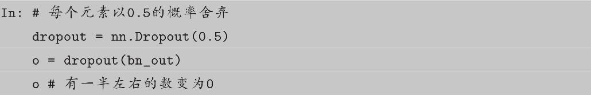
以上很多例子中都对module的属性直接操作，其大多数是可学习参数，一般会随着学习的进行而不断改变。实际使用中除非需要使用特殊的初始化，否则应尽量不要直接修改这些参数。
4.2.2 激活函数
PyTorch实现了常见的激活函数，其具体的接口信息可参见官方文档[3]，这些激活函数可作为独立的layer使用。这里将介绍最常用的激活函数ReLU，其数学表达式为：
ReLU函数有个inplace参数，如果设为True，它会把输出直接覆盖到输入中，这样可以节省内存/显存。之所以可以覆盖是因为在计算ReLU的反向传播时，只需根据输出就能够推算出反向传播的梯度。但是只有少数的autograd操作支持inplace操作（如variable.sigmoid_（）），除非你明确地知道自己在做什么，否则一般不要使用inplace操作。在以上例子中，都是将每一层的输出直接作为下一层的输入，这种网络称为前馈传播网络（Feedforward Neural Network）。对于此类网络，如果每次都写复杂的forward函数会有些麻烦，在此就有两种简化方式，ModuleList和Sequential。其中Sequential是一个特殊的Module，它包含几个子module，前向传播时会将输入一层接一层地传递下去。ModuleList也是一个特殊的Module，可以包含几个子module，可以像用list一样使用它，但不能直接把输入传给ModuleList。下面我们举例说明。
看到这里，读者可能会问，为何不直接使用Python中自带的list，而非要多此一举呢？这是因为ModuleList是Module的子类，当在Module中使用它时，就能自动识别为子module。
下面我们举例说明。

可见，list中的子module并不能被主module识别，而ModuleList中的子module能够被主module识别。这意味着如果用list保存子module，将无法调整其参数，因其未加入到主module的参数中。
除ModuleList之外还有ParameterList，它是一个可以包含多个parameter的类list对象。在实际应用中，使用方式与ModuleList类似。在构造函数 init 中用到list、tuple、dict等对象时，一定要思考是否应该用ModuleList或ParameterList代替。
4.2.3 循环神经网络层
近些年，随着深度学习和自然语言处理的结合加深，循环神经网络（RNN）的使用也越来越多，关于RNN的基础知识，推荐阅读colah的文章[4]入门。PyTorch中实现了如今最常用的三种RNN：RNN（vanilla RNN）、LSTM和GRU。此外还有对应的三种RNNCell。
RNN和RNNCell层的区别在于前者能够处理整个序列，而后者一次只处理序列中一个时间点的数据，前者封装更完备更易于使用，后者更具灵活性。RNN层可以通过组合调用RNNCell来实现。
词向量在自然语言中应用十分广泛，PyTorch同样提供了Embedding层。
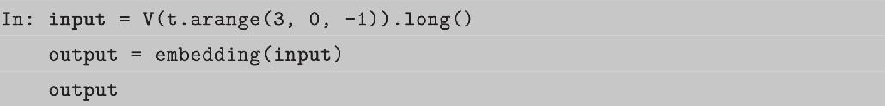
4.2.4 损失函数
在深度学习中要用到各种各样的损失函数（Loss Function），这些损失函数可看作是一种特殊的layer，PyTorch也将这些损失函数实现为nn.Module的子类。然而在实际使用中通常将这些损失函数专门提取出来，作为独立的一部分。详细的loss使用请参照官方文档[5]，这里以分类中最常用的交叉熵损失CrossEntropyloss为例讲解。

4.3 优化器
PyTorch将深度学习中常用的优化方法全部封装在torch.optim中，其设计十分灵活，能够很方便地扩展成自定义的优化方法。
所有的优化方法都是继承基类optim.Optimizer，并实现了自己的优化步骤。下面就以最基本的优化方法——随机梯度下降法（SGD）举例说明。这里需要重点掌握：
• 优化方法的基本使用方法。
• 如何对模型的不同部分设置不同的学习率。
• 如何调整学习率。
调整学习率主要有两种做法。一种是修改optimizer.param_groups中对应的学习率，另一种是新建优化器（更简单也是更推荐的做法），由于optimizer十分轻量级，构建开销很小，故可以构建新的optimizer。但是新建优化器会重新初始化动量等状态信息，这对使用动量的优化器来说（如带momentum的sgd），可能会造成损失函数在收敛过程中出现震荡。
4.4 nn.functional
nn中还有一个很常用的模块：nn.functional。nn中的大多数layer在functional中都有一个与之相对应的函数。nn.functional中的函数和nn.Module的主要区别在于，用nn.Module实现的layers是一个特殊的类，都是由class Layer（nn.Module）定义，会自动提取可学习的参数；而nn.functional中的函数更像是纯函数，由def function（input）定义。下面举例说明functional的使用，并对比二者的不同之处。
此时读者可能会问，应该什么时候使用nn.Module，什么时候使用nn.functional呢？答案很简单，如果模型有可学习的参数，最好用nn.Module，否则既可以使用nn.functional也可以使用nn.Module，二者在性能上没有太大差异，具体的使用方式取决于个人喜好。由于激活函数（ReLU、sigmoid、tanh）、池化（MaxPool）等层没有可学习参数，可以使用对应的functional函数代替，而卷积、全连接等具有可学习参数的网络建议使用nn.Module。下面举例说明如何在模型中搭配使用nn.Module和nn.functional。另外，虽然dropout操作也没有可学习参数，但建议还是使用nn.Dropout而不是nn.functional.dropout，因为dropout在训练和测试两个阶段的行为有所差别，使用nn.Module对象能够通过model.eval操作加以区分。
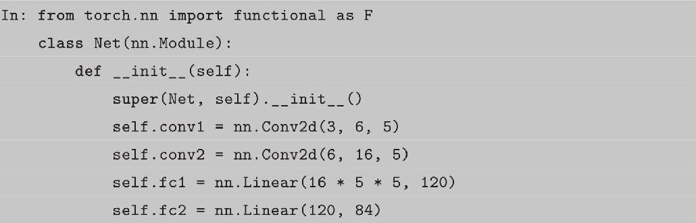
不具备可学习参数的层（激活层、池化层等），将它们用函数代替，这样可以不用放置在构造函数 init 中。有可学习参数的模块，也可以用functional代替，只不过实现起来较烦琐，需要手动定义参数parameter，如前面实现自定义的全连接层，就可将weight和bias两个参数单独拿出来，在构造函数中初始化为parameter。

关于nn.functional的设计初衷，以及它和nn.Module更多的比较说明，可参看论坛的讨论和作者写的说明[6]。
4.5 初始化策略
在深度学习中参数的初始化十分重要，良好的初始化能让模型更快收敛，并达到更高水平，而糟糕的初始化可能使模型迅速崩溃。PyTorch中nn.Module的模块参数都采取了较合理的初始化策略，因此一般不用我们考虑。当然，我们也可以用自定义初始化代替系统的默认初始化。当我们使用Parameter时，自定义初始化尤为重要，因为t.Tensor（）返回的是内存中的随机数，很可能会有极大值，这在实际训练网络中会造成溢出或者梯度消失。PyTorch中的nn.init模块专门为初始化设计，实现了常用的初始化策略。如果某种初始化策略nn.init不提供，用户也可以自己直接初始化。
4.6 nn.Module深入分析
如果想要更深入地理解nn.Module，研究其原理是很有必要的。首先来看看nn.Module基类的构造函数：
其中每个属性的解释如下。
• parameters：字典。保存用户直接设置的parameter，self.param1=nn.Parameter
（t.randn（3，3））会被检测到，在字典中加入一个key为param，value为对应pa-rameter的item，而self.submodule=nn.Linear（3，4）中的parameter则不会存于此。
• modules：子module。通过self.submodel=nn.Linear（3，4）指定的子module会保存于此。
• buffers：缓存。如batchnorm使用momentum机制，每次前向传播需用到上一次前向传播的结果。
• backward hooks与 forward hooks：钩子技术，用来提取中间变量，类似variable的hook。
• training：BatchNorm与Dropout层在训练阶段和测试阶段中采取的策略不同，通过判断training值决定前向传播策略。
上述几个属性中，parameters、modules和 buffers这三个字典中的键值，都可以通过self.key方式获得，效果等价于self.parameters [′key′]。
下面举例说明。

nn.Module在实际使用中可能层层嵌套，一个module包含若干个子module，每一个子module又包含了更多的子module。为方便用户访问各个子module，nn.Module实现了很多方法，如函数children可以查看直接子module，函数modules可以查看所有的子module（包括当前module）。与之相对应的还有函数named childen和named modules，其能够在返回module列表的同时返回它们的名字。
对batchnorm、dropout、instancenorm等在训练和测试阶段行为差距较大的层，如果在测试时不将其training值设为False，则可能会有很大影响，这在实际使用中要千万注意。虽然可通过直接设置training属性将子module设为train和eval模式，但这种方式较烦琐，因为如果一个模型具有多个dropout层，就需要为每个dropout层指定training属性。笔者推荐的做法是调用model.train
（）函数，它会将当前module及其子module中的所有training属性都设为True。相应地，model.eval
（）函数会把training属性都设为False。
register forward hook和register backward hook函数的功能类似于 variable 的register hook，可在module前向传播或反向传播时注册钩子。每次前向传播执行结束后会执行钩子函数（hook）。前向传播的钩子函数具有如下形式：hook
（module，input，output）-＞ None，而反向传播则具有如下形式：hook（module，grad input，grad output）-＞ Tensor or None。钩子函数不应修改输入和输出，并且在使用后应及时删除，以避免每次都运行钩子增加运行负载。钩子函数主要用在获取某些中间结果的情景，如中间某一层的输出或某一层的梯度。这些结果本应写在forward函数中，但如果在forward函数中加上这些处理，可能会使处理逻辑比较复杂，这时使用钩子技术就更合适。下面考虑一种场景：有一个预训练的模型，需要提取模型的某一层（不是最后一层）的输出作为特征进行分类，希望不修改其原有的模型定义文件，这时就可以利用钩子函数。下面给出实现的伪代码。
nn.Module对象在构造函数中的行为看起来有些怪异，想要真正掌握其原理，就需要看两个魔法方法 getattr 和 setattr。在Python中有两个常用的builtin方法：getattr和setattr。getattr（obj，′attr1′）等价于obj.attr，如果getattr函数无法找到所需属性，Python会调用obj.getattr
（′attr1′）方法，即getattr函数无法找到的交给 getattr 函数处理；如果这个对象没有实现 getattr 方法，程序就会抛出异常AttributeError。setattr（obj，′name′，value）等价于obj.name=value，如果obj对象实现了 setattr 方法，setattr会直接调用obj.setattr （′name′，value），否则调用builtin方法。总结如下：
• result=obj.name会调用builtin函数getattr（obj，′name′），如果该属性找不到，会调用obj.getattr
（′name′）。
• obj.name=value会调用builtin函数setattr（obj，′name′，value），如果obj对象实现了 setattr 方法，setattr会直接调用obj.setattr （′name′，value′）。
nn.Module实现了自定义的 setattr 函数，当执行module.name=value时，会在setattr 中判断value是否为Parameter或nn.Module对象，如果是则将这些对象加到 parameters和 modules两个字典中；如果是其他类型的对象，如Variable、list、dict等，则调用默认的操作，将这个值保存在 dict 中。
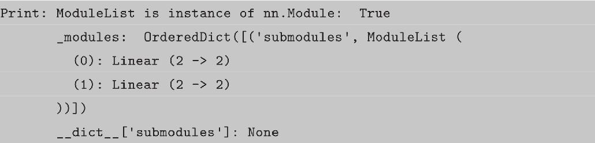
因 modules和 parameters中的item未保存在 dict 中，所以默认的getattr方法无法获取它，因而nn.Module实现了自定义的 getattr 方法。如果默认的getattr无法处理，就调用自定义的 getattr 方法，尝试从 modules、parameters和 buffers这三个字典中获取。

在PyTorch中保存模型十分简单，所有的Module对象都具有state_dict（）函数，返回当前Module所有的状态数据。将这些状态数据保存后，下次使用模型时即可利用model.load state dict （）函数将状态加载进来。优化器（optimizer）也有类似的机制，不过一般并不需要保存优化器的运行状态。

还有另外一种保存模型的方法，但因其严重依赖模型定义方式及文件路径结构等，所以很容易出问题，因而不建议使用。
将Module放在GPU上运行也十分简单，只需以下两步。
• model=model.cuda（）：将模型的所有参数转存到GPU。
• input.cuda（）：将输入数据放置到GPU上。
至于如何在多个GPU上并行计算，PyTorch也提供了两个函数，可实现简单高效的并行GPU计算。
• nn.parallel.data_parallel(module,inputs,device_ids=None,output_device=None,dim=0,module_kwargs=None)
• class torch.nn.DataParallel(module,device_ids=None,output_device=None,dim=0)
可见二者的参数十分相似，通过device ids参数可以指定在哪些GPU上进行优化，output_device指定输出到哪个GPU上。唯一的不同在于前者直接利用多GPU并行计算得出结果，后者则返回一个新的module，能够自动在多GPU上进行并行加速。
DataParallel并行的方式，是将输入一个batch的数据均分成多份，分别送到对应的GPU进行计算，然后将各个GPU得到的梯度相加。与Module相关的所有数据也会以浅复制的方式复制多份。
4.7 nn和autograd的关系
nn.Module利用的是autograd技术，其主要工作是实现前向传播。在forward函数中，nn.Module对输入的Variable进行的各种操作，本质上都用到了autograd技术。这里需要对比autograd.Function和nn.Module之间的区别。
• autograd.Function利用Tensor对autograd技术的扩展，为autograd实现了新的运算op，不仅要实现前向传播还要手动实现反向传播。
• nn.Module利用了autograd技术，对nn的功能进行扩展，实现了深度学习中更多的层。只需实现前向传播功能，autograd即会自动实现反向传播。
• nn.functional是一些autograd操作的集合，是经过封装的函数。
作为两种扩充PyTorch接口的方法，我们在实际使用中应该如何选择呢？如果某一个操作在autograd中尚未支持，那么需要利用Function手动实现对应的前向传播和反向传播。如果某些时候利用autograd接口比较复杂，则可以利用Function将多个操作聚合，实现优化，正如第3章实现的Sigmoid一样，比直接利用autograd低级别的操作要快。如果只是想在深度学习中增加某一层，使用nn.Module进行封装则更简单高效。
4.8 小试牛刀：用50行代码搭建ResNet
Kaiming He的深度残差网络（ResNet）[7]在深度学习的发展中起到了很重要的作用，ResNet不仅一举拿下了2015年多个计算机视觉比赛项目的冠军，更重要的是这一结构解决了训练极深网络时的梯度消失问题。
这里选取的是ResNet的变种ResNet34讲解ResNet的网络结构。ResNet34的网络结构如图4-5所示，除了最开始的卷积池化和最后的池化全连接之外，网络中有很多结构相似的单元，这些重复单元的共同点就是有个跨层直连的shortcut。ResNet中将一个跨层直连的单元称为Residual block，其结构如图4-6所示，左边部分是普通的卷积网络结构，右边是直连，如果输入和输出的通道数不一致，或其步长不为1，就需要有一个专门的单元将二者转成一致的，使其可以相加。
另外，可以发现Residual block的大小也是有规律的，在最开始的pool之后有连续的几个一模一样的Residual block单元，这些单元的通道数一样，在这里我们将这几个拥有多个Residual block单元的结构称之为layer，注意要和之前讲的layer区分开，这里的layer是几个层的集合。
考虑到Residual block和layer出现了多次，我们可以把它们实现为一个子Module或函数。这里我们将Residual block实现为一个子module，而将layer实现为一个函数。下面是实现代码，规律总结如下：
• 对模型中的重复部分，实现为子module或用函数生成相应的module。
• nn.Module和nn.Functional结合使用。
• 尽量使用nn.Seqential。
图4-5 ResNet34的网络结构
图4-6 Residual block结构图
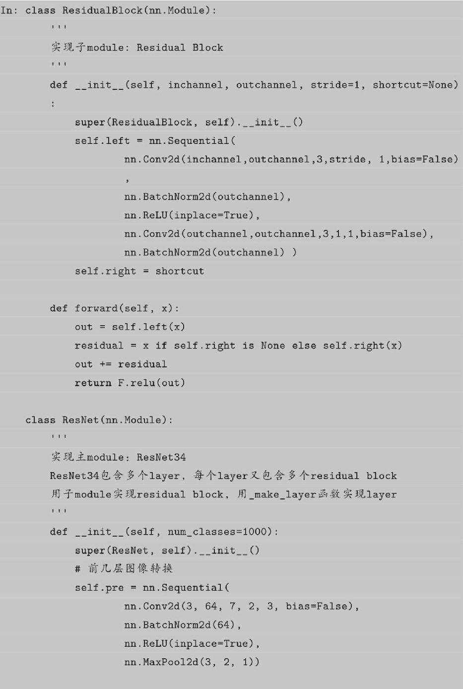
感兴趣的读者可以尝试实现Google的Inception网络结构或ResNet的其他变体，看看如何能够简洁明了地实现它，实现代码尽量控制在80行以内（本例去掉空行和注释总共不超过50行）。另外，与PyTorch配套的图像工具包torchvision已经实现了深度学习中大多数经典的模型，其中就包括ResNet34，读者可以通过下面两行代码使用：
本例中ResNet34的实现参考了torchvision中的实现并做了简化，读者可以阅读相应的源码，比较这里的实现和torchvision中的不同。
通过本章的学习，读者可以掌握PyTorch中神经网络工具箱中大部分类和函数的用法。关于这部分的更多内容，读者可以参阅官方文档，文档中有更多详细的说明。
[1]http://pytorch.org/docs/nn.html
[2]https://github.com/vdumoulin/conv_arithmetic/blob/master/README.md
[3]http://pytorch.org/docs/nn.html#non-linear-activations
[4]http://colah.github.io/posts/2015-08-Understanding-LSTMs/
[5]http://pytorch.org/docs/nn.html#loss-functions
[6]https://discuss.pytorch.org/search?q=nn.functional
[7]He K,Zhang X,Ren S,et al.Deep residual learning for image recognition[C]//Proceedings of the IEEE Conference on Computer Vision and Pattern Recognition.2016:770-778.
5 PyTorch中常用的工具
在训练神经网络的过程中需要用到很多工具，其中最重要的三部分是数据、可视化和GPU加速。本章主要介绍PyTorch在这几方面常用的工具，合理使用这些工具能极大地提高编码效率。
5.1 数据处理
在解决深度学习问题的过程中，往往需要花费大量的精力去处理数据，包括图像、文本、语音或其他二进制数据等。数据的处理对训练神经网络来说十分重要，良好的数据处理不仅会加速模型训练，也会提高模型效果。考虑到这一点，PyTorch提供了几个高效便捷的工具，以便使用者进行数据处理或增强等操作，同时可通过并行化加速数据加载。
数据加载
在 PyTorch 中，数据加载可通过自定义的数据集对象实现。数据集对象被抽象为Dataset类，实现自定义的数据集需要继承Dataset，并实现两个Python魔法方法。
•getitem：返回一条数据或一个样本。obj[index]等价于obj.getitem（index）。
•len：返回样本的数量。len（obj）等价于obj.len（）。
这里我们以Kaggle经典挑战赛“Dogs vs.Cat”的数据为例，详细讲解如何处理数据。“Dogs vs.Cats”是一个分类问题，判断一张图片是狗还是猫，其所有图片都存放在一个文件夹下，根据文件名的前缀判断是狗还是猫。

通过上面的代码，我们学习了如何自定义自己的数据集，并可以依次获取。但这里返回的数据不适合实际使用，因其具有如下两方面问题：
• 返回样本的形状不一，每张图片的大小不一样，这对于需要取batch训练的神经网络来说很不友好。
• 返回样本的数值较大，未归一化至[-1，1]。
针对上述问题，PyTorch提供了torchvision[1]。它是一个视觉工具包，提供了很多视觉图像处理的工具，其中transforms模块提供了对PIL Image对象和Tensor对象的常用操作。
对PIL Image的常见操作如下。
• Scale：调整图片尺寸，长宽比保持不变。
• CenterCrop、RandomCrop、RandomSizedCrop：裁剪图片。
• Pad：填充。
• ToTensor：将PIL Image对象转成Tensor，会自动将[0，255]归一化至[0，1]。
对Tensor的常见操作如下。
• Normalize：标准化，即减均值，除以标准差。
• ToPILImage：将Tensor转为PIL Image对象。
如果要对图片进行多个操作，可通过Compose将这些操作拼接起来，类似于 nn.Seq-uential。注意，这些操作定义后是以对象的形式存在，真正使用时需调用它的 call方法，类似于nn.Module。例如，要将图片调整为224×224，首先应构建操作trans=Scale
（（224，224）），然后调用trans（img）。下面我们就用transforms的这些操作来优化上面实现的dataset。
除了上述操作之外，transforms还可以通过Lambda封装自定义的转换策略。例如，想对 PIL Image 进行随机旋转，则可写成trans=T.Lambda（lambda img：img.rotate（random （）*360））。
torchvision 已经预先实现了常用的 Dataset，包括前面使用过的 CIFAR-10，以及ImageNet、COCO、MNIST、LSUN等数据集，可通过调用torchvision.datasets下相应对象来调用相关数据集，具体使用方法请参看官方文档[2]。本节介绍一个读者会经常使用到的Dataset——ImageFolder，它的实现和上述DogCat很相似。ImageFolder假设所有的文件按文件夹保存，每个文件夹下存储同一个类别的图片，文件夹名为类名，其构造函数如下：
它主要有以下四个参数。
• root：在root指定的路径下寻找图片。
• transform：对PIL Image进行转换操作，transform的输入是使用loader读取图片的返回对象。
• target transform：对label的转换。
• loader：指定加载图片的函数，默认操作是读取为PIL Image对象。
label是按照文件夹名顺序排序后存成字典的，即{类名：类序号（从0开始）}，一般来说最好直接将文件夹命名为从0开始的数字，这样会和ImageFolder实际的label一致，如果不是这种命名规范，建议通过self.class to idx属性了解label和文件夹名的映射关系。

图5-1 程序输出的图片1
图5-2 程序输出的图片2
Dataset只负责数据的抽象，一次调用getitem只返回一个样本。前面提到过，在训练神经网络时，是对一个batch的数据进行操作，同时还需要对数据进行shuffle和并行加速等。对此，PyTorch提供了DataLoader帮助我们实现这些功能。
DataLoader的函数定义如下。
• dataset：加载的数据集（Dataset对象）。
• batch_size：batch size（批大小）。
• shuffle：：是否将数据打乱。
• sampler：样本抽样，后续会详细介绍。
• num_workers：使用多进程加载的进程数，0代表不使用多进程。
• collate_fn：如何将多个样本数据拼接成一个batch，一般使用默认的拼接方式即可。
• pin_memory：是否将数据保存在pin memory区，pin memory中的数据转到GPU会快一些。
• drop_last：dataset中的数据个数可能不是batch_size的整数倍，drop_last为True会将多出来不足一个batch的数据丢弃。
dataloader是一个可迭代的对象，我们可以像使用迭代器一样使用它，例如：
或

在数据处理中，有时会出现某个样本无法读取等问题，例如某张图片损坏。这时在getitem函数中将出现异常，此时最好的解决方案即是将出错的样本剔除。如果遇到这种情况实在无法处理，则可以返回None对象，然后在Dataloader中实现自定义的collate fn，将空对象过滤掉。但要注意，在这种情况下dataloader返回的一个batch的样本数目会少于batch_size。
我们来看上述batch_size的大小。其中第3个batch的batch_size为1，这是因为有一张图片损坏，导致其无法正常返回。而最后一个batch的batch_size也为1，这是因为共有9张（包括损坏的文件）图片，无法整除2（batch_size），因此最后一个batch的数据会少于batch_szie，可通过指定drop last=True丢弃最后一个样本数目不足batch_size的batch。
对样本损坏或数据集加载异常等情况，还可以通过其他方式解决。例如遇到异常情况，就随机取一张图片代替：
相比较丢弃异常图片而言，这种做法会更好一些，因为它能保证每个batch样本的数目仍是batch_size。但在大多数情况下，最好的方式还是对数据进行彻底清洗。
DataLoader里并没有太多的魔法方法，它封装了Python的标准库multiprocessing，使其能够实现多进程加速。在Dataset和DataLoader的使用方面有以下建议。
（1）高负载的操作放在getitem中，如加载图片等。
（2）dataset中应尽量只包含只读对象，避免修改任何可变对象。
第一点是因为多进程会并行地调用getitem函数，将负载高的放在 getitem函数中能够实现并行加速。第二点是因为dataloader使用多进程加载，如果在Dataset中使用了可变对象，可能会有意想不到的冲突。在多线程/多进程中，修改一个可变对象需要加锁，但是dataloader的设计使得其很难加锁（在实际使用中也应尽量避免锁的存在），因此最好避免在dataset中修改可变对象。下面就是一个不好的例子，在多进程处理中self.num可能与预期不符，这种问题不会报错，因此难以发现。如果一定要修改可变对象，建议使用Python标准库Queue中的相关数据结构。
使用Python multiprocessing库的另一个问题是，在使用多进程时，如果主程序异常终止（比如用“Ctrl+C”快捷键强行退出），相应的数据加载进程可能无法正常退出。这时你可能会发现程序已经退出了，但GPU显存和内存依旧被占用着，通过top、ps aux依旧能够看到已经退出的程序，这时就需要手动强行终止进程。建议使用如下命令：
• ps x：获取当前用户的所有进程。
• grep ＜cmdline＞：找到已经停止的 PyTorch 程序的进程，例如你是通过 python train.py启动的，那就需要写grep
′python train.py′。
• awk ′{print $1}′：获取进程的pid。
• xargs kill：终止进程，根据需要可能要写成xargs kill-9强制终止进程。
在执行这句命令之前，建议先打印确认进程。
PyTorch中还单独提供了一个sampler模块，用来对数据进行采样。常用的有随机采样器RandomSampler，当dataloader的shuffle参数为True时，系统会自动调用这个采样器，实现打乱数据。默认的采样器是SequentialSampler，它会按顺序一个一个进行采样。这里介绍另外一个很有用的采样方法：WeightedRandomSampler，它会根据每个样本的权重选取数据，在样本比例不均衡的问题中，可用它进行重采样。
构建WeightedRandomSampler时需提供两个参数：每个样本的权重weights、共选取的样本总数num samples，以及一个可选参数replacement。权重越大的样本被选中的概率越大，待选取的样本数目一般小于全部的样本数目。replacement用于指定是否可以重复选取某一个样本，默认为True，即允许在一个epoch中重复采样某一个数据。如果设为False，则当某一类样本被全部选取完，但其样本数目仍未达到num_samples时，sampler将不会再从该类中选择数据，此时可能导致weights参数失效。下面举例说明。

可见猫狗样本比例约为1：2，另外一共只有8个样本，却返回了9个，说明有样本被重复返回的，这就是replacement参数的作用，下面我们将replacement设为False。
在这种情况下，num_samples等于dataset的样本总数，为了不重复选取，sampler会将每个样本都返回，这样就失去了weight参数的意义。
从上面的例子可见sampler在样本采样中的作用：如果指定了sampler，shuffle将不再生效，并且sampler.num_samples会覆盖dataset的实际大小，即一个epoch返回的图片总数取决于sampler.num samples。
5.2 计算机视觉工具包：torchvision
计算机视觉是深度学习中最重要的一类应用，为了方便研究者使用，PyTorch团队专门开发了一个视觉工具包torchvision，这个包独立于PyTorch，需通过pip install torchvision安装。在之前的例子中我们已经使用过它的部分功能，这里再做一个系统性的介绍。torchvision主要包含以下三部分。
• models：提供深度学习中各种经典网络的网络结构及预训练好的模型，包括 Alex-Net、VGG系列、ResNet系列、Inception系列等。
• datasets：提供常用的数据集加载，设计上都是继承torch.utils.data.Dataset，主要包括MNIST、CIFAR10/100、ImageNet、COCO等。
• transforms：提供常用的数据预处理操作，主要包括对Tensor及PIL Image对象的操作。
Transforms中涵盖了大部分对Tensor和PIL Image的常用处理，这些已在上文提到，本节就不再详细介绍。需要注意的是转换分为两步，第一步：构建转换操作，例如transf
=transforms.Normalize （mean=x，std=y）；第二步：执行转换操作，例如output=transf
（input）。另外，还可将多个处理操作用Compose拼接起来，构成一个处理转换流程。
图5-3 程序输出：随机噪声
torchvision还提供了两个常用的函数。一个是make grid，它能将多张图片拼接在一个网格中；另一个是save img，它能将Tensor保存成图片。
图5-4 程序输出：经过数据增强处理的MNIST数据

图5-5 程序输出：将图5-4保存成png文件
5.3 可视化工具
在训练神经网络时，我们希望能更直观地了解训练情况，包括损失曲线、输入图片、输出图片、卷积核的参数分布等信息。这些信息能帮助我们更好地监督网络的训练过程，并为参数优化提供方向和依据。最简单的办法就是打印输出，但其只能打印数值信息，不够直观，同时无法查看分布、图片、声音等。本节我们将介绍两个深度学习中常用的可视化工具：Tensorboard和visdom。
5.3.1 Tensorboard
最初，Tensorboard是作为TensorFlow的可视化工具迅速流行开来的。作为和Ten-sorFlow深度集成的工具，Tensorboard能够展现TensorFlow网络计算图，绘制图像生成的定量指标图及附加数据，界面如图5-6所示。同时Tensorboard也是一个相对独立的工具，只要用户保存的数据遵循相应的格式，Tensorboard就能读取这些数据并进行可视化。这里我们将主要介绍如何在PyTorch中使用tensorboard_logger[3]进行训练损失的可视化。Tensorboard_logger是TeamHG-Memex开发的一款轻量级工具，它将Tensorboard的功能抽取出来，使非TensorFlow用户也能使用它进行可视化，但其支持的功能有限。
图5-6 Tensorboard界面
tensorboard_logger的安装主要分为以下两步。
• 安装TensorFlow：如果计算机中已经安装完TensorFlow可以跳过这一步，如果计算机中尚未安装，建议安装CPU-Only的版本，具体安装教程参见TensorFlow官网[4]，或使用pip直接安装，教育网用户可通过清华的开源镜像提高速度[5]。
• 安装tensorboard_logger：可通过pip install tensorboard logger命令直接安装。tensorboard_logger的使用非常简单。首先用如下命令启动Tensorboard：
下面举例说明tensorboard_logger的使用。

打开浏览器输入http：//localhost：6006 （其中6006应改成你的Tensorboard所绑定的端口），即可看到如图5-7所示的结果。
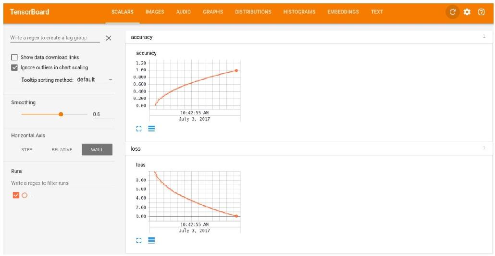
图5-7 Tensorboard可视化结果
左侧的Horizontal Axis下有如下三个选项。
• Step：根据步长来记录，log_value是指如果有步长，则将其作为x轴坐标描点画线。
• Relative：用前后相对顺序描点画线，可认为logger自己维护了一个step属性，每调用一次log_value就自动加1。
• Wall：按时间排序描点画线。
左侧的Smoothing条可以左右拖动，用来调节平滑的幅度。单击页面右上角的刷新按钮可立即刷新结果，默认是每30s自动刷新数据。tensorboard_logger的使用十分简单，但它只能统计简单的数值信息，不支持其他功能。
除了tensorboard_logger，还有专门针对PyTorch开发的TensorboardX[6]，它封装了更多的Tensorboard接口，支持记录标量、图片、直方图、声音、文本、计算图和em-bedding等信息，几乎包括和TensorFlow的Tensorboard完全一样的功能，使用接口甚至比TensorFlow的Tensorboard接口还要简单。感兴趣的读者可以自行了解，本节将重点介绍另一个可视化工具visdom。
5.3.2 visdom
visdom[7]是Facebook专门为PyTorch开发的一款可视化工具，开源于2017年3月。visdom十分轻量级，却支持非常丰富的功能，能胜任大多数的科学运算可视化任务，其可视化界面如图5-8所示。

图5-8 visdom界面
visdom可以创造、组织和共享多种数据的可视化，包括数值、图像、文本，甚至是视频，支持PyTorch、Torch及Numpy。用户可通过编程组织可视化空间或通过用户接口为数据打造仪表板，检查实验结果和调试代码。
visdom中有以下两个重要概念。
• env：环境。不同环境的可视化结果相互隔离，互不影响，在使用时如果不指定env，默认使用main。不同用户、不同程序一般使用不同的env。
• pane：窗格。窗格可用于可视化图像、数值或打印文本等，其可以拖动、缩放、保存和关闭。一个程序可使用同一个env中的不同pane，每个pane可视化或记录某一信息。
如图5-9所示，当前env共有两个pane，一个用于打印log，另一个用于记录损失函数的变化。单击“clear”按钮可以清空当前env的所有pane，单击“save”按钮可将当前env保存成json文件，保存路径位于～/.visdom/目录下。修改env的名字后单击fork，可将当前env另存为新文件。
图5-9 visdom_env
通过命令pip install visdom即可完成visdom的安装。安装完成后，需通过python-m visdom.server命令启动visdom服务，或通过nohup python-m visdom.server&命令将服务放至后台运行。visdom服务是一个Web Server服务，默认绑定8097端口，客户端与服务器间通过tornado进行非阻塞交互。
在使用visdom时有两点需要注意的地方。
• 需手动指定保存env，可在Web界面单击“save”按钮或在程序中调用save方法，否则visdom服务重启后，env等信息会丢失。
• 客户端与服务器之间的交互采用tornado异步框架，可视化操作不会阻塞当前程序，网络异常也不会导致程序退出。
visdom以Plotly为基础，支持丰富的可视化操作，下面举例说明一些最常用的操作。
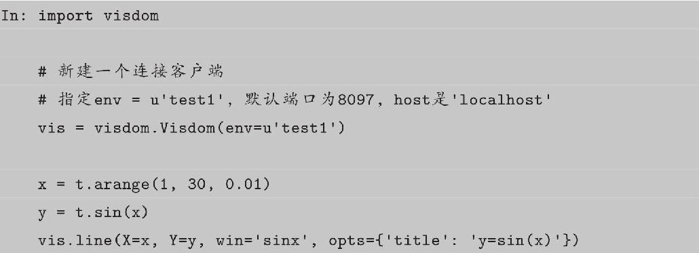
输出的结果如图5-10所示。
图5-10 visdom的输出
下面我们逐一分析这几行代码。
• vis=visdom.Visdom（env=u′test1′），用于构建一个客户端，客户端除指定env外，还可以指定host、port等参数。
• vis作为一个客户端对象，可以使用如下常见的画图函数。
-line：类似MATLAB中的plot操作，用于记录某些标量的变化，例如损失、准确率等。
-image：可视化图片，可以是输入的图片，也可以是GAN生成的图片，还可以是卷积核的信息。
-text：用于记录日志等文字信息，支持HTML格式。
-histgram：可视化分布，主要是查看数据、参数的分布。
-scatter：绘制散点图。
-bar：绘制柱状图。
-pie：绘制饼状图。
-更多操作可参考visdom的GitHub主页。
本节主要介绍深度学习中常见的line、image和text的操作。
visdom同时支持PyTorch的tensor和numpy的ndarray两种数据结构，但不支持Python的int、float等类型，因此每次传入时都需要先将数据转成ndarray或tensor。上述操作的参数一般不同，但有两个参数是绝大多数操作都具备的。
• win：用于指定pane的名字，如果不指定，visdom将自动分配一个新的pane。如果两次操作指定的win名字一样，新的操作将覆盖当前pane的内容，因此建议每次操作都重新指定win。
• opts：用来可视化配置，接收一个字典，常见的option包括title、xlabel、ylabel、width等，主要用于设置pane的显示格式。
之前提到过，每次操作都会覆盖之前的数值，但我们在训练网络的过程中往往需要不断更新数值，如损失值等，这时就需要指定参数update=′append′来避免覆盖之前的数值。除了使用update参数，还可以使用vis.updateTrace方法更新图，updateTrace不仅能在指定pane上新增一个和已有数据相互独立的Trace，还能像update=′append′那样在同一条trace上追加数据。
打开浏览器，输入http：//localhost：8097，可以看到如图5-11所示的结果。
图5-11 append和updateTrace可视化效果
image的画图功能可分为如下两类。
• image接收一个二维或三维向量，H×W 或3×H×W，前者是黑白图像，后者是彩色图像。
• images接收一个四维向量N×C×H×W，C 可以是1或3，分别代表黑白和彩色图像。可实现类似torchvision中make_grid的功能，将多张图片拼接在一起。images也可以接收一个二维或三维的向量，此时它所实现的功能与image一致。
其中images的可视化输出如图5-12所示。
vis.text用于可视化文本，图5-13是visdom的text的可视化输出，它支持所有的html标签，同时也遵循着html的语法标准。例如，换行需使用＜br＞标签，\r\n无法实现换行。下面举例说明。
图5-12 images可视化输出
图5-13 text的可视化输出
5.4 使用GPU加速：cuda
与对GPU完全透明的Theano相比，在PyTorch中使用GPU会复杂一些，但这也意味着对GPU资源更加灵活高效的控制。这部分内容在前面介绍Tensor、Module时大多都提到过，本节将对其做一个总结，并介绍相关应用。
在PyTorch中以下数据结构分为CPU和GPU两个版本。
• Tensor
• Variable（包括Parameter）
• nn.Module（包括常用的layer、loss function，以及容器Sequential等）
它们都带有一个.cuda方法，调用此方法即可将其转为对应的 GPU 对象。注意，tensor.cuda和variable.cuda都会返回一个新对象，这个新对象的数据已转移至GPU，而之前的tensor/variable的数据还在原来的设备上（CPU）。module.cuda会将所有的数据都迁移至GPU，并返回自己。所以module=module.cuda
（）和module.cuda （）的效果。
Variable和nn.Module在GPU与CPU之间的转换，本质上还是利用了Tensor在GPU和CPU之间的转换。Variable.cuda操作实际上是将variable.data转移至指定的GPU。而nn.Module的cuda方法是将nn.Module下的所有parameter（包括子module的parameter）都转移至GPU，而Parameter本质上也是Variable。
下面将举例说明，运行这部分代码需要读者有两块GPU设备。
注意
：为什么将数据转移至GPU的方法叫做.cuda而不是.gpu呢？这是因为GPU的编程接口采用CUDA，而目前并不是所有的GPU都支持CUDA，只有部分NVIDIA的GPU才支持。PyTorch未来可能会支持AMD的GPU，而AMD GPU的编程接口采用OpenCL，因此PyTorch还预留着.cl方法，用于以后支持AMD等的GPU。
上面最后一部分中，两个Parameter所占用的内存空间都非常大，大概是8GB，如果将这两个Parameter同时放在一块GPU上几乎会将显存占满，无法再进行任何其他运算。此时可通过这种方式将不同的计算分布到不同的GPU中。
关于使用GPU的一些建议：
• GPU运算很快，但运算量小时，并不能体现出它的优势，因此一些简单的操作可直接利用CPU完成。
• 数据在CPU和GPU之间的传递会比较耗时，应当尽量避免。
• 在进行低精度的计算时，可以考虑HalfTensor，相比FloatTensor能节省一半的显存，但需千万注意数值溢出的情况。
注意
：大部分的损失函数也都属于nn.Module，但在使用GPU时，很多时候我们都忘记使用它的.cuda方法，在大多数情况下不会报错，因为损失函数本身没有可学习的参数（learnable parameters）。但在某些情况下会出现问题，为了保险起见同时也为了代码更规范，应记得调用criterion.cuda。下面我们举例说明。
除了调用对象的.cuda方法外，还可以使用torch.cuda.device指定默认使用哪一块GPU，或使用torch.set default tensor type使程序默认使用GPU，不需要手动调用cuda。
如果服务器具有多个GPU，tensor.cuda
（）方法会将tensor保存到第一块GPU上，等价于tensor.cuda（0）。此时如果想使用第二块GPU，需手动指定tensor.cuda（1），而这需要修改大量代码很烦琐。这里有两种替代方法：
• 一种方法是先调用t.cuda.set device （1）指定使用第二块GPU，后续的.cuda（）都无须更改，切换GPU只需修改这一行代码。
• 另一种方法是设置环境变量CUDA VISIBLE DEVICES，例如当 export CUDA VISI-BLE DEVICE=1时（下标是从0开始，1代表第二块GPU），只使用第二块物理GPU，但在程序中这块GPU会被看成是第一块逻辑GPU，因此此时调用tensor.cuda
（）会将Tensor转移至第二块物理GPU。CUDA VISIBLE DEVICES还可以指定多个GPU，如export CUDA VISIBLE DEVICES=0，2，3，那么第一、三、四块物理GPU会被映射成第一、二、三块逻辑GPU，tensor.cuda
（1）会将Tensor转移到第三块物理GPU上。
设置CUDA VISIBLE DEVICES有两种方法，一种是在命令行中CUDA VISIBLE DEVICES=0，1 python main.py，一种是在程序中import os；os.environ[″CUDA VISIBLE DEVICES″]=″2″。如果使用IPython或者Jupyter notebook，还可以使用%env CUDA VISIBLE DEVICES=1，2设置环境变量。
从PyTorch 0.2版本中，PyTorch新增分布式GPU支持。注意分布式和并行的区别：分布式是指有多个GPU在多台服务器上，而并行一般指的是一台服务器上的多个GPU。分布式涉及了服务器之间的通信，因此比较复杂，PyTorch封装了相应的接口，可以用几句简单的代码实现分布式训练。分布式对普通用户来说比较遥远，因为搭建一个分布式集群的代价很大，使用也比较复杂。相比之下，一机多卡更现实。对于分布式训练，这里不做太多的介绍，感兴趣的读者可参考文档[8]。
5.5 持久化
在PyTorch中，以下对象可以持久化到硬盘，并能通过相应的方法加载到内存中。
• Tensor
• Variable
• nn.Module
• Optimizer
本质上，上述这些信息最终都是保存成Tensor。Tensor的保存和加载十分简单，使用t.save和t.load即可完成相应的功能。在save/load时可指定使用的pickle模块，在load时还可将GPU tensor映射到CPU或其他GPU上。
我们可以通过t.save（obj，file name）等方法保存任意可序列化的对象，然后通过obj=t.load（file name）方法加载保存的数据。对Module和Optimizer对象，这里建议保存对应的state dict，而不是直接保存整个Module/Optimizer对象。Optimizer对象保存的是参数及动量信息，通过加载之前的动量信息，能够有效地减少模型震荡，下面举例说明。
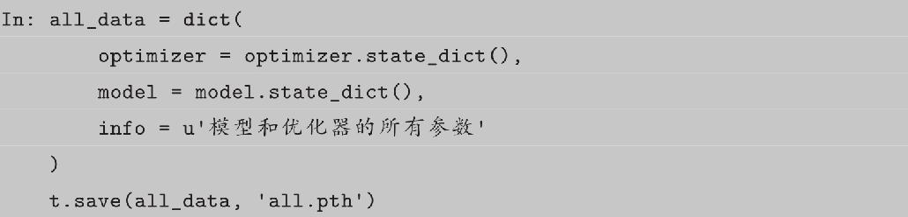
本章介绍了一些工具模块，这些工具有些位于PyTorch中，有些独立于PyTorch的第三方模块。这些模块主要涉及数据加载、可视化和GPU加速相关的内容，合理地使用这些模块能极大地提升我们的编程效率。
[1]https://github.com/pytorch/vision/
[2]http://pytorch.org/docs/master/torchvision/datasets.html
[3]https://github.com/TeamHG-Memex/tensorboard_logger
[4]https://www.tensorflow.org/install/
[5]https://mirrors.tuna.tsinghua.edu.cn/help/tensorflow/
[6]https://github.com/lanpa/tensorboard-pytorch
[7]https://github.com/facebookresearch/visdom
[8]http://pytorch.org/docs/0.2.0/distributed.html
6 PyTorch实战指南
通过前面几章的学习，我们已经掌握了PyTorch中大部分的基础知识，本章将结合之前讲的内容，带领读者从头实现一个完整的深度学习项目。本章的重点不在于如何使用PyTorch的接口，而在于合理地设计程序的结构，使得程序更具可读性、更易用。
6.1 编程实战：猫和狗二分类
在学习某个深度学习框架时，掌握其基本知识和接口固然重要，但如何合理地组织代码，使代码具有良好的可读性和可扩展性也必很关键。本章将不再深入讲解过多知识性的东西，更多是传授一些经验，这些内容可能有些争议，因其受笔者个人喜好和coding风格影响较大，读者可以将这部分当成是一种参考或提议，而不是作为必须遵循的准则。归根到底，都是希望读者能以一种更合理的方式组织自己的程序。
在做深度学习实验或项目时，为了得到最优的模型结果，中间往往需要很多次尝试和修改。合理的文件组织结构，以及一些小技巧可以极大地提高代码的易读易用性。根据笔者的个人经验，在从事大多数深度学习研究时，程序都需要实现以下几个功能。
• 模型定义
• 数据处理和加载
• 训练模型（Train&Validate）
• 训练过程的可视化
• 测试（Test/Inference）
另外，程序还应该满足以下几个要求：模型需具有高度可配置性，便于修改参数、修改模型和反复实验；代码应具有良好的组织结构，使人一目了然；代码应具有良好的说明，使其他人能够理解。
在之前的章节中，我们已经讲解了PyTorch中的绝大部分内容。本章我们将应用这些内容，并结合实际例子讲解如何用PyTorch完成Kaggle上的经典比赛：Dogs vs.Cats[1]。本章所有示例程序均在本书的配套代码chapter6/best practice中。
6.1.1 比赛介绍
Dogs vs.Cats是一个传统的二分类问题，其训练集包含25000张图片，部分图片如图6-1所示，这些图片均放置在同一文件夹下，命名格式为＜category＞.＜num＞.jpg，例如cat.10000.jpg和dog.100.jpg，测试集包含12500张图片，命名为＜num＞.jpg，例如1000.jpg。参赛者需根据训练集的图片训练模型，并在测试集上进行预测，输出它是狗的概率。最后提交的csv文件如下，第一列是图片的＜num＞，第二列是图片为狗的概率。
图6-1 猫和狗的数据
6.1.2 文件组织架构
前面提到过程序的主要功能，其中最重要的三个功能如下。
• 模型定义
• 数据加载
• 训练和测试
首先来看程序文件的组织结构：
其中各个文件的主要内容和作用如下。
• checkpoints/：用于保存训练好的模型，可使程序在异常退出后仍能重新载入模型，恢复训练。
• data/：数据相关操作，包括数据预处理、dataset实现等。
• models/：模型定义，可以有多个模型，例如上面的AlexNet和ResNet34，一个模型对应一个文件。
• utils/：可能用到的工具函数，本次实验中主要封装了可视化工具。
• config.py：配置文件，所有可配置的变量都集中在此，并提供默认值。
• main.py：主文件，训练和测试程序的入口，可通过不同的命令来指定不同的操作和参数。
• requirements.txt：程序依赖的第三方库。
• README.md：提供程序的必要说明。
6.1.3 关于init.py
可以看到，几乎每个文件夹下都有 init.py，一个目录如果包含了init.__py文件，那么它就变成了一个包（package）。init.py可以为空，也可以定义包的属性和方法，但其必须存在，其他程序才能从这个目录中导入相应的模块或函数。例如在data/文件夹下有 init.py，则在main.py中就可以from data.dataset import DogCat。如果在 init.py中写入from.dataset import DogCat，则在main.py中就可以直接写为：from data import DogCat，或者import data；dataset=data.DogCat，比写为from data.dataset import DogCat更便捷。
6.1.4 数据加载
数据的相关处理主要保存在data/dataset.py中。关于数据加载的相关操作，在第5章中我们已经提到过，其基本原理就是使用Dataset封装数据集，再使用Dataloader实现数据并行加载。Kaggle提供的数据包括训练集和测试集，而我们在实际使用中，还需专门从训练集中取出一部分作为验证集。对于这三类数据集，其相应操作也不太一样，而如果专门写三个Dataset，则稍显复杂和冗余，因此这里通过加一些判断来区分。我们希望对训练集做一些数据增强处理，如随机裁剪、随机翻转、加噪声等，而验证集和测试集则不需要。下面看dataset.py的代码：
有关数据集使用的注意事项在第 5 章中已经提到，将文件读取等费时操作放在getitem函数中，利用多进程加速。一次性将所有图片都读进内存，不仅费时也会占用较大内存，而且不易进行数据增强等操作。我们将训练集中的30%作为验证集，可以用来检查模型的训练效果，避免过拟合。在使用时，我们可以通过dataloader加载数据。
6.1.5 模型定义
模型的定义主要保存在models/目录下，其中BasicModule是对nn.Module的简易封装，提供快速加载和保存模型的接口。
在实际使用中，直接调用model.save（）及model.load（opt.load path）即可。
其他自定义模型一般继承BasicModule，然后实现自己的模型。其中AlexNet.py实现了AlexNet，ResNet.py实现了ResNet34。在models/init py中，代码如下：
这样在主函数中就可以写成：
其中最后一种写法最关键，这意味着我们可以通过字符串直接指定使用的模型，而不必使用判断语句，也不必在每次新增加模型后都修改代码。新增模型后只需要在models/init.py中加上from.new_module import new_module即可。
其他关于模型定义的注意事项，在第5章中已详细讲解，本节就不再赘述，总结起来就是：
• 尽量使用nn.Sequential。
• 将经常使用的结构封装成子module。
• 将重复且有规律性的结构用函数生成。
6.1.6 工具函数
在项目中，我们可能会用到一些helper方法，这些方法可以统一放在utils/文件夹下，需要使用时再引入。本例主要封装了可视化工具visdom的一些操作，其代码如下。本次实验中只会用到plot方法，用来统计损失信息。

6.1.7 配置文件
在模型定义、数据处理和训练等过程中有很多变量，这些变量应提供默认值，并统一放置在配置文件中，这样在后期调试、修改代码或迁移程序时会比较方便，在这里我们将所有可配置项放在config.py中。
可配置的参数主要包括：
• 数据集参数（文件路径、batch_size等）。
• 训练参数（学习率、训练epoch等）。
• 模型参数。
在程序中可以这样使用配置参数：
这些都只是默认参数，在这里还提供了更新函数，根据字典更新配置参数。
我们在实际使用时不需要每次都修改config.py，只需要通过命令行传入所需参数，覆盖默认配置即可。
例如：
6.1.8 main.py
在讲解主程序main.py之前，我们先来了解2017年3月谷歌开源的一个命令行工具fire[2]，通过pip install fire即可安装。下面介绍fire的基础用法，假设example.py文件内容如下：
那么我们可以使用：
可见，只要在程序中运行fire.Fire（），即可使用命令行参数 python file ＜func-tion＞ [args，]
{—kwargs，}。fire还支持更多的高级功能，具体请参考官方指南[3]。
在主程序main.py中主要包含四个函数，其中三个需要命令行执行，main.py的代码组织结构如下：
根据fire的使用方法，可以通过python main.py ＜function＞—args=xx的方式执行训练或者测试。
训练
训练的主要步骤如下：
• 定义网络
• 定义数据
• 定义损失函数和优化器
• 计算重要指标
• 开始训练
-训练网络
-可视化各种指标
-计算在验证集上的指标
训练函数的代码如下：
这里用到了PyTorchNet[4]里的一个工具：meter。meter提供了一些轻量级的工具，用于帮助用户快速统计训练过程中的一些指标。AverageValueMeter能够计算所有数的平均值和标准差，可以用来统计一个epoch中损失的平均值。confusionmeter用来统计分类问题中的分类情况，是一个比准确率更详细的统计指标。以表6-1所示为例，共有50张狗的图片，其中有35张被正确分类成了狗，还有15张被误判成猫；共有100张猫的图片，其中有91张被正确判为了猫，剩下9张被误判成狗。相较准确率等统计信息，混淆矩阵更能体现分类的结果，尤其是在样本比例不均衡的情况下。
表6-1 混淆矩阵
PyTorchNet从TorchNet[5]迁移而来，提供了很多有用的工具，但其目前的开发和文档都还不是很完善，本书不做过多讲解。
验证
验证相对来说比较简单，但要注意需将模型置于验证模式（model.eval（）），验证完成后还需要将其置回为训练模式（model.train（）），这两句代码会影响BatchNorm和Dropout等层的运行模式。验证模型准确率的代码如下。
测试
测试时，需要计算每个样本属于狗的概率，并将结果保存成csv文件。测试的代码与验证比较相似，但需要自己加载模型和数据。
帮助函数
为了方便他人使用，程序中还应提供一个帮助函数，用于说明函数是如何使用的。程序的命令行接口中有众多参数，如果手动用字符串表示不仅复杂，后期修改config文件时还需要修改对应的帮助信息，十分不便。这里使用了Python标准库中的inspect方法，可以自动获取config的源代码。help的代码如下：
当用户执行python main.py help时，会打印如下帮助信息：
6.1.9 使用
正如help函数的打印信息所述，可以通过命令行参数指定变量名。下面是三个使用例子，fire会将包含“-”的命令行参数自动转成下画线“”，也会将非数字的值转成字符串，所以
—train-data-root=data/train和—train data root=′data/train′是等价的。
6.1.10 争议
以上的程序设计规范带有笔者强烈的个人喜好，并不能作为一个标准，而是作为一个提议和一种参考。上述设计在很多地方还有待商榷，例如训练过程中是否应该封装成一个trainer对象，或者直接封装到BaiscModule的train方法之中；对命令行参数的处理也有不少值得讨论之处。因此，不要将本章中的观点作为一个必须遵守的规范，而应该看作是一个参考。
本章中的设计可能会引起不少争议，其中比较值得商榷的部分主要有以下两个方面。
• 命令行参数的设置。目前大多数程序都是使用Python标准库中的argparse处理命令行参数的，也有些使用轻量级的click。这种处理对命令行的支持更完备，但根据笔者的经验，这种做法不够直观，并且代码量相对较多。例如argparse，每次增加一个命令行参数，都必须写如下代码：
在读者眼中，这种实现方式远不如一个专门的config.py来得直观和易用。尤其是对于使用Jupyter notebook或IPython等交互式调试的用户来说，argparse较难使用。
• 模型训练。有不少人喜欢将模型的训练过程集成于模型的定义之中，代码结构如下所示：
或是专门设计一个Trainer对象，大概结构如下：

还有一些人喜欢模仿Keras和Scikit-learn的设计，设计一个fit接口。对读者来说，这些处理方式很难说哪个更好或更差，找到最适合自己的方法才是最好的。
6.2 PyTorch Debug指南
6.2.1 ipdb介绍
很多初学者用print或log调试程序，这在小规模的程序下很方便。但是更好的调试方法是一边运行一边检查里面的变量和方法。Pdb是一个交互式的调试工具，集成于Python标准库之中，由于其强大的功能，被广泛应用于Python环境中。Pdb能让你根据需求跳转到任意的Python代码断点、查看任意变量、单歩执行代码，甚至还能修改变量的值，而不必重启程序。ipdb是一个增强版的pdb，可通过pip install ipdb安装。ipdb提供了调试模式下的代码自动补全，还具有更好的语法高亮和代码溯源，以及更好的内省功能，更关键的是，它与pdb接口完全兼容。
在本书第2章曾粗略地提到过ipdb的基本使用，本节将继续介绍如何结合PyTorch和ipdb进行调试。首先看一个例子，要使用ipdb，只需在想要进行调试的地方插入ipdb.set trace （），当代码运行到此处时，就会自动进入交互式调试模式。
假设有如下程序：
当程序运行至ipdb.set trace
（），会自动进入debug模式，在该模式中，我们可使用调试命令，如next或缩写n单步执行，也可查看Python变量，或是运行Python代码。如果Python变量名和调试命令冲突，需在变量名前加！，这样ipdb会执行对应的Python命令，而不是调试命令。下面举例说明ipdb的调试，这里重点讲解ipdb的两大功能。
• 查看：在函数调用堆栈中自由跳动，并查看函数的局部变量。
• 修改：修改程序中的变量，并能以此影响程序的运行结果。
关于ipdb的使用还有一些技巧：
• ＜tab＞键能够自动补齐，补齐用法与IPython中的类似。
• j（ump） ＜lineno＞能够跳过中间某些行代码的执行。
• 可以直接在ipdb中修改变量的值。
• h（elp）能够查看调试命令的用法，比如h h可以查看h（elp）命令的用法，h jump能够查看j（ump）命令的用法。
6.2.2 在PyTorch中Debug
PyTorch作为一个动态图框架，与ipdb结合使用能为调试过程带来便捷。对Ten-sorFlow等静态图框架来说，使用Python接口定义计算图，然后使用C++代码执行底层运算，在定义图的时候不进行任何计算，而在计算的时候又无法使用pdb进行调试，因为pdb调试只能调试Python代码，故调试一直是此类静态图框架的一个痛点。与Ten-sorFlow不同，PyTorch可以在执行计算的同时定义计算图，这些计算定义过程是使用Python完成的。虽然底层的计算也是用C/C++完成的，但是我们能够查看Python定义部分的变量值，这就已经足够了。下面我们将举例说明：
• 如何在PyTorch中查看神经网络各个层的输出。
• 如何在PyTorch中分析各个参数的梯度。
• 如何动态修改PyTorch的训练流程。
首先，运行6.2.1节所给的示例程序：
程序运行一段时间后，可通过touch/tmp/debug创建debug标识文件，当程序检测到这个文件的存在时，会自动进入debug模式。

当我们想要进入debug模式，修改程序中某些参数值或者想分析程序时，就可以通过touch/tmp/debug命令创建debug标识文件，此时程序会进入调试模式，调试完成之后删除这个文件并在ipdb调试接口输入c继续运行程序。如果想退出程序，也可以使用这种方法，先创建/tmp/debug文件使程序进入调试模式，然后输入quit在退出debug的同时退出程序。这种退出程序的方法，与使用Ctrl+C的方法相比更安全，因为这能保证数据加载的多进程（multiprocessing）程序也能正确的退出，并释放内存、显存等资源。
PyTorch和ipdb结合能完成很多其他框架所不能完成或很难实现的功能。根据笔者日常使用的总结，主要有以下几个部分。
（1）通过debug暂停程序。当程序进入debug模式之后，将不再执行GPU和CPU运算，但是内存和显存及相应的堆栈空间不会释放。
（2）通过debug分析程序，查看每个层的输出，查看网络的参数情况。通过u（p）、d（own）、s（tep）等命令，能够进入指定的代码，通过n（ext）可以单歩执行，从而看到每一层的运算结果，便于分析网络的数值分布等信息。
（3）作为动态图框架，PyTorch拥有Python动态语言解释执行的优点，我们能够在运行程序时，通过ipdb修改某些变量的值或属性，这些修改能够立即生效。例如可以在训练开始不久根据损失函数调整学习率，不必重启程序。
（4）如果在IPython中通过%run魔法方法运行程序，那么在程序异常退出时，可以使用%debug命令，直接进入debug模式，通过u（p）和d（own）调到报错的地方，查看对应的变量。找出原因后修改相应的代码即可。有时我们的模型训练了好几个小时，却在将要保存模型之前，因为一个小小的拼写错误异常退出。此时，如果修改错误再重新运行程序又要花费好几个小时，太浪费时间。因此最好的方法就是利用%debug进入调试模式，在调试模式中直接运行model.save
（）保存模型。在IPython中，%pdb魔术方法能够使得程序出现问题后，不用手动输入%debug而自动进入debug模式，建议使用。
PyTorch调用CuDNN报错时，报错信息诸如CUDNN STATUS BAD PARAM，从这些报错内容很难得到有用的帮助信息，最好先利用CPU运行代码，此时一般会得到相对友好的报错信息，例如在ipdb中执行model.cpu（）（input.cpu（）），PyTorch底层的TH库会给出相对比较详细的信息。
常见的错误主要有以下几种：
• 类型不匹配问题。例如CrossEntropyLoss的输入target应该是一个LongTensor，而很多人输入FloatTensor。
• 部分数据忘记从CPU转移到GPU。例如，当model存放于GPU时，输入input也需要转移到GPU才能输入到model中。还有可能就是把多个module存放于一个list对象，而在执行model.cuda
（）时，这个list中的对象是不会被转移到CUDA上的，正确的用法是用ModuleList代替。
• Tensor形状不匹配。此类问题一般是输入数据形状不对，或是网络结构设计有问题，一般通过u（p）跳到指定代码，查看输入和模型参数的形状即可得知。
此外，可能还会经常遇到程序正常运行、没有报错，但是模型无法收敛的问题。例如对于二分类问题，交叉熵损失一直徘徊在0.69附近（ln 2），或者是数值出现溢出等问题，此时可以进入debug模式，用单歩执行看看每一层输出的均值和方差，观察从哪一层的输出开始出现数值异常。还要查看每个参数梯度的均值和方差，看看是否出现梯度消失或者梯度爆炸等问题。一般来说，通过在激活函数之前增加BatchNorm层、合理的参数初始化、使用Adam优化器、学习率设为0.001，基本就能确保模型在一定程度收敛。
本章带领读者从头完成了一个Kaggle上的经典竞赛，重点讲解了如何合理地组织安排程序，同时介绍了一些在PyTorch中调试的技巧。
[1]https://www.kaggle.com/c/dogs-vs-cats-redux-kernels-edition
[2]https://github.com/google/python-fire
[3]https://github.com/google/python-fire/blob/master/doc/guide.md
[4]https://github.com/pytorch/tnt
[5]https://github.com/torchnet/torchnet
7 AI插画师：生成对抗网络
生成对抗网络（Generative Adversarial Net，GAN）是近年来深度学习中一个十分热门的方向，卷积网络之父、深度学习元老级人物LeCun Yan就曾说过“GAN is the most interesting idea in the last 10 years in machine learning”。尤其是近两年，GAN的论文呈现井喷的趋势，GitHub[1]上有人收集了各种各样的GAN变种、应用、研究论文等，其中有名称的多达数百篇。作者还统计了GAN论文发表数目随时间变化的趋势，如图7-1所示，足见GAN的火爆程度。本节将简要介绍GAN的基本原理，并带领读者实现一个简单的生成对抗网络，用以生成动漫人物的头像。
图7-1 GAN的论文数目逐月累加图
7.1 GAN的原理简介
GAN的开山之作是被称为“GAN之父”的Ian Goodfellow发表于2014年的经典论文Generative Adversarial Networks[2]，在这篇论文中他提出了生成对抗网络，并设计了第一个GAN实验——手写数字生成。
GAN的产生来自于一个灵机一动的想法：
“What I cannot create，I do not understand.”（那些我所不能创造的，我也没有真正地理解它。）
—Richard Feynman
类似地，如果深度学习不能创造图片，那么它也没有真正地理解图片。当时深度学习已经开始在各类计算机视觉领域中攻城略地，在几乎所有任务中都取得了突破。但是人们一直对神经网络的黑盒模型表示质疑，于是越来越多的人从可视化的角度探索卷积网络所学习的特征和特征间的组合，而GAN则从生成学习角度展示了神经网络的强大能力。GAN解决了非监督学习中的著名问题：
给定一批样本，训练一个系统能够生成类似的新样本 。
生成对抗网络的网络结构如图7-2所示，主要包含以下两个子网络。
• 生成器（generator）：输入一个随机噪声，生成一张图片。
• 判别器（discriminator）：判断输入的图片是真图片还是假图片。
图7-2 生成对抗网络结构图
训练判别器时，需要利用生成器生成的假图片和来自真实世界的真图片；训练生成器时，只用噪声生成假图片。判别器用来评估生成的假图片的质量，促使生成器相应地调整参数。
生成器的目标是尽可能地生成以假乱真的图片，让判别器以为这是真的图片；判别器的目标是将生成器生成的图片和真实世界的图片区分开。可以看出这二者的目标相反，在训练过程中互相对抗，这也是它被称为生成对抗网络的原因。
上面的描述可能有点抽象，让我们用收藏齐白石作品（齐白石作品如图7-3所示）的书画收藏家和假画贩子的例子来说明。假画贩子相当于是生成器，他们希望能够模仿大师真迹伪造出以假乱真的假画，骗过收藏家，从而卖出高价；书画收藏家则希望将赝品和真迹区分开，让真迹流传于世，销毁赝品。这里假画贩子和收藏家所交易的画，主要是齐白石画的虾。齐白石画虾可以说是画坛一绝，历来为世人所追捧。
图7-3 齐白石画虾图真迹
在这个例子中，一开始假画贩子和书画收藏家都是新手，他们对真迹和赝品的概念都很模糊。假画贩子仿造出来的假画几乎都是随机涂鸦，而书画收藏家的鉴定能力很差，有不少赝品被他当成真迹，也有许多真迹被当成赝品。
首先，书画收藏家收集了一大堆市面上的赝品和齐白石大师的真迹，仔细研究对比，初步学习了画中虾的结构，明白画中的生物形状弯曲，并且有一对类似钳子的“螯足”，对于不符合这个条件的假画全部过滤掉。当收藏家用这个标准到市场上进行鉴定时，假画基本无法骗过收藏家，假画贩子损失惨重。但是假画贩子自己仿造的赝品中，还是有一些蒙骗过关，这些蒙骗过关的赝品中都有弯曲的形状，并且有一对类似钳子的“螯足”。于是假画贩子开始修改仿造的手法，在仿造的作品中加入弯曲的形状和一对类似钳子的“螯足”。除了这些特点，其他地方例如颜色、线条都是随机画的。假画贩子制造出的第一版赝品如图7-4所示。
图7-4 假画贩子制造的第一版赝品
当假画贩子把这些画拿到市面上去卖时，很容易就骗过了收藏家，因为画中有一只弯曲的生物，生物前面有一对类似钳子的东西，符合收藏家认定的真迹的标准，所以收藏家就把它当成真迹买回来。随着时间的推移，收藏家买回越来越多的假画，损失惨重，于是他又闭门研究赝品和真迹之间的区别，经过反复比较对比，他发现齐白石画虾的真迹中除了有弯曲的形状，虾的触须蔓长，通身作半透明状，并且画的虾的细节十分丰富，虾的每一节之间均呈白色状。
收藏家学成之后，重新出山，而假画贩子的仿造技法没有提升，所制造出来的赝品被收藏家轻松识破。于是假画贩子也开始尝试不同的画虾手法，大多都是徒劳无功，不过在众多尝试之中，还是有一些赝品骗过了收藏家的眼睛。假画贩子发现这些仿制的赝品触须蔓长，通身作半透明状，并且画的虾的细节十分丰富，如图7-5所示。于是假画贩子开始大量仿造这种画，并拿到市面上销售，许多都成功地骗过了收藏家。
图7-5 假画贩子制造的第二版赝品
收藏家再度损失惨重，被迫关门研究齐白石的真迹和赝品之间的区别，学习齐白石真迹的特点，提升自己的鉴定能力。就这样，通过收藏家和假画贩子之间的博弈，收藏家从零开始慢慢提升了自己对真迹和赝品的鉴别能力，而假画贩子也不断地提高自己仿造齐白石真迹的水平。收藏家利用假画贩子提供的赝品，作为和真迹的对比，对齐白石画虾真迹有了更好的鉴赏能力；而假画贩子也不断尝试，提升仿造水平，提升仿造假画的质量，即使最后制造出来的仍属于赝品，但是和真迹相比也很接近了。收藏家和假画贩子二者之间互相博弈对抗，同时又不断促使着对方学习进步，达到共同提升的目的。
在这个例子中，假画贩子相当于一个生成器，收藏家相当于一个判别器。一开始生成器和判别器的水平都很差，因为二者都是随机初始化的。训练过程分为两步交替进行，第一步是训练判别器（只修改判别器的参数，固定生成器），目标是把真迹和赝品区分开；第二步是训练生成器（只修改生成器的参数，固定判别器），为的是生成的假画能够被判别器判别为真迹（被收藏家认为是真迹）。这两步交替进行，进而分类器和判别器都达到了一个很高的水平。训练到最后，生成器生成的虾的图片（如图7-6所示）和齐白石的真迹几乎没有差别。

图7-6 生成器生成的虾
下面我们来思考网络结构的设计。判别器的目标是判断输入的图片是真迹还是赝品，所以可以看成是一个二分类网络，参考第6章中Dog vs.Cat的实验，我们可以设计一个简单的卷积网络。生成器的目标是从噪声中生成一张彩色图片，这里我们采用广泛使用的DCGAN（Deep Convolutional Generative Adversarial Networks）结构，即采用全卷积网络，其结构如图7-7所示。网络的输入是一个100维的噪声，输出是一个3×64×64的图片。这里的输入可以看成是一个100×1×1的图片，通过上卷积慢慢增大为4×4、8×8、16×16、32×32和64×64。上卷积，或称转置卷积，是一种特殊的卷积操作，类似于卷积操作的逆运算。当卷积的stride为2时，输出相比输入会下采样到一半的尺寸；而当上卷积的stride为2时，输出会上采样到输入的两倍尺寸。这种上采样的做法可以理解为图片的信息保存于100个向量之中，神经网络根据这100个向量描述的信息，前几步的上采样先勾勒出轮廓、色调等基础信息，后几步上采样慢慢完善细节。网络越深，细节越详细。
图7-7 DCGAN中生成器网络结构图
在DCGAN中，判别器的结构和生成器对称：生成器中采用上采样的卷积，判别器中就采用下采样的卷积，生成器是根据噪声输出一张64×64×3的图片，而判别器则是根据输入的64×64×3的图片输出图片属于正负样本的分数（概率）。
7.2 用GAN生成动漫头像
本节将用GAN实现一个生成动漫人物头像的例子。在日本的技术博客网站上[3]有个博主（估计是一位二次元的爱好者），利用DCGAN从20万张动漫头像中学习，最终能够利用程序自动生成动漫头像，生成的图片效果如图7-8所示。源程序是利用Chainer框架实现的，本节我们尝试利用PyTorch实现。
原始的图片是从网站中爬取的，并利用OpenCV从中截取头像，处理起来比较麻烦。这里我们使用知乎用户何之源爬取并经过处理的5万张图片。可以从本书配套程序的README.MD的百度网盘链接下载所有的图片压缩包，并解压缩到指定的文件夹中。需要注意的是，这里图片的分辨率是3×96×96，而不是论文中的3×64×64，因此需要相应地调整网络结构，使生成图像的尺寸为96。
我们首先来看本实验的代码结构。
图7-8 DCGAN生成的动漫头像
接着来看model.py中是如何定义生成器的。
可以看出生成器的搭建相对比较简单，直接使用nn.Sequential将上卷积、激活、池化等操作拼接起来即可，这里需要注意上卷积ConvTransposed2d的使用。当kernel size为4、stride为2、padding为1时，根据公式Hout =（Hin-1）∗stride-2∗padding+kernel_size，输出尺寸刚好变成输入的两倍。最后一层采用kernel size为5、stride为3、padding为1，是为了将32×32上采样到96×96，这是本例中图片的尺寸，与论文中64×64的尺寸不一样。最后一层用Tanh将输出图片的像素归一化至-1～1，如果希望归一化至0～1，则需使用Sigmoid。
接着我们来看判别器的网络结构。
可以看出判别器和生成器的网络结构几乎是对称的，从卷积核大小到 padding、stride等设置，几乎一模一样。例如生成器的最后一个卷积层的尺度是（5，3，1），判别器的第一个卷积层的尺度也是（5，3，1）。另外，这里需要注意的是生成器的激活函数用的是ReLU，而判别器使用的是LeakyReLU，二者并无本质区别，这里的选择更多是经验总结。每一个样本经过判别器后，输出一个0～1的数，表示这个样本是真图片的概率。
在开始写训练函数前，先来看看模型的配置参数。
这些只是模型的默认参数，还可以利用Fire等工具通过命令行传入，覆盖默认值。另外，我们也可以直接使用opt.attr，还可以利用IDE/IPython提供的自动补全功能，十分方便。这里的超参数设置大多是照搬DCGAN论文的默认值，作者经过大量实验，发现这些参数能够更快地训练出一个不错的模型。
当我们下载完数据之后，需要将所有图片放在一个文件夹，然后将该文件夹移动至data目录下（请确保data下没有其他的文件夹）。这种处理方式是为了能够直接使用torchvision自带的ImageFolder读取图片，而不必自己写Dataset。数据读取与加载的代码如下：
可见，用ImageFolder配合DataLoader加载图片十分方便。
在进行训练之前，我们还需要定义几个变量：模型、优化器、噪声等。

在加载预训练模型时，最好指定map location。因为如果程序之前在GPU上运行，那么模型就会被存成torch.cuda.Tensor，这样加载时会默认将数据加载至显存。如果运行该程序的计算机中没有GPU，加载就会报错，故通过指定map location将Tensor默认加载入内存中，待有需要时再移至显存中。
下面开始训练网络，训练步骤如下。
（1）训练判别器。
• 固定生成器
• 对于真图片，判别器的输出概率值尽可能接近1
• 对于生成器生成的假图片，判别器尽可能输出0
（2）训练生成器。
• 固定判别器
• 生成器生成图片，尽可能让判别器输出1
（3）返回第一步，循环交替训练。
这里需要注意以下几点。
• 训练生成器时，无须调整判别器的参数；训练判别器时，无须调整生成器的参数。
• 在训练判别器时，需要对生成器生成的图片用detach操作进行计算图截断，避免反向传播将梯度传到生成器中。因为在训练判别器时我们不需要训练生成器，也就不需要生成器的梯度。
• 在训练分类器时，需要反向传播两次，一次是希望把真图片判为1，一次是希望把假图片判为0。也可以将这两者的数据放到一个batch中，进行一次前向传播和一次反向传播即可。但是人们发现，在一个batch中只包含真图片或只包含假图片的做法最好。
• 对于假图片，在训练判别器时，我们希望它输出为0；而在训练生成器时，我们希望它输出为1。因此可以看到一对看似矛盾的代码：error_d_fake=criterion
（fake_output_，fake_labels）和error_g=criterion
（fake_output，true_labels）。其实这也很好理解，判别器希望能够把假图片判别为fake_label，而生成器则希
望能把它判别为true label，判别器和生成器互相对抗提升。
接下来就是一些可视化的代码。每次可视化使用的噪声都是固定的fix noises，因为这样便于我们比较对于相同的输入，生成器生成的图片是如何一步步提升的。另外，由于我们对输入的图片进行了归一化处理（-1～1），在可视化时则需要将它还原成原来的scale（0～1）。
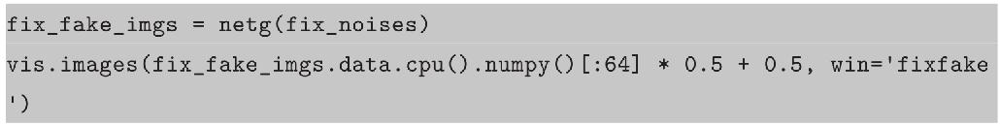
除此之外，还提供了一个函数，能加载预训练好的模型，并利用噪声随机生成图片。
完整的代码请参考本书的附带样例代码chapter7/AnimeGAN。参照README.MD中的指南配置环境，并准备好数据，而后用如下命令即可开始训练：
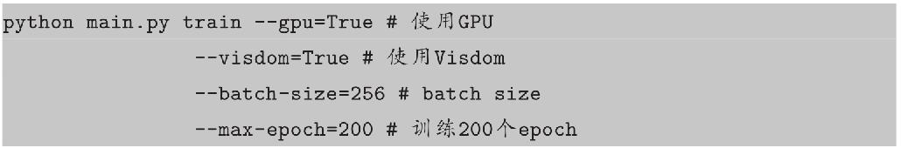
如果使用visdom的话，此时打开http：//[your ip]：8097就能看到生成的图像。
训练完成后，我们可以利用生成网络随机生成动漫头像，输入命令如下：
7.3 实验结果分析
实验结果如图7-9所示，分别是训练1个、10个、20个、30个、40个、200个epoch之后神经网络生成的动漫头像。需要注意的是，每次生成器输入的噪声都是一样的，所以我们可以对比在相同的输入下，生成图片的质量是如何慢慢改善的。
图7-9 GAN生成的动漫头像
刚开始生成的图像比较模糊（1个epoch），但是可以看出图像已经有面部轮廓。
继续训练10个epoch之后，生成的图多了很多细节信息，包括头发、颜色等，但是总体还是很模糊。
训练20个epoch之后，细节继续完善，包括头发的纹理、眼睛的细节等，但还是有不少涂抹的痕迹。
训练到第40个epoch时，已经能看出明显的面部轮廓和细节，但还是有涂抹现象，并且有些细节不够合理，例如眼睛一大一小，面部的轮廓扭曲严重。
当训练到200个epoch之后，图片的细节已经十分完善，线条更流畅，轮廓更清晰，虽然还有一些不合理之处，但是已经有不少图片能够以假乱真了。
类似的生成动漫头像的项目还有“用DRGAN生成高清的动漫头像”，效果如图7-10所示。但遗憾的是，由于论文中使用的数据涉及版权问题，未能公开。这篇论文的主要改进包括使用了更高质量的图片数据和更深、更复杂的模型。
图7-10 用DRGAN生成的动漫头像
本章讲解的样例程序还可以应用到不同的生成图片场景中，只要将训练图片改成其他类型的图片即可，例如LSUN客房图片集、MNIST手写数据集或CIFAR10数据集等。事实上，上述模型还有很大的改进空间。在这里，我们使用的全卷积网络只有四层，模型比较浅，而在ResNet的论文发表之后，也有不少研究者尝试在GAN的网络结构中引入Residual Block结构，并取得了不错的视觉效果。感兴趣的读者可以尝试将示例代码中的单层卷积修改为Residual Block，相信可以取得不错的效果。
近年来，GAN的一个重大突破在于理论研究。论文Towards Principled Methods for Training Generative Adversarial Networks[4]从理论的角度分析了GAN为何难以训练，作者随后在另一篇论文Wasserstein GAN[5]中针对性地提出了一个更好的解决方案。但是Wasserstein GAN 这篇论文在部分技术细节上的实现过于随意，所以随后又有人有针对性地提出Improved Training of Wasserstein GANs[6]，更好地训练WGAN。后面两篇论文分别用PyTorch和TensorFlow实现，代码可以从GitHub上搜索到。笔者当初也尝试用100行左右的代码实现了Wasserstein GAN，感兴趣的读者可以去了解[7]。
随着GAN研究的逐渐成熟，人们也尝试把GAN用于工业实际问题之中，而在众多相关论文中，最令人印象深刻的就是Unpaired Image-to-Image Translation using Cycle-Consistent Adversarial Networks[8]，论文中提出了一种新的GAN结构称为CycleGAN。CycleGAN利用GAN实现风格迁移、黑白图像彩色化，以及马和斑马相互转化等，效果十分出众。论文的作者用PyTorch实现了所有代码，并开源在GitHub[9]上，感兴趣的读者可以自行查阅。
本章主要介绍GAN的基本原理，并带领读者利用GAN生成动漫头像。GAN有许多变种，GitHub上有许多利用PyTorch实现的各种GAN，感兴趣的读者可以自行查阅。
[1]https://github.com/hindupuravinash/the-gan-zoo
[2]Goodfellow,Ian,et al.”Generative adversarial nets.”Advances in Neural Information Processing Systems.2014.
[3]http://qiita.com/mattya/items/e5bfe5e04b9d2f0bbd47
[4]Arjovsky M,Bottou L.Towards principled methods for training generative adversarial networks[J].arXiv preprint arXiv:1701.04862,2017.
[5]Arjovsky M,Chintala S,Bottou L.Wasserstein gan[J].arXiv preprint arXiv:1701.07875,2017.
[6]Gulrajani I,Ahmed F,Arjovsky M,et al.Improved training of wasserstein gans[J].arXiv preprint arXiv:1704.00028,2017.
[7]https://github.com/chenyuntc/pytorch-GAN/blob/master/WGAN.ipynb
[8]Zhu J Y,Park T,Isola P,et al.Unpaired image-to-image translation using cycle-consistent adversarial networks[J].arXiv preprint arXiv:1703.10593,2017.
[9]https://github.com/junyanz/pytorch-CycleGAN-and-pix2pix
8 AI艺术家：神经网络风格迁移
本章我们将介绍一个酷炫的深度学习应用——风格迁移（Style Transfer）。近年来，由深度学习引领的人工智能技术浪潮越来越广泛地应用到社会各个领域。这其中，手机应用Prisma，尝试为用户的照片生成名画效果，一经推出就吸引了海量用户，登顶App Store下载排行榜。这神奇背后的核心技术就是基于深度学习的图像风格迁移。
风格迁移又称风格转换，直观点的类比就是给输入的图像加个滤镜，但是又不同于传统滤镜。风格迁移基于人工智能，每个风格都是由真正的艺术家作品训练、创作而成。只需要给定原始图片，并选择艺术家的风格图片，就能把原始图片转化成具有相应艺术家风格的图片。如图8-1所示，给定一张风格图片（左上角，手绘糖果图）和一张内容图片（右上角，斯坦福校园图），神经网络能够生成手绘风格的斯坦福校园图（下图）。
本章我们将一起学习风格迁移的原理，并用PyTorch从头实现一个风格迁移的神经网络，来看看人工智能与艺术的交叉碰撞会产生什么样的有趣结果。
图8-1 斯坦福校园风格迁移
8.1 风格迁移原理介绍
风格迁移中有两类图片，一类是风格图片，通常是一些艺术家的作品，比较经典的有梵高的《星月夜》《向日葵》，毕加索的《A muse》，莫奈的《印象·日出》，日本浮世绘的《神奈川冲浪里》等，这些图片往往具有比较明显的艺术家风格，包括色彩、线条、轮廓等；另一类是内容图片，这些图片通常来自现实世界中，例如用户个人摄影。利用风格迁移能够将内容图片转成具有艺术家风格的图片。
2015年，来自德国图宾根大学（University of Tübingen）Bethge实验室的三位研究员莱昂·盖提斯（Leon Gatys）、亚历山大·埃克（Alexander Ecker）和马蒂亚斯·贝特格（Matthias Bethge）研发了一种算法，模拟人类视觉的处理方式，通过训练多层卷积神经网络（CNN），让计算机识别并学会梵高的“风格”，然后将任何一张普通的照片变成梵高的《星空》。2015年，他们的发现被整理成两篇论文：A Neural Algorithm of Artistic Style[1]和Texture Synthesis Using Convolutional Neural Networks[2]，引起了学术界和工业界的极大兴趣。
Gatys等人提出的方法被称为Neural Style，然而他们的做法在实现上过于复杂，每次进行风格迁移都需要几十分钟甚至几个小时的训练。斯坦福博士生Justin Johnson于2016 年在 ECCV 上发表论文 Perceptual Losses for Real-Time Style Transfer and Super-Resolution[3]，提出了一种快速实现风格迁移的算法，这种方法通常被称为Fast Neural Style。当用Fast Neural Style训练好某一个风格的模型之后，通常只需要GPU运行几秒，就能生成对应的风格迁移结果。本章中介绍的主要是基于Justin Johnson的Fast Neural Style方法，即快速风格迁移。
Fast Neural Style和Neural Style主要有以下两点区别。
（1）Fast Neural Style针对每一个风格图片训练一个模型（在GPU上运行大概4个小时），而后可以反复使用，进行快速风格迁移（几秒到20秒）。Neural Style不需要专门训练模型，只需要从噪声中不断地调整图像的像素值，直到最后得到结果，速度较慢，需要十几分钟到几十分钟不等。
（2）普遍认为Neural Style生成的图片效果会比Fast Neural Style的效果好。
关于Neural Style的实现，可以参考PyTorch官方的Tutorial中的教程[4]，实现也比较简单。
要产生效果逼真的风格迁移的图片有两个要求。一是要生成的图片在内容、细节上尽可能地与输入的内容图片相似；二是要生成的图片在风格上尽可能地与风格图片相似。相应地，我们定义两个损失content loss和style loss，分别用来衡量上述两个指标。
图像的内容和风格含义广泛，并且没有严格统一的数学定义，具有很大程度上的主观性，因此很难表示。content loss比较常用的做法是采用逐像素计算差值，又称pixel-wise loss，追求生成的图片和原始图片逐像素的差值尽可能小。这种做法有诸多不合理的地方，Justin在论文中提出了一种更好的计算content loss的方法：perceptual loss。不同于pixel-wise loss计算像素层面的差异，perceptual loss计算的是图像在更高层语义层次上的差异，论文中使用预训练好的神经网络的高层输入作为图片的知觉特征，进而计算二者的差异值作为perceptual loss。
深度学习之所以被称为“深度”，就在于它采用了深层的网络结构，网络的不同层学到的是图像不同层面的特征信息。深度学习网络的输入是像素信息，也可以认为是点，研究表明，几乎所有神经网络的第一层学习到的都是关于线条和颜色的信息，直观理解就是像素组成色彩，点组成线，这与人眼的感知特征十分相像。再往上，神经网络开始关注一些复杂的特征，例如拐角或者某些特殊的形状，这些特征可以看成是低层次的特征组合。随着深度的加深，神经网络关注的信息逐渐抽象，例如有些卷积核关注的是这张图中有个鼻子，或者是图中有张人脸，以及对象之间的空间关系，例如鼻子在人脸的中间等。
在进行风格迁移时，我们并不要求生成图片的像素和原始图片中的每一个像素都一样，我们追求的是生成图片和原图片具有相同的特征：例如原图中有只猫，我们希望风格迁移之后的图片依旧有猫。图片中“有猫”这个概念不就是我们分类问题最后一层的输出吗？但最后一层的特征对我们来说抽象程度太高，因为我们不仅希望图中有只猫，还希望保存这只猫的部分细节信息，例如它的形状、动作等信息，这些信息相对来说没有那么高层次。因此我们使用中间某些层的特征作为目标，希望原图像和风格迁移的结果在这些层输出的特征尽可能相似，即将图片在深度模型的中间某些层的输出作为图像的知觉特征。
我们一般使用Gram矩阵来表示图像的风格特征。对于每一张图片，卷积层的输出形状为C×H×W，C是卷积核的通道数，一般称为有C个卷积核，每个卷积核学习图像的不同特征。每一个卷积核输出的H×W 代表这张图像的一个feature map，可以认为是一张特殊的图像——原始彩色图像可以看作RGB三个feature map拼接组合成的特殊feature maps。通过计算每个feature map之间的相似性，我们可以得到图像的风格特征。对于一个C×H×W 的feature maps F，Gram Matrix的形状为C×C，其第i、j个元素Gi，j的计算方式定义如下：
其中F ik 代表第i个feature map的第k个像素点。关于Gram Matrix，以下三点值得注意：
• Gram Matrix的计算采用了累加的形式，抛弃了空间信息。一张图片的像素随机打乱之后计算得到的Gram Matrix和原图的Gram Matrix一样。所以可以认为Gram Matrix抛弃了元素之间的空间信息。
• Gram Matrix的结果与feature maps F 的尺度无关，只与通道数有关。无论H、W的大小如何，最后Gram Matrix的形状都是C×C。
• 对于一个C×H×W 的feature maps，可以通过调整形状和矩阵乘法快速计算它的Gram Matrix，即先将F 调整为C×（H W）的二维矩阵，然后再计算F · F T ，结果就是Gram Matrix。
图8-2展现了Gram Matrix的特点：注重风格纹理等特征，忽略空间信息。图中第一行是输入的原图片，经过神经网络计算出不同层的Gram Matrix，然后尝试从这些层的Gram Matrix恢复出原图，换一种角度来说，我们可以认为每一列的图像的Gram Matrix值都很接近。尤其是第四行和第一行的对比，我们可以明显地看出，无论恢复的图像清晰度如何，图像的空间信息在计算Gram Matrix时都被舍弃，但是纹理、色彩等风格信息被保存下来。
图8-2 从Gram Matrix中恢复原图
实践证明利用Gram Matrix表征图像的风格特征在风格迁移、纹理合成等任务中的表现十分出众。
总结如下。
• 神经网络的高层输出可以作为图像的知觉特征描述。
• 神经网络的高层输出的Gram Matrix可以作为图像的风格特征描述。
• 风格迁移的目标是使生成图片和原图片的知觉特征尽可能相似，并且和风格图片的风格特征尽可能地相似。
在最初的Neural Style论文中，随机初始化目标图片为噪声，然后利用梯度下降法调整图片，使目标图片和风格图片的风格特征（即Gram Matrix）尽可能地相似，和原图片的知觉特征也尽可能地相似。这种做法生成的图片效果很好，但其十分耗时！每次都需要从一个噪声开始调整图片，直到得到最终的目标图片，在GPU上完成一次风格迁移需要十几分钟甚至数小时。
2016年Justin Johnson提出了一种快速风格迁移算法，这种算法被称为 Fast Neural Style 或 Fast Style Transfer 。与Neural Style相比，Fast Neural Style专门设计了一个网络用来进行风格迁移，输入原图片，网络将自动生成目标图片。这个网络需要针对每一种风格图片训练一个相对应的风格网络，但是一旦训练完成，便只需要20秒甚至更短的时间就能完成一次风格迁移。
Fast Neural Style的网络结构如图8-3所示，x是输入图像，在风格迁移任务中yc =x，ys是风格图片，Image Transform Net fW 是我们设计的风格迁移网络，针对输入的图像x，能够返回一张新的图像y^。y^在图像内容上与yc相似，但在风格上与ys相似。损失网络（Loss Network）不用训练，只是用来计算知觉特征和风格特征在论文中，损失网络。采用在ImageNet上预训练好的VGG-16。
图8-3 Fast Neural Style的结构概览
VGG-16的网络结构如图8-4所示，网络从左到右有5个卷积块，两个卷积块之间通过MaxPooling层区分。每个卷积块有2～3个卷积层，每一个卷积层后面都跟着一个ReLU激活层。上面的relu2 2表示第2个卷积块的第2个卷积层的激活层（ReLU）输出。
Fast Neural Style的训练步骤如下。
（1）输入一张图片x到fW 中得到结果y^。
（2）将和yc（其实就是x）输入到loss network（VGG-16）中，计算它在relu3 3的输出，并计算它们之间的均方误差作为content loss。
（3）将和ys（风格图片）输入到loss network中，计算它在relu1_2、relu2_2、relu3_3和relu4_3的输出，再计算它们的Gram Matrix的均方误差作为style loss。
（4）两个损失相加，并反向传播。更新fW 的参数，固定loss network不动。
（5）跳回第一步，继续训练fW。
图8-4 VGG-16的网络结构
在讲解如何用PyTorch实现风格迁移之前，我们先来了解全卷积网络的结构。我们知道风格迁移网络的输入是图片，输出也是图片，对这种网络我们一般实现为一个全部都是卷积层而没有全连接层的网络结构。对于卷积层，当输入feature maps（或者图片）的尺寸为Cin ×Hin ×Win，卷积核有Cout个，卷积核尺寸为K，padding大小为P，步长为S时，输出feature maps的形状为Cout ×Hout ×Wout，其中
举例来说，如果我们输入图片的尺寸是3×256×256，第一层卷积的卷积核大小为3，padding为1，步长为2，通道数为128，那么输出的feature map形状，按照上述公式计算的结果就是：
所以最后的输出是Cout ×Hout ×Wout =128×128×128，即尺度缩小一倍，通道数增加。如果把步长由2改成1，则输出的形状就是128×256×256，即尺度不变，只是通道数增加。
除卷积层之外，还有一种叫做转置卷积层（Transposed Convolution），也有人称之为反卷积（DeConvolution），它可以看成是卷积操作的逆运算。对于卷积操作，当步长大于1时，执行的是类似于下采样的操作，而对于转置卷积，当步长大于1时，执行的是类似于上采样的操作。全卷积网络的一个重要优势在于对输入的尺寸没有要求，这样在进行风格迁移时就能够接受不同分辨率的图片。
论文中提到的风格迁移结构全部由卷积层、Batch Normalization和激活层组成，不包含全连接层，在这里我们不使用Batch Normalization，取而代之的是Instance Normal-ization。Instance Normalization和Batch Normalization的唯一区别就在于InstanceNorm只对每一个样本求均值和方差，而BatchNorm则会对一个batch中所有的样本求均值。例如对于一个B×C×H×W 的tensor，在Batch Normalization中计算均值时，就会计算B×H×W 个数的均值，共有C个均值；而Instance Normalization会计算H×W个数的均值，即共有B×C个均值。在Dmitry Ulyanov的论文Instance Normalization：The Missing Ingredient for Fast Stylization中提到过，用InstanceNorm代替BatchNorm能够显著地提升风格迁移的效果。
8.2 用PyTorch实现风格迁移
我们先来看看本次实验的文件组织：
上述各个文件的主要内容和作用如下。
• checkpoints/：用来保存模型。
• data/：用来保存数据，可以把数据直接保存于coco文件夹下，也可以通过ln-s/mnt/3/coco/train2014 data/coco软链接的方式将数据链接到data/文件夹下，还可以通过命令行参数另外指定数据路径。
• main.py：主函数，包括训练和测试。
• PackedVGG.py：预训练好的VGG-16，为了提取中间层的输出，所以做了一些修改简化。
• transformer_net.py：风格迁移网络。输入一张图片，输出一张图片。
• utils.py：工具集合，主要是可视化工具visdom的封装和计算Gram Matrix等。
首先来看看如何使用预训练的VGG，这部分代码保存在PackedVGG.py中。在torchvi-sion的仓库中有预训练好的VGG-16网络，使用十分方便，但在风格迁移网络中，我们需要获得中间层的输出，因此需要修改网络的前向传播过程，将相应层的输出保存下来。同时有很多层不再需要，可删除以节省内存占用。实现的代码如下。
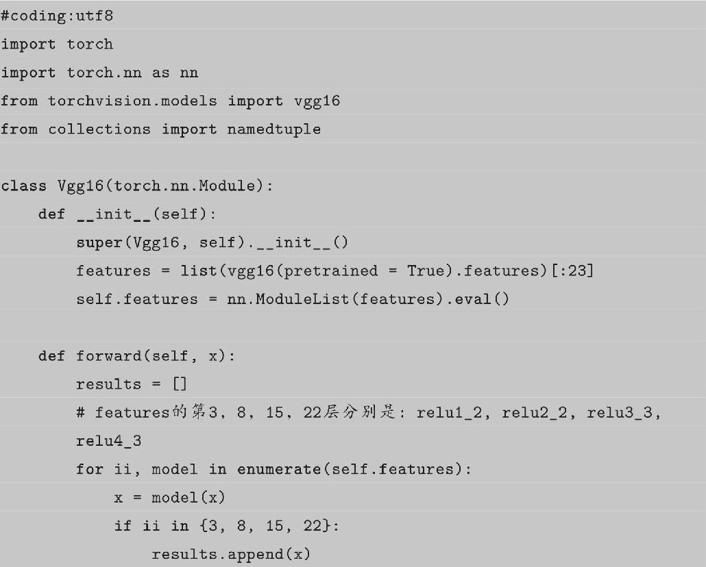
在torchvision中，VGG的实现由两个nn.Sequential对象组成，第一个是features，包含卷积、激活和MaxPool等层，用来提取图片特征，另一个是classifier，包含全连接等，用来分类。可以通过vgg.features直接获得对应的nn.Sequential对象。这样在前向传播时，当计算完指定层的输出后，就将结果保存于一个list中，然后再使用namedtuple进行名称绑定，这样可以通过output.relu1_2访问第一个元素，更为方便和直观。当然也可以利用layer.register_forward_hook的方式获取相应层的输出，但是在本例中相对比较麻烦。
接下来要实现的是风格迁移网络，其代码在transformer_net.py中，实现时参考了PyTorch的官方示例[5]，其网络结构如图8-5所示。图中（b）是网络的总体结构，左边（d）是一个残差单元的结构图，右边（c）和（d）分别是下采样和上采样单元的结构图。网络结构总结起来有以下几个特点。
• 先下采样，然后上采样，这种做法使计算量变小，详细说明请参考论文。
• 使用残差结构使网络变深。
• 边缘补齐的方式不再是传统的补0，而是采用一种被称为Reflection Pad的补齐策略：上下左右反射边缘的像素进行补齐。
• 上采样不再使用传统的ConvTransposed2d，而是先用Upsample，然后用Conv2d，这种做法能避免Checkerboard Artifacts现象。
• Batch Normalization全部改成Instance Normalizaiton。
• 网络中没有全连接层，线性操作是卷积，因此对输入和输出图片的尺寸没有要求，这里我们输入和输出图片的尺寸都是3×256×256（其他尺寸的一样可以）。
在第6章中我们提到过，对于常出现的网络结构，可以实现为nn.Module对象，作为一个特殊的层。在本例中，Conv、UpConv和Residual Block都可以如此实现。
例如Conv，可以实现为如下：
图8-5 风格迁移的网络结构
UpConv和Residual Block的实现也是类似的，这里不再细说，具体内容请看本章配套代码。
主模型主要包含三部分：下采样的卷积层、深度残差层和上采样的卷积层。实现时充分利用了nn.Sequential，避免在forward中重复写代码，其代码如下。
搭建完网络之后，我们还要实现一些工具函数，这部分的代码保存于util.py中。代码如下：
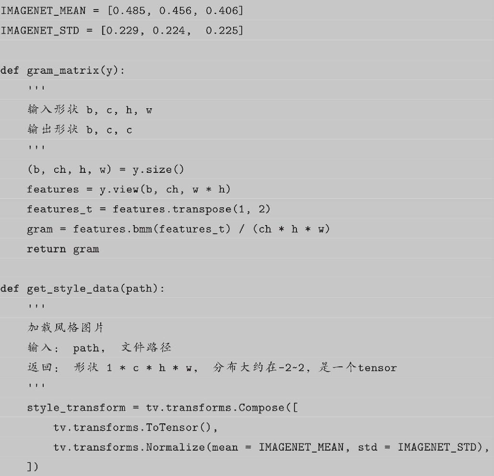
可以看出util.py中主要包含以下三个功能。
• 计算Gram Matrix：利用矩阵转置的乘法即可实现，但是这里我们要对batch中的每一个样本计算Gram Matrix，因此用的是tensor.bmm（tensor2），而不是tensor.mm（tesnor2）。
• 获取风格图片：根据文件名读取图片，并将它转化成tensor。这里图片的均值和标准差不是0.5和0.5，而是使用他人专门计算的ImageNet上所有图片的均值和标准差，更符合真实世界图片的分布。人们发现按照这个数值处理的图片比简单地使用0.5作为均值和标准差效果好。
• 将分布在0～255的图片进行标准化，和上述对风格图片的处理类似，需要注意，这里是针对Variable对象的处理。
除此之外，还有对visdom操作的封装，这里不再展示。
当我们将上述网络定义和工具函数写完之后，就可以开始训练网络了。首先来看看在config.py中都有哪些可以配置的参数：
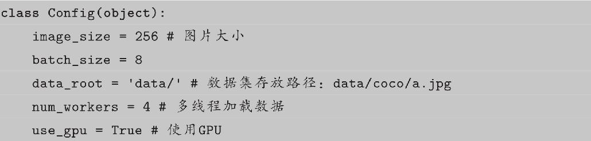
论文中训练用的图片是MS COCO数据集，读者可从官网[6]下载。其训练集中包含8万张图片，共13GB。笔者认为COCO的数据比ImageNet的数据更复杂，更像是日常生活的照片。读者如果有ImageNet的图片，也一样可以使用。获取数据之后，将数据解压至data/coco/文件夹中，或放到任意位置，然后在训练时指定对应路径。
我们可以在main.py中直接利用ImageFolder和DataLoader加载数据：
正训练前，还需要定义一些额外的信息，包括网络定义、优化器的定义等，还要获取风格图片的风格表征（Gram Matrix）及用来平滑损失的AverageValueMeter。
训练步骤在8.1节已经讲过，按照训练步骤，很容易写出如下训练代码：
完整的代码请查看本书的配套源码。这个程序中容易让人混淆的是图片的尺度，有时是0～1，有时是-2～2，还有时是0～255，统一说明如下。
• 图片每个像素的取值范围为0～255。
• 调用torchvison的transforms.ToTensor （）操作，像素会被转换到0～1。
• 这时如果进行标准化（减均值除以标准差），均值和标准差均为0.5，那么标准化之后图片的分布就是-1～1，但在本次实验中使用的均值和标准差不是0.5，而是[0.485，0.456，0.406]和[0.229，0.224，0.225]，这是在ImageNet 100万张图片上计算得到的图片的均值和标准差，可以估算得知这时图片的分布范围大概在之间。尽管这时它的分布在-2.1～2.7，但是它的均值接近0，标准差接近1，采用ImageNet图片的均值和标准差作为标准化参数的目的是图像各个像素的分布接近标准分布。
• VGG-16网络的输入图像数值大小为使用ImageNet均值和标准差进行标准化之后的图片数据，即-2.1～2.7。
• TransformerNet网络的输入图片的像素值是0～255，输出的像素值也希望是0～255，但是由于输出没有做特殊处理，所以可能出现小于0和大于255的像素。
• 使用visdom images进行可视化和使用torchvision.utils.save_image保存图片时，希望tensor的数值位于0～1。
当我们掌握了上述内容后，就不难理解为什么在代码中时不时地出现各种尺度变换（乘以标准差加上均值）和截断操作。尺度变换是为了从一个尺度变成另一个尺度，截断是为了确保数值在一定范围之内（0～1或者0～255）。
除了训练模型，我们还希望能加载预训练好的模型对指定的图片进行风格迁移的操作，这部分的代码实现如下。
这样，我们就可以通过命令行的方式训练，或者加载预训练好的模型进行风格迁移。
8.3 实验结果分析
在本例中我们只训练了一个风格的模型，风格图片如图8-6所示，风格迁移的结果如图8-7所示，上面一行是原始图片（来自无版权图片网站https：//pixabay.com），下面一行是风格迁移的结果。随书附带代码中带有这个预训练的模型，读者可以用其他图片查看风格迁移的效果，图片分辨率越高，风格迁移的效果越好。另外，读者也可以通过指定
—style-path=my style.png训练不同风格的迁移网络。
图8-6 风格迁移使用的风格图片
图8-7 风格迁移结果示意图
除了风格迁移，类似的应用还有Google DeepDream，可以输入一张图片生成神经网络眼中的这张图片的样子，网络越深，生成的图片中包含的奇幻东西越多，效果如图8-8所示。
图8-8 DeepDream效果图
2017年有两个比较吸引人的风格迁移项目，一个是来自Adobe的图片风格深度迁移（Deep Photo Style Transfer）[7]，这是由康奈尔大学的中国留学生和Adobe公司的工程师共同合作的一个新项目，通过深度学习的图片处理方法，直接提取了参考图片的风格，并转换为相对应的滤镜，其效果如图8-9所示，最左边是原图，中间是目标风格图片，最右边是将中间的风格迁移到左边的结果。
图8-9 图片风格深度迁移效果图
另外一个项目是来自UC Berkeley的CycleGAN[8]，它能够胜任任何的图像转换和图像翻译任务，在风格迁移上的效果（如图8-10所示）尤其令人瞩目。CycleGAN的网络结构和Fast Neural Style的transformer类似，但它采用了GAN的训练方式，能够实现风格的双向转换，更加通用。
图8-10 CycleGAN效果图
在本章，我们学会了如何实现一个深度学习中很酷的应用：风格迁移。不仅讲解了它的原理、风格损失和内容损失的实现，还用PyTorch实现了相应的代码。
[1]Gatys L A,Ecker A S,Bethge M.A neural algorithm of artistic style[J].arXiv preprint arXiv:1508.06576,2015.
[2]Gatys L,Ecker A S,Bethge M.Texture synthesis using convolutional neural networks[C]//Advances in Neural In-formation Processing Systems.2015:262-270.
[3]Johnson J,Alahi A,Fei-Fei L.Perceptual losses for real-time style transfer and super-resolution[C]//European Con-ference on Computer Vision.Springer International Publishing,2016:694-711.
[4]http://pytorch.org/tutorials/advanced/neural_style_tutorial.html
[5]https://github.com/pytorch/examples/tree/master/fast_neural_style
[6]http://images.cocodataset.org/zips/train2014.zip
[7]https://github.com/luanfujun/deep-photo-styletransfer
[8]https://junyanz.github.io/CycleGAN/
9 AI诗人：用RNN写诗
我们先来看一首诗。
深宫有奇物，璞玉冠何有。
度岁忽如何，遐龄复何欲。
学来玉阶上，仰望金闺籍。
习协万壑间，高高万象逼。
这是一首藏头诗，每句诗的第一句组合起来就是“深度学习”。想必你也猜到了，这首诗就是使用深度学习写的！本章我们将学习一些自然语言处理的基本概念，并尝试自己动手，用RNN实现自动写诗。
9.1 自然语言处理的基础知识
自然语言处理（Natural Language Processing，NLP）是人工智能和语言学领域的分支学科。自然语言处理是一个很宽泛的学科，涉及机器翻译、句法分析、信息检索等诸多研究方向。由于篇幅的限制，本章重点讲解自然语言处理中的两个基本概念词向量（Word Vector）和循环神经网络（Recurrent Neural Network，RNN）。
9.1.1 词向量
自然语言处理主要研究语言信息，语言（词、句子、篇章等）属于人类认知过程中产生的高层认知抽象实体，而语音和图像属于较底层的原始输入信号。语音、图像数据表达不需要特殊的编码，并且有天生的顺序性和关联性，近似的数字会被认为是近似的特征。正如图像是由像素组成，语言是由词或字组成，可以把语言转化为词或字表示的集合。
然而，不同于像素的大小天生具有色彩信息，词的数值大小很难表征词的含义。最初，人们为了方便，采用One-Hot编码格式。以一个只有10个不同词的语料库为例（这里只是举个例子，一般中文语料库的字平均在8000～50000，而词则在几十万左右），我们可以用一个10维的向量来表示每个词，该向量在词下标位置的值为1，而其他全部为0。示例如下：
这种词的表示方法十分简单，也很容易实现，解决了分类器难以处理属性（Cate-gorical）数据的问题。它的缺点也很明显：冗余太多、无法体现词与词之间的关系。可以看到，这10个词的表示，彼此之间都是相互正交的，即任意两个词之间都不相关，并且任何两个词之间的距离也都是一样的。同时，随着词数的增加，One-Hot向量的维度也会急剧增长，如果有3000个不同的词，那么每个One-Hot词向量都是3000维，而且只有一个位置为1，其余位置都是0。虽然One-Hot编码格式在传统任务上表现出色，但是由于词的维度太高，应用在深度学习上时，常常出现维度灾难，所以在深度学习中一般采用词向量的表示形式。
词向量（Word Vector），也被称为词嵌入（Word Embedding），并没有严格统一的定义。从概念上讲，它是指把一个维数为所有词的数量的高维空间（几万个字，几十万个词）嵌入一个维数低得多的连续向量空间（通常是128或256维）中，每个单词或词组被映射为实数域上的向量。
词向量有专门的训练方法，这里不会细讲，感兴趣的读者可以学习斯坦福的CS224系列课程（包括CS224D和CS224N）。在本章的学习中，读者只需要知道词向量最重要的特征是相似词的词向量距离相近。每个词的词向量维度都是固定的，每一维都是连续的数。举个例子，如果我们用二维的词向量表示十个词：足球、比赛、教练、队伍，裤子、长裤、上衣和编织、折叠、拉，那么可视化出来的结果如图9-1所示。可以看出，同类的词（足球相关的词、衣服相关的词，以及动词）彼此聚集，相互之间的距离比较近。
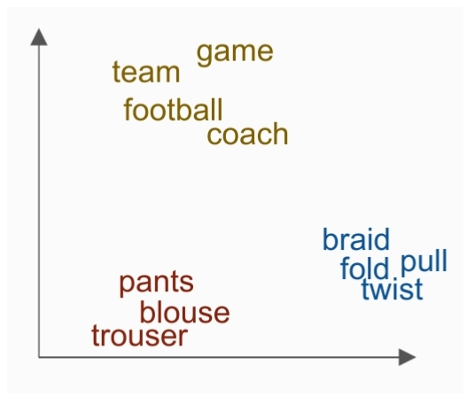
图9-1 十个词的词向量用二维坐标表示
可见，用词向量表示词，不仅所用维度会变少（由十维变成二维），其中也会包含更合理的语义信息。除了相邻词距离更近之外，词向量还有不少有趣的特征，如图9-2所示，虚线的两端分别是男性词和女性词，例如叔叔和阿姨、兄弟和姐妹、男人和女人、先生和女士。可以看出，虚线的方向和长度都差不多，因此可以认为vector（国王）-vector（女王）≈vector（男人）-vector（女人），换一种写法就是vector（国王）-vector（男人）≈vector（女王）-vector（女人），即国王可以看成男性君主，女王可以看成女性君主，国王减去男性，只剩下君主的特征；女王减去女性，也只剩下君主的特征，所以这二者近似。
图9-2 男性词和女性词对应的词向量
英文一般是用一个向量表示一个单词，也有使用一个向量表示一个字母的情况。中文同样也有一个词或者一个字的词向量表示，与英文采用空格来区分词不同，中文的词与词之间没有间隔，因此如果采用基于词的词向量表示，需要先进行中文分词。
这里只对词向量做一个概要性的介绍，让读者对词向量有一个直观的认知。读者只需要掌握词向量技术用向量表征词，相似词之间的向量距离近。至于如何训练词向量，如何评估词向量等内容，这里不做介绍，感兴趣的读者可以参看斯坦福大学的相关课程。
在PyTorch中，针对词向量有一个专门的层nn.Embedding，用来实现词与词向量的映射。nn.Embedding具有一个权重，形状是（num_words，embedding_dim），例如对上述例子中的10个词，每个词用2维向量表征，对应的权重就是一个10×2的矩阵。Embedding的输入形状是N×W，N 是batch size，W 是序列的长度，输出的形状是N×W×embedding_dim。输入必须是LongTensor，FloatTensor须通过tensor.long
（）方法转成LongTensor。举例如下：
输出是：
需要注意的是，Embedding的权重也是可以训练的，既可以采用随机初始化，也可以采用预训练好的词向量初始化。
9.1.2 RNN
RNN的全称是Recurrent Neural Network，在深度学习中还有一个Recursive Neural Network也被称为RNN，这里应注意区分，除非特殊说明，我们所遇到的绝大多数RNN都是指前者。在用深度学习解决NLP问题时，RNN几乎是必不可少的工具。假设我们现在已经有每个词的词向量表示，那么我们将如何获得这些词所组成的句子的含义呢？我们无法单纯地分析一个词，因为每一个词都依赖于前一个词，单纯地看某一个词无法获得句子的信息。RNN则可以很好地解决这个问题，通过每次利用之前词的状态（hidden state）和当前词相结合计算新的状态。
RNN的网络结构如图9-3所示。
• x1 ，x2 ，x3 ，…，xT：输入词的序列（共有T 个词），每个词都是一个向量，通常用词向量表示。
• h0，h1，h2，h3，…，hT：隐藏元（共T+1个），每个隐藏元都由之前的词计算得到，所以可以认为包含之前所有词的信息。h0代表初始信息，一般采用全0的向量进行初始化。
• fW：转换函数，根据当前输入xt和前一个隐藏元的状态（ht-1），计算新的隐藏元状态ht。可以认为ht-1包含前t-1个词的信息，即x1，x2，…，xt-1，由fW 利用ht-1和xt计算得到的ht，可以认为是包含前t个词的信息。需要注意的是，每一次计算ht都用同一个fW。fW 一般是一个矩阵乘法运算。
RNN最后会输出所有隐藏元的信息，一般只使用最后一个隐藏元的信息，可以认为它包含了整个句子的信息。

图9-3 RNN结构图
图9-3所示的RNN结构通常被称为Vanilla RNN，Vanilla RNN易于实现，并且简单直观，但却具有严重的梯度消失和梯度爆炸问题，难以训练。目前在深度学习中普遍使用的是一种被称为LSTM的RNN结构。LSTM（Long Short Term Memory Networks，长短期记忆网络）的结构如图9-4所示，它的结构与Vanilla RNN类似，也是通过不断利用之前的状态和当前的输入来计算新的状态。但其fW 函数更复杂，除了隐藏元状态（hidden state h），还有cell state c。每个LSTM单元的输出有两个，一个是下面的ht
（ht同时被创建分支引到上面去），一个是上面的ct。ct的存在能很好地抑制梯度消失和梯度爆炸等问题。关于RNN和LSTM的介绍，可以参考colah的博客[1]。
图9-4 LSTM结构图
LSTM很好地解决了训练RNN过程中的各种问题，在几乎各类问题中都展现出远好于Vanilla RNN的表现。在PyTorch中使用LSTM的例子如下。
输出：

注意 ：output的形状与LSTM的层数无关，只和序列长度有关，而hn和cn则相反。
除了LSTM，PyTorch中还有LSTMCell。LSTM是对一个LSTM层的抽象，可以看成是由多个LSTMCell组成。而使用LSTMCell则可以进行更精细化的操作。LSTM还有一种变体称为GRU（Gated Recurrent Unit），相较于LSTM，GRU的速度更快，效果也接近。在某些对速度要求十分严格的场景可以使用GRU作为LSTM的替代品。
9.2 CharRNN
CharRNN的作者Andrej karpathy现任特斯拉AI主管，也曾是优秀的深度学习课程CS231n的主讲人。关于Char RNN，Andrej Karpathy有一篇论文[2]发表于ICLR2016，同时还有一篇相当精彩的博客[3]介绍了不可思议的Char RNN。
CharRNN从海量文本中学习英文字母（注意，是字母，不是英语单词）的组合，并能够自动生成相对应的文本。例如作者用莎士比亚的剧集训练Char RNN，最后得到一个能够模仿莎士比亚写剧的程序，生成的莎剧剧本如下：
PANDARUS:Alas,I think he shall be come approached and the day When little srain would be attain’d into being never fed,And who is but a chain and subjects of his death,I should not sleep.
Second Senator:They are away this miseries,produced upon my soul,Breaking and strongly should be buried,when I perish The earth and thoughts of many states.DUKE VINCENTIO:Well,your wit is in the care of side and that.
Second Lord:They would be ruled after this chamber,and my fair nues begun out of the fact,to be conveyed,Whose noble souls I’ll have the heart of the wars.
Clown:Come,sir,I will make did behold your worship.
VIOLA:I’ll drink it.
作者还做了许多十分有趣的实验，例如模仿Linux的源代码写程序，模仿开源的教科书的LaTeX源码写书等。
CharRNN的原理其实十分简单，它分为训练和生成两部分。训练的时候如图9-5所示。

图9-5 CharRNN结构图
例如，莎士比亚剧本中有hello world这句话，可以把它转化成分类任务。RNN的输入是hello worl，对于RNN的每一个隐藏元的输出，都接一个全连接层用来预测下一个字，即：
第一个隐藏元，输入h，包含h的信息，预测输出e；第二个隐藏元，输入e，包含he的信息，预测输出l；第三个隐藏元，输入l，包含hel的信息，预测输出l；第四个隐藏元，输入l，包含hell的信息，预测输出o；……
如上所述，CharRNN可以看成一个分类问题：根据当前字符，预测下一个字符。对英文字符来说，文本中用到的总共只有不超过128个字符（假设就是128个字符），所以预测问题可以改成128分类问题：将每一个隐藏元的输出，输入到一个全连接层，计算输出属于128个字符的概率，计算交叉熵损失即可。
总结成一句话：CharRNN通过利用当前字的隐藏元状态预测下一个字，把生成问题变成了分类问题。
训练完之后，我们就可以利用网络进行文本生成来写诗和剧本。生成的步骤如图9-6所示。
• 首先输入一个起始的字符（一般用＜START＞标识），计算输出属于每个字符的概率。
• 选择概率最大的一个字符作为输出。
• 将上一步的输出作为输入，继续输入到网络中，计算输出属于每个字符的概率。
•……
最后将所有字拼接组合在一起，就得到最后的生成结果。
图9-6 CharRNN的生成步骤
CharRNN还有一些不够严谨之处，例如它使用One-Hot的形式表示词，而不是使用词向量；使用RNN而不是LSTM。在本次实验中，我们将对这些进行改进，并利用常用的中文语料库进行训练。
9.3 用PyTorch实现CharRNN
本次实验采用的数据是来自GitHub上中文诗词爱好者收集的5万多首唐诗原文[4]。原始文件是Json文件和Sqlite数据库的存储格式。笔者在此基础上做了两个修改：
• 繁体中文改简体中文：原始数据是繁体中文的，虽然诗歌更有韵味，但是对于习惯了简体中文的读者来说可能还是有点别扭。
• 把所有的数据进行截断和补齐成一样的长度：由于不同诗歌的长度不一样，不易拼接成一个batch，因此需要将它们处理成一样的长度。
最后为了方便读者复现实验，笔者对原始数据进行了处理，并提供了一个numpy的压缩包tang.npz，里面包含三个对象。
• data：（57580，125）的numpy数组，总共有57580首诗歌，每首诗歌长度为125字符（不足125补空格，超过125的丢弃）。
• word2ix：每个词和它对应的序号，例如“春”这个词对应的序号是1000。
• ix2word：每个序号和它对应的词，例如序号1000对应着“春”这个词。其中data对诗歌的处理步骤如下。
• 以《静夜思》这首诗为例，先转成list，并在前面和后面加上起始符＜START＞和终止符＜END＞。变成：
• 对于长度达不到125字符的诗歌，在前面补上空格（用＜/s＞表示），直到长度达到125，变成如下格式：
• 对于长度超过125字符的诗歌，把结尾的词截断，变成如下格式：
• 将每个字都转成对应的序号，例如“春”转成1000，变成如下格式，每个list的长度都是125：
• 将序号list转成numpy数组。
将numpy的数据还原成诗歌的例子如下：
输出的结果如下所示：
数据处理完成后，再来看看本次实验的文件组织架构：
其中几个比较重要的文件如下。
• main.py：包含程序配置、训练和生成。
• model.py：模型定义。
• utils.py：可视化工具visdom的封装。
• tang.npz：将5万多首唐诗预处理成numpy数据。
• data.py：对原始的唐诗文本进行预处理，如果直接使用tang.npz，则不需要对
json的数据进行处理。
程序中主要的配置选项和命令行参数如下：
在data.py中主要有以下三个函数。
•_parseRawData：解析原始的json数据，提取成list。
• pad_sequences：将不同长度的数据截断或补齐成一样的长度。
• get_data：给主程序调用的接口。如果二进制文件存在，则直接读取二进制的numpy文件，否则读取文本文件进行处理，并将处理结果保存成二进制文件。
二进制文件tang.npz已在本书附带代码中提供，读者可以不必下载原始的json文件，直接加载处理好的二进制文件即可。
data.py中的get_data代码如下：
这样在main.py的训练函数train中就可以这么使用数据：
注意，我们这里没有将data实现为一个Dataset对象，但是它还是可以利用DataLoader进行多线程加载。这是因为data作为一个Tensor对象，自身已经实现了getitem和len方法。data.getitem[0]等价于data[0]，len（data）返回data.size（0），这种运行方式被称为鸭子类型（Duck Typing），是一种动态类型的风格。在这种风格中，一个对象有效的语义，不是由继承自特定的类或实现特定的接口决定，而是由当前方法和属性的集合决定。这个概念的名字来源于James Whitcomb Riley提出的鸭子测试，“鸭子测试”可以这样表述：“当看到一只鸟走起来像鸭子、游起来像鸭子、叫起来也像鸭子，那么这只鸟就可以被称为鸭子”。同理，当一个对象可以像Dataset对象一样提供getitem和len方法时，它就可以被称为Dataset。
另外需要注意的是，这种直接把所有的数据全部加载到内存的做法，在某些情况下会比较占内存，但是速度会有很大的提升，因为它避免了频繁的硬盘读写，减少了I/O等待。在实验中如果数据量足够小，可以酌情选择把数据全部预处理成二进制的文件并全部加载到内存中。
模型构建的代码保存在model.py中：
总体而言，输入的字词序号经过nn.Embedding得到相应词的词向量表示，然后利用两层的LSTM提取词的所有隐藏元的信息，再利用隐藏元的信息进行分类，判断输出属于每一个词的概率。这里使用LSTM而不是LSTMCell是为了简化代码。当输入的序列长度为1时，LSTM实现的功能与LSTMCell一样。需要注意的是，这里输入（input）的数据形状是（seq_len，batch_size），如果输入的尺寸是（batch_size，seq_len），需要在输入LSTM之前进行转置操作（variable.transpose）。
训练相关的代码保存于main.py中，总体而言比较简单，训练过程和第6章提到的猫和狗二分类问题比较相似，都是分类问题。
这里需要注意的是数据，以“床前明月光”这句诗为例，输入是“床前明月”，预测的目标是“前明月光”：
• 输入“床”的时候，网络预测的下一个字的目标是“前”。
• 输入“前”的时候，网络预测的下一个字的目标是“明”。
• 输入“明”的时候，网络预测的下一个字的目标是“月”。
• 输入“月”的时候，网络预测的下一个字的目标是“光”。
•…….
这种错位的方式，通过data [：-1，：]和data [1：，：]实现。前者包含从第0个词直到最后一个词（不包括），后者是第一个词到结尾（包括最后一个词）。由于是分类问题，因此我们使用交叉熵损失作为评估函数。
接着我们来看看如何用训练好的模型写诗，第一种是给定诗歌的开头几个字接着写诗歌。实现如下：
这种生成方式是根据给定部分文字，然后接着完成诗歌余下的部分，生成步骤如下：
• 首先利用给定的文字“床前明月光”，计算隐藏元，并预测下一个词（预测的结果是“，”）。
• 将上一步计算的隐藏元和输出（“，”）作为新的输入，继续预测新的输出和计算隐藏元。
• 将上一步计算的隐藏元和输出作为新的输入，继续预测新的输出和计算隐藏元。
•……
这里还有一个选项是prefix_word，可以用来控制生成的诗歌的意境和长短。比如以“床前明月光”作为start_words输入，在不指定prefix_words时，生成的古诗如下：
床前明月光，朗朗秋风清。昨夜雨后人，一身一朝迎。何必在天末，安得佐
戎庭。岂伊不可越，所以为我情。
在指定prefix_words为“狂沙将军战燕然，大漠孤烟黄河骑。”的情况下，生成的古诗如下（明显带有边塞气息，而且由五言古诗变成了七言古诗）。
床前明月光照耀，城下射蛟沙漠漠。父子号犬不可亲，剑门弟子何纷纷。胡
笳一声下马来，关城缭绕天河去。战士忠州十二纪，后贤美人不敢攀。
还可以生成藏头诗，实现方式如下：
生成藏头诗歌的步骤如下：
（1）输入藏头的字，开始预测下一个字。
（2）上一步预测的字作为输入，继续预测下一个字。
（3）重复第二步，直到输出的字是“。”或者“！”，说明一句诗结束了，可以继续输入下一句藏头的字，跳到第一步。
（4）重复上述步骤直到所有藏头的字都输入完毕。
上述两种生成诗歌的方法还需要提供命令行接口，实现方式如下：
9.4 实验结果分析
训练的命令如下：
生成藏头诗的命令如下：
生成其他诗歌的命令如下：
生成的很多诗歌都是高质量的，有些甚至已经学会了简单的对偶和押韵。例如：
落帆迷旧里，望月到西州。浩荡江南岸，高情江海鸥。风帆随雁吹，江月照旌楼。泛泛扬州客，停舟泛水鸥。
很有意思的是，如果生成的诗歌长度足够长，会发现生成的诗歌意境会慢慢改变，以至于和最开始的毫无关系，例如：
大漠孤烟照高阁，夹城飞鞚连天阙。青丝不语不知音，一曲繁华空绕山。昔年曾作江南客，今日相逢不相识。今年花落花满园，妾心不似君不同。回头舞马邯郸陌，回头笑语歌声闹。夫君欲问不相见，今日相看不相见。君不见君心断断肠，莫言此地情何必？桃花脉脉不堪惜，君恩不惜春光色。
一开始是边塞诗，然后变成羁旅怀人，最后变成了闺怨诗。
意境、格式和韵脚等信息都保存在隐藏元之中，随着输入的不断变化，隐藏元保存的信息也在不断变化，有些信息即使经过了很长的时间依旧可以保存下来（比如诗歌的长短，五言还是七言），而有些信息随着输入变化也发生较大的改变。在本程序中，我们使用prefix words就是为了网络能够利用给定的输入初始化隐藏元的状态。事实上，隐藏元中的每一个数都控制着生成诗歌的某一部分属性，感兴趣的读者可以尝试调整隐藏元的数值，观察生成的诗歌有什么变化。
总体上，程序生成的诗歌效果还不错，字词之间的组合也比较有意境，但是诗歌缺乏一个一以贯之的主题，读者很难从一首诗歌中得到一个主旨。这是因为随着诗歌长度的增长，即使是LSTM也不可避免地忘记几十个字之前的输入。另外一个比较突出的问题就是，生成的诗歌中经常出现重复的词，这在传统的诗歌创作中应该是极力避免的现象，而在程序生成的诗歌中却常常出现。
本章介绍了自然语言处理中的一些基础概念，并带领读者实现了一个能够生成古诗的小程序。程序从唐诗中学习，并模仿古人写出了不少优美的诗句。
[1]http://colah.github.io/posts/2015-08-Understanding-LSTMs/
[2]Karpathy A,Johnson J,Fei-Fei L.Visualizing and understanding recurrent networks[J].arXiv preprint arXiv:1506.02078,2015.
[3]http://karpathy.github.io/2015/05/21/rnn-effectiveness/
[4]https://github.com/chinese-poetry/chinese-poetry
10 Image Caption：让神经网络看图讲故事
Image Caption，通常被翻译为图像描述，也有人称之为图像标注，本章统一译为图像描述。图像描述直观地解释就是从给定的图像生成一段描述文字。图10-1所示就是几个图像描述的例子，上面是图像，下面是神经网络生成的相应的描述。图像描述是深度学习中十分有趣的一个研究方向，也是计算机视觉的一个关键目标。对于图像描述的任务，神经网络不仅要了解图中有哪些对象、对象之间的关系，还要使用自然的语言来描述这些对象的关系，因此图像描述比其他深度学习任务更有趣，也更有挑战性。
图10-1 图像描述的例子
图像描述用到的数据集通常是MS COCO，COCO数据集使用的是英文语料库，而在本章中，我们将使用2017年9月～12月举办的AI Challenger比赛中的“图像中文描述”子任务的数据，带读者实现一个能够看图描述的神经网络。关于图像中文描述比赛的更多信息，读者可访问AI Challenger官网[1]。
10.1 图像描述介绍
对人来说，Image Caption是简单而自然的一件事，但对机器来说，这项任务充满了挑战性。原因在于机器不仅要能检测出图像中的物体，还要理解物体之间的相互关系，最后还要用合理的语言表达出来。图像描述吸引了许多研究人员的关注，除了它的趣味性外，还因为它具有广阔的应用前景，例如它可以帮助盲人“看”到真实世界发生的事情。
利用深度学习完成图像描述的工作可以追溯到2014年百度研究院发表的Explain Images with Multimodal Recurrent Neural Networks[2]论文，作者创造性地将深度卷积神经网络和深度循环神经网络结合，用于解决图像标注与图像和语句检索等问题。现在关于图像描述更为人所熟知的是另外一篇论文：Show and tell：A neural image caption generator[3]。这篇论文提出的Caption模型如图10-2所示，image是原始图片，左边是GoogLeNet，实际使用中可以用任意的深度学习网络结构代替（例如VGG、ResNet等），S0 ，S1 ，S2 ，…，SN 是人工对图片进行描述的语句，例如“A dog is playing with a ball”，那么S0～S6就是这7个单词。WeSn就是这几个词对应的词向量。
论文中训练的方法如下。
• 图片经过神经网络提取到图片高层次的语义信息f
• 将f 输入到LSTM中，并希望LSTM的输出是S0
• 将S0输入到LSTM中，并希望LSTM的输出是S1
• 将S1输入到LSTM中，并希望LSTM的输出是S2
• 将S2输入到LSTM中，并希望LSTM的输出是S3
•…….
• 将SN-1输入到LSTM中，并希望LSTM的输出是SN
图10-2 Show and Tell的图像描述模型
可以看出这个做法和第9章所讲的利用CharRNN写唐诗的原理很相似。如果读者还没有阅读第9章的内容，笔者强烈建议先阅读它，了解关于词向量、RNN和CharRNN的相关知识。图像描述的实现方法可以认为和生成唐诗一样，只不过这里的第一个词用图像的信息来表示。通过神经网络高层的输出，我们可以获得关于图像的高层语义信息。在论文中，作者使用了预训练好的GoogLeNet获取图片在全连接分类层之前的输出，作为图像语义。训练的目标就是输出的词尽量和预期的词相符，所以图像描述问题最终也变成了一个分类问题，利用LSTM不断预测下一个最有可能出现的词。
10.2 数据
10.2.1 数据介绍
AI Challenger图像中文描述比赛的数据分为两部分，第一部分是图片，总共20万张，第二部分是一个 caption train annotations 20170902.json文件，它以json的格式保存每张图片的描述，每个样本的格式如下，总共有20万条这样的样本。
• url：图片的下载地址（没用，因为已经提供了下载好的图片）。
• image id：图片的文件名。
• caption：图片对应的五句中文描述。
示例图片如图10-3所示。这张图片有对应的五句描述。
• 一群人站在舞台上，穿红裙子的女人正在话筒前讲话。
• 一个穿红裙子和一个穿青衣服的女性站在一群人前，穿红裙子的女人正在讲话。
• 一群女人和一群穿西装的男人站在舞台上。
• 一群人前面一个手里拿着奖杯的女人在讲话。
• 一个穿白色裙子的女人旁边有一个穿红裙子的女人正在讲话。
图10-3 艾美奖颁奖典礼（图片来自艾美奖官网）
我们可以看出以上描述有几个特点。
• 每句描述的长短不一。
• 描述不涉及太多额外知识，尽可能客观（例如不知道这张图片中的人是《大小谎言》剧组）。
• 尽可能点名图片中的人物，以及人物之间的关系等。
数据处理主要涉及对图片的预处理和对描述的预处理。对图片的预处理相对比较简单，将图片送入ResNet，获得指定层的输出并保存即可。
对文字的预处理相对比较麻烦，分为以下几步：
• 中文分词。
• 将词用序号表示（word2ix），并过滤低频词。
• 将所有描述补齐到等长（pad_sequence）。
• 利用pack padded sequence进行计算加速。
第一步是对中文数据进行分词。不同于英文通过空格区分单词，中文的词与词之间没有明显的分界线。研究发现，如果不对中文语料进行分词操作，直接对基于字的数据进行处理，效果会大打折扣。目前有不少的中文分词软件，其中最优秀的就是结巴分词[4]，结巴分词功能强大、使用简单而且效果出众，读者通过pip install jieba安装之后即可使用，一个简单的使用例子如下：
输出：
结巴分词利用自建的词典进行分词，读者还可以指定自己自定义的词典，以便包含结巴词库里没有的词。虽然结巴有新词识别能力，但是自行添加新词可以保证更高的正确率。例如“深度学习”就因为不在词库中被分成了两个词，其实应该属于一个词。
第二步过滤低频词比较简单，就是统计每个词出现的次数，然后删除一些频次太低的词。
第三步也比较简单，我们在第 9 章讲过了如何将不同长度的诗歌 pad 成一样的长度。
第四步需要用到PyTorch中比较特殊的函数pack padded sequence。这个函数专门对经过pad操作后的序列进行pack操作。经过pad操作后的序列中有许多空白的填充值，在计算RNN隐藏元时，这些空白的填充值也会进行计算，这种计算没有必要，浪费了
太多的计算资源，而且计算太多的空白值可能会影响隐藏元的取值。PackedSequence为解决这个问题专门设立了一个解决方案，它能够知道输入的数据中哪些是pad的值，不会计算pad的数据的输出，从而节省计算资源。使用方法如下：
• 对不同长度的句子，按长度（从长到短）进行排序并记录每个句子的长短。
• 对不同的句子，统一pad成一样的长度。
• 将上一步得到的variable和样本的长度输入pack padded sequence，会输出一个PackedSequence对象，这个对象可以输入到任何RNN类型的module（包括RNN、LSTM和GRU），还能送入部分损失函数中（例如交叉熵损失函数）。
• PackedSequence对象可以通过pad packed sequence方法取出variable和length。这个操作可以看成是pack padded sequence的逆操作，但是一般不需要取出来，而是直接通过全连接层计算损失。
一个简单的使用例子如下：

为了方便读者阅读，笔者对 caption train annotations 20170902.json进行了一些基础处理，保存成pickle格式的dict对象。
字典中各个键值对的含义表征如下。
• word2ix：长度为10003的字典，词对应的序号，例如“衣服”→10。
• ix2word：长度为10003的字典，序号对应的词，例如10→“衣服”。
• id2ix：长度为200000的字典，图片文件名对应的序号，例如“8f00f259f6.jpg”→0。
• ix2id：长度为200000的字典，序号对应的图片文件名，例如0→“8f00fa8259f6.jpg”。
• end：结束标识符＜/EOS＞。
• padding：pad标识符＜/PAD＞。
• caption：长度为200000的列表，每一项是个长度为5的列表，保存图片都应为五句描述。描述的数据经过分词，并将词映射到序号。可以通过word2ix查看词和序号的对应关系。
一个使用例子如下：
详细的处理逻辑可以查看scripts/data preprocess.py。
10.2.2 图像数据处理
我们需要利用神经网络提取图像的特征，具体来说就是利用ResNet提取图片在倒数第二层（池化层的输出，全连接层的输入）的2048维度的向量。为了提取ResNet这一层的输出，我们有两种解决方案，第一种是复制并修改torchvision中的ResNet源码，让他在导数第二层就输出返回；第二种更简单，直接把最后一层删除并替换成一个恒等映射。
在 torchvision 中，ResNet 的 forward 函数源码如下，我们的目标是获得x=self.avgpool （x）的输出。
第一种做法是修改forward函数。

第二种做法是删除model的全连接层，将它改成一个恒等映射。
第二行删除了全连接层，但是由于model没有了fc属性，在forward函数中会报错，所以这里用一个恒等映射代替fc。
修改完ResNet的结构之后，就可以提取20万张图片的feature，代码如下：
这里需要注意的是dataloader不要shuffle，要按顺序，这样才能和ix2id中的序号和图片文件名一一对应，即特征矩阵results[ix]中保存图片的文件名为ix2id[ix]。
10.2.3 数据加载
数据加载的第一步需要将数据封装成dataset，这部分的代码实现如下（具体信息都在注释中说明，需要注意的是这里利用dataset.train
（）函数进行训练集和验证集之间的切换）。
在getitem中，dataset返回一个样本的数据。在dataloader中，会将每个样本的数据拼接成一个batch，可是由于描述的长短不一，无法拼接成一个batch，这里需要自己实现一个collate_fn，将一个batch长短不一的数据拼接成一个tensor。
拼接策略如下：
• batch中每个样本的描述长度都在变化，不丢弃任何一个词。
-选取batch中长度最长的句子，将所有句子pad成和它一样长。
-长度太短的句子，先在句子末尾加上＜EOS＞结束标识符，再用＜/PAD＞标识符在结尾补齐。
-没有＜START＞标识符。
这样我们可以在构建dataloader的时候，通过指定collate fn使用我们的collate_fn对数据进行拼接。
当我们对dataloader封装完成后，就可以在训练时调用如下：
10.3 模型与训练
在完成复杂的数据处理之后，下一步利用PyTorch训练模型就相对简单了。模型架构如图10-4所示，输入包括图片和描述两部分。
图10-4 模型架构
（1）图片经过ResNet提取成2048维度的向量，然后利用全连接层转成256维的向量。可以认为从图像的语义空间转成了词向量的语义空间。
（2）描述经过Embedding层，每个词都变成了256维的向量。
（3）将第一步和第二步得到的词向量拼接在一起，送入LSTM中，计算每个词的输出。
（4）利用每个词的输出进行分类，预测下一个词（分类）。

这里比较复杂的地方在于PackedSequence的使用，由于LSTM的输入是Packed-Sequence，所以输出也是PackedSequence，PackedSequence是一个特殊的tuple，既可以通过packedsequence.data获得对应的variable，也可以通过packedsequence [0]获得。如果想要获得对应的tensor，则需要packedsequence.data.data，第一个data得到的是variable，第二个data得到的才是tensor。因为总共大约有10000词，所以最终变成了一个10000分类问题，采用交叉熵损失作为目标函数。
Image Caption问题被我们转变成了一个分类问题，训练部分的代码如下。

训练的步骤和第9章中的CharRNN比较相似，都是利用前n-1个词作为输入，后n-1个词作为预测目标，把问题变成一个分类任务。要注意的还是PackedSequence的使用，除了LSTM等RNN层支持PackedSequence外，交叉熵损失函数也支持PackedSequence，只需要给定对应的lengths即可。
完成训练后需要利用图片生成描述。我们可以采取第9章CharRNN的做法：
• 提取图像特征。通过全连接层得到256维的向量v0 ，输入到LSTM得到输出。
• 利用输出预测下一个词，得到最有可能的一个词（类别）w1。
• 将上一步得到的词w1经过embedding层得到词向量v1 ，将v1输入到LSTM得到输出。
• 利用输出预测下一个词，得到最有可能的一个词w2。
• 将上一步得到的词w2经过embedding层得到词向量v2 ，将v2输入到LSTM得到输出。
•……
• 重复上述步骤，直到遇到结束标识符，退出。
但这种类似贪心算法的搜索很容易陷入局部最优。对应的改进算法是beam search，beam search算法是一个动态规划算法，它每次搜索的时候，不是只记下最可能的一个词，而是记住最可能的k个词，然后继续搜索下一个词，找到k2个序列，保存概率最大的k，就这样不断搜索直到最后得到最优结果。这种做法可以在一定程度上避免陷入局部最优。这部分代码使用TensorFlow中的开源代码，代码细节在此不再讲解，请读者自行阅读相应代码（utils/beam search.py）。
测试代码如下：
通过—caption-data-path=input.png指定输入的图片，通过—model ckpt=model.pth指定预训练好的模型。
10.4 实验结果分析
训练命令：
测试命令：
模型的效果图如图10-5所示，我们可以看出以下几个特点。
• 模型能够提取出图片的基本元素，例如人物性别、动作、场景等。
• 不论图中是否有人物，描述中都会出现人称（女人、男人）例如第二行左边第一副图，只有一匹白马，Caption已经识别出了白色、马、绿油油、草地等特征，但是因为训练集中所有图片都有人，所以生成的描述“绿油油的草地上有一个穿着白色上衣的女人在骑马”。
• 对过于复杂的关系，神经网络难以描述，例如第一行最右边的一张图片，图中人物较多，模型不能很好地描述他们之间的关系。
总体而言，生成的描述质量虽然距离人类的水平还有不小的距离，但是从学术角度看效果还不错。对于和训练集类似的数据集，生成描述质量较高，但是对于和训练集数据差异较大的图片（例如没有人物的图片、风景图、动漫图等）描述质量比较差，而且偏差较多。
图10-5 模型对图片生成的描述结果
本次实验还有许多有待改进的地方。
• 在本次实验中，利用ResNet50提取模型特征，只训练Generator部分，事实上可以同时训练ResNet50和Generator两部分，但是这样的训练速度会慢许多。
• 可以采用预训练好的词向量初始化Embedding，这样能够极大地提高收敛速度。
Image Caption看似是一个复杂的任务，实际上远比我们想象的简单。本章重点讲解的是对数据的处理，讲解了文本数据常用的处理方式，希望能让读者在后续处理类似问题时有一些启迪和参考。
[1]https://challenger.ai/competition/caption
[2]Mao J,Xu W,Yang Y,et al.Explain images with multimodal recurrent neural networks[J].arXiv preprint arXiv:1410.1090,2014.
[3]Vinyals O,Toshev A,Bengio S,et al.Show and tell:A neural image caption generator[C]//Proceedings of the IEEE conference on computer vision and pattern recognition.2015:3156-3164.
[4]https://github.com/fxsjy/jieba
11 展望与未来
11.1 PyTorch的局限与发展
PyTorch采用了动态图为用户带来了极大的灵活性，但有得必有失，动态图也不是十全十美的。许多针对动态图的批评者认为动态图不能像静态计算图一样进行性能优化。这一点在理论上是成立的，但是在实际使用中并非如此。事实上，因为PyTorch极少的封装使PyTorch能够直接调用底层的代码，尽可能地减少调用开销，即使不进行什么优化也能实现优异的性能。在实际使用中，PyTorch的速度往往比TensorFlow快。在笔者眼中，PyTorch的缺陷主要有以下三方面。
第一，分布式并行支持有限。PyTorch支持程序在多个GPU并行计算，也支持多个GPU多台机器的分布式运行，它可以把一个batch的数据拆分成多个子集，然后在多个GPU上并行加速，但有时这种并行还不够。假设有如下一个场景：你有一个很大的模型，大到一个GPU没法放下模型（哪怕batch size为1），你想让模型的一部分运行在GPU1上，另一部分模型运行在GPU2上，然后将这两部分模型的运行结果聚合在一起。在这种情况下，你可以实现：
你可能希望能够同时运行下面两句代码，因为它们是独立的：
然而这在PyTorch中无法实现。PyTorch中通过Python语句直接执行PyTorch代码，而在Python中必须先执行第一句才能继续执行第二句。在这种场景下，两个GPU，始终有一个处于空闲状态。目前针对这种需求PyTorch还没有太好的解决方法，一个也许可行的方案是利用多线程异步执行。不过幸运的是PyTorch中自带的DataParallel足以应对绝大多数的并行需求，而我们在实际做实验时一个模型大到需要两个GPU才能跑得动的情况，也很少遇到。
第二，难以部署到生产环境。生产环境的可移植需求如图11-1所示，包括移动设备、嵌入式设备、云端设备等。PyTorch以其强大的灵活性著称，这种特性极大地吸引了广大的科研人员。然而PyTorch过于灵活，使得它难以在包括云端、移动端、嵌入式等环境中部署。尽管有人成功地将其部署到手机，但PyTorch的设计从一开始就不是针对部署而生的，将其部署到生产环境会花费一定的时间，而且效果还不一定能符合需求。虽然现在深度学习以研究应用居多，但是随着研究的不断深入，理论的不断完善，如何将深度学习应用部署到生产环境中越来越重要。
图11-1 生产部署设备
虽然PyTorch在生产部署方面有缺陷，但它却有两个很好的帮手：Caffe2和ONNX。
和PyTorch一样，Caffe2框架也是由FAIR开发的，它于2017年4月19日发布，可以通过一台机器上的多个GPU或具有一个及多个GPU的多台机器进行分布式训练；也可以在iOS系统、Android系统和树莓派（Raspberry Pi）上训练和部署模型。Caffe2框架已经应用在Facebook平台上，NVIDIA、Qualcomm（高通）、Intel（英特尔）、Amazon
（亚马逊）和Microsoft（微软）等公司的云平台都已支持Caffe2。Caffe2已用于移动和大规模部署。
PyTorch适合进行研究、实验和尝试不同的神经网络，而Caffe2更偏向于工业应用，并且重点关注在移动端上的表现。Caffe2的作者贾扬清表示Caffe2和PyTorch团队紧密合作，他们把Caffe2视作一种生产力的选择，而把PyTorch视作研究型的选择。在构建AI模块时，他们也持有一种“非框架”的理念，例如Gloo、NNPACK和FAISS等可以被用于任何深度学习框架，他们正在计划让Caffe2、Torch和PyTorch共享后端，这几个框架已经共享Gloo用于分布式训练，THCTensor、THNN和其他C/C++库也将共享。
在Facebook内部，研究和产品应用之间有着很明显的区隔，这家公司一直有两个机器学习团队：FAIR和AML（应用机器学习），FAIR专注于前沿性研究，而AML则关注如何将人工智能产品化。深度学习框架的选择是造成这种区别的关键。FAIR习惯于使用PyTorch，这种深度学习框架可以不考虑资源限制，在研究中取得漂亮的结果。然而在现实世界中，大部分人都受限于智能手机和计算机的计算能力。当AML希望开发可以部署、可以规模化的产品时，通常会选择Caffe2。
为了更好地将研究的成果部署到生产环境中，打通不同框架之间沟通的桥梁，Face-book联合微软设计了一种开源兼容格式，任何支持该格式的框架都可以共享模型。2017年9月7日，Facebook和微软在各自的博客中发布了ONNX（Open Neural Network Ex-change，开放神经网络转换）。如图11-2所示，ONNX构建起了不同深度学习框架间通信的桥梁，它能把一种框架训练的模型，转换成另一种框架所需的格式。机器学习开发者可以将PyTorch训练的模型转换到Caffe2或者CNTK上，减少从研究到产品化所耗费的时间。Facebook在博客中说，ONNX只是第一步，他们的目标是建立一个开放的生态，让AI开发者能在最先进的工具之间轻松流动，选择最适合自己的框架。Facebook和微软的合作帮助研究者方便地将用PyTorch开发的模型转换为Caffe2模型。通过降低两种框架之间切换的障碍，Facebook和微软可以推动研究的普及，加速整个商业化进程。目前微软的CNTK、亚马逊的MXNet、Facebook的Caffe2和PyTorch都宣布支持ONNX，AMD、ARM、华为、IBM、英特尔、高通等公司也宣布将支持ONNX，但距离“开放生态”的愿景，ONNX还有一段路要走，因为并不是所有公司都在用PyTorch、Caffe2和CNTK。也正因为机器学习框架这么多，功能大同小异，才让ONNX这样的工具有用武之地。
图11-2 ONNX构建起了不同深度学习框架间通信的桥梁
笔者更认同不同的框架做不同的事，“一个框架通吃”的思想不仅可能会影响性能，更会无形中加大框架本身的复杂度，即使是最优秀的工程师，维护或者掌握一个复杂的框架，还是会捉衿见肘。如今号称支持全平台的框架，在生产使用中真正实现全平台支持还是相当困难的，需要增加许多额外的工作。研究和生产本就是两个相对独立的环节，指望研究的代码直接用于生产环境有点不切实际。
笔者建议研究的时候，使用最灵活、最好用的框架，而在部署的时候，使用相对应的移动端嵌入式框架或者云端分布式的框架。毕竟学习TensorFlow的难度不亚于学习两个简单易用的框架，而且即使是已经掌握了TensorFlow的用户，当想要在移动端部署深度学习应用的时候，也需要折腾好长时间，而且效果还不如专门针对移动端开发的第三方框架。
第三，某些场景下性能缺失。PyTorch大量的代码使用Python开发，导致在小负载的情况下性能比较低下。如果Python调用的底层是C/C++函数，调用开销可能是微秒级别的时间，而如果一个Python函数调用的代码本身就是Python写的，那么调用开销可能需要几毫秒。PyTorch之所以速度快，原因在于它较少的封装，常用的Python接口基本上都是直接调用C/C++/CUDA/CuDNN接口，调用开销较小。但是有些操作却是由Python处理逻辑，如果多次反复调用，这些毫秒级别的开销累加起来还是可能极大地降低运行速度。针对这个问题，除了把更多常用的操作迁移到C/C++之外，PyTorch还决定在下一个版本中加入JIT。
JIT（Just-in-time compilation，即时编译），是动态编译的一种形式，是一种提高程序运行效率的方法。通常，程序有两种运行方式：静态编译与动态解释。静态编译的程序在执行前全部被翻译为机器码，而解释执行的则是一句一句边运行边翻译。C/C++等属于静态编译，而Python属于动态解释。即时编译器则混合了这二者，一句一句编译源代码，但是会将翻译过的代码缓存起来以降低性能损耗。相对于静态编译代码，即时编译的代码可以处理延迟绑定并增强安全性。通过JIT可以明显改善解释器的性能。JIT能为PyTorch带来可编译的特性，能在某些场景下增加PyTorch的性能表现，但这也在无形之中增加了复杂度。对于PyTorch的这些改进，笔者本人并不是完全赞成，诚然这些特性会使得PyTorch的性能表现得更优异、更通用，但有时这些修改带来的性能提升比较有限，却增加了系统复杂度。在笔者眼中，PyTorch不应当追求小优化，而应专注于整体的“大胜”。对此，开发者们也在热烈的讨论。
11.2 使用建议
结束本书的学习，意味着读者可以完成绝大多数基于PyTorch的深度学习任务，但并不意味着学习的结束。除了第6章提起的指南之外，以下几个内容对读者在未来的实践也会很有帮助。
• GitHub[1]（如图11-3所示）：GitHub作为当今最大的开源仓库，里面有数不胜数的开源项目。PyTorch现在在GitHub上十分流行，绝大多数研究方向都有不错的开源实现。当读者做实验的时候，不妨先参考GitHub上其他人的实现。这样做可以有效地避免思维误区，同时从优秀的代码中学习经验，提升自己的代码质量。不建议拿别人已经写好的代码直接运行，应该参考着别人的代码从头写，尤其是在学习的过程中，只有自己写的代码才能算真正掌握了。
图11-3 使用GitHub搜索优秀的开源代码
在GitHub上诸多的示例代码中，质量最高的是官方的示例仓库（pytorch/exam-ple），这些样例代码或者由作者亲自编写，或者是经过作者的审核才被收录到官方仓库中，往往实现很简洁，更符合PyTorch的设计思想。
除了利用GitHub搜索、参考别人的代码外，还可以到PyTorch的官方仓库，追踪PyTorch的开发进展，阅读开发者们的讨论内容，理解他们在开发PyTorch过程中的取舍。学有余力者还可以试着为PyTorch做一些简单的代码贡献。在issue中有许多人提问题，其中很多BUG或使用不当踩的坑，不论是哪一种，读者都能从中积累许多经验。
• 文档[2]（如图11-4所示）。PyTorch的文档精炼简洁，同时又条理清晰，强烈建议读者抽空通读所有文档，大概花费3～4个小时。通读文档可以了解PyTorch的所有接口，等到使用时能够自然而然想起来，从而避免陷入重复造轮子或者使用不当等情况。PyTorch的文档由PyTorch的作者编写，严谨而准确，在IPython下还能够配合IPython的自省机制查看，例如nn.Conv2d？就能查看nn.Conv2d的文档。PyTorch的中文社区十分活跃，目前已经有人将PyTorch的文档翻译成中文（http：//pytorch-cn.readthedocs.io），这份文档虽然稍微落后于最新版的PyTorch官方文档，但并不妨碍正常使用，不过建议英语水平不错的读者直接阅读英文文档（如图11-4所示）。
图11-4 PyTorch的文档
• 论坛[3]。PyTorch专门建立论坛供读者交流，这对PyTorch的社区构建起到了非常好的效果，如图11-5所示。不少初学者就是通过在论坛求教解决了自己遇到的问题。论坛由PyTorch的作者亲自维护，用户也很积极热心，绝大多数帖子都能在数小时之内得到回复。许多经典的问题（比如PyTorch中如何finetune，如何从预训练的模型中提取特征）被积极的讨论，也为初学者在后续的学习中起到非常好的指导作用。如果读者在学习PyTorch的过程中遇到了问题，或者有疑惑，不妨先到论坛上搜索，有很大的概率能够找到解决方案。如果没找到满意的答案，可以直接发帖提问，论坛中的用户都很热心，想必能帮到你。
图11-5 PyTorch论坛
Happy Coding!